| 銀星みつあみ航海記 ＬＯＧ．０３ 僕が仲間になった理由 (角川スニーカー文庫) | |
| 鷹見 一幸 | |
| (2015) | |
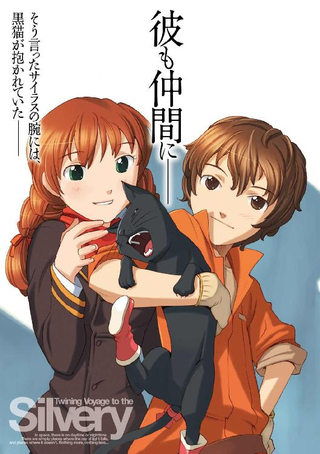
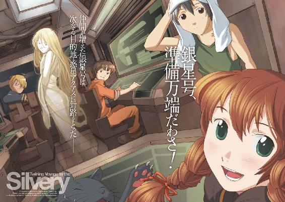
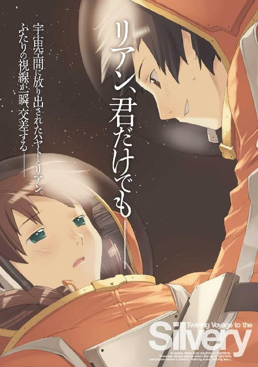
銀星みつあみ航海記
LOG.03 僕が仲間になった理由
鷹見一幸

角川スニーカー文庫
本作品の全部または一部を無断で複製、転載、配信、送信したり、ホームページ上に転載することを禁止します。また、本作品の内容を無断で改変、改ざん等を行うことも禁止します。
本作品購入時にご承諾いただいた規約により、有償・無償にかかわらず本作品を第三者に譲渡することはできません。
本作品を示すサムネイルなどのイメージ画像は、再ダウンロード時に予告なく変更される場合があります。
本作品は縦書きでレイアウトされています。
また、ご覧になるリーディングシステムにより、表示の差が認められることがあります。
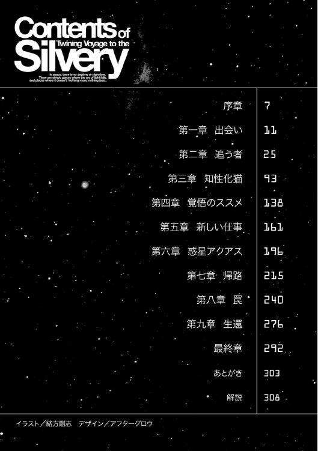
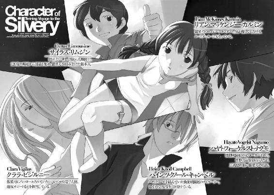
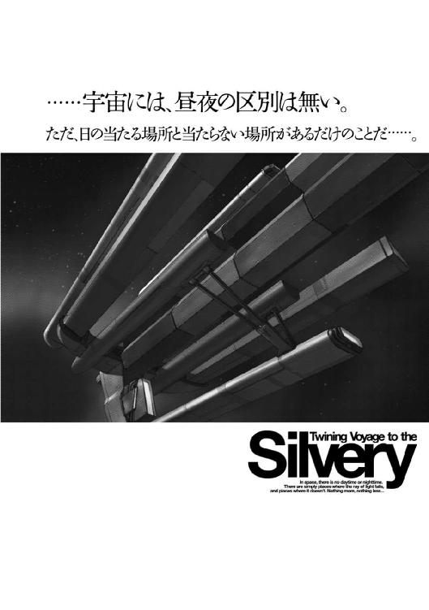
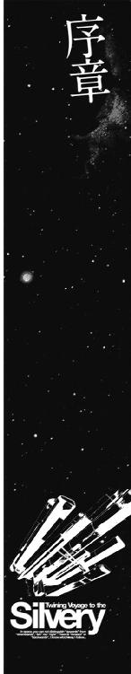
人類の生存圏の半分を支配下に置くマガザン帝国の首都惑星ブックス。その中心にある帝都ピクネクトスには、帝国を統べる皇帝の王宮と、皇帝の手足となって帝国を動かす司法、立法、行政、軍事の各部門の最高機関が置かれている。
しかし、この惑星が帝都に定められたのはつい最近、それも数年前のことだった。
マガザン帝国は、過去に何度となく首都惑星を遷都してきた。
帝国を統治するためには、膨大な数の国家機関とそれに従事する役人を必要とする。そして、帝国の版図が広がるたびに、その数は加速度的に増えていく。
数十年先を見越してそれらの機関と人員を収容するインフラを構築していても、時代が移るに従って訪れる技術革新や社会情勢の変化に入れ物が追いつかなくなってくるのである。
老朽化したインフラを修繕し、更新するコストが積み重なり、新規にすべてを作り直したほうが安上がりになったとき、帝国は古い殻を脱ぎ捨てるように、首都惑星を遷都するのである。
新しい帝都ピクネクトスに建ち並ぶ真新しい高層ビルや、フリーウェイなどの最新鋭のインフラは、まさしく新生マガザン帝国の象徴だった。
そのピクネクトスの中心部から少し離れた郊外にある小高い丘の一角に、人工の池と森に囲まれた邸宅があった。
それは、皇帝がプライベートに使うために建てられた離宮の一つだった。
このような離宮が、帝国の帝都には百近く存在する。
一見すると、贅沢の極みのようにも見えるが、この離宮を転々とすることで、歴代の皇帝は暗殺者から守られてきたという側面もあり、一概に無駄であるとも言い切れない。
その離宮の中にある小さな書斎のような部屋で、栗色の柔らかそうな髪を持つ一人の青年が、通信モニターに映っている五十過ぎの白髪の男と、会話を交わしていた。
「レポートを読ませていただきました......この、辺境惑星ホルストから産するシリリウムは、いわば神が帝国に与えてくれた勝利の可能性です。シリリウムが安定供給され、電子脳の小型化と電子人格の高性能化が進めば、電子人格は帝国の隅々に浸透し、臣民の生活を豊かにするでしょう。それこそが国力を高めることに繫がるのだと思います。
惑星ホルストを封鎖し、エルノリク男爵家から取り上げて、シリリウムを独占し自分たち一族の利益だけを追求しようとするマルス家のやり方は、兄の......タクマ皇帝の国力増強計画に対する明白な裏切りですね......」
若者の言葉を聞いた、モニターの中の白髪の男は、小さくうなずいた。
『マルス家の力によって、この事件は今まで一切報道されず、また通信を途絶させられたために、市民のクチコミですら伝えられることがありませんでした。しかし、封鎖が突破され辺境空域の力関係が変わったために、このニュースは徐々に帝国内に広まりつつあります。
マイア家の資本が入っているマスコミでは、今回の事件を報道することを決定したようです......もっとも、報道と言っても封鎖事件について簡単に報道するだけで、裏でマルス家が糸を引いていたという事実は報道しませんが、人の口に戸は立てられません。風評という形でマルス家がやったことは伝わっていくでしょう。民意の後ろ楯を失ったマルス家の発言力は徐々にではありますが、落ちていくものと思われます』
「そうなってくれるといいんですけどね......我々ディア家は、軍や警察などの司法機関に影響力を持つマルス家と違って、権力基盤が薄くて......もっとも、そのためにマイア家をこっちに取り込むために、私があっちこっち走り回っているわけですが」
そう言って肩をすくめて見せた若者を見て、通信モニターの中の白髪の男は、小さく頭を下げると、感心したように言った。
『タクマ皇帝陛下が即位され、ローデスとの間に休戦協定が結ばれたのも、戦後復興のために様々な改革をすすめることができるのも、これ、すべて陰で尽力する皇弟クリスさまのお力があればこそですな......』
皇弟クリス、と呼ばれた栗色の髪の毛を持つ若者は笑いながら首を振った。
「いや、違うよ大佐。私は何もしちゃいない。この帝国を、よりよい方向に進めているのは、英断を下す兄、タクマ皇帝と、そして、封鎖を突破して餓死寸前の惑星ホルストに食糧を届けた、こういった船に乗っている人たちの力なんだ......」
モニターのサブウィンドウには、レポートに添付されていた画像が表示されていた。
それは、ピンク色に塗られた、旧型の中型コンテナ貨物船の画像だった。
『ええ、彼らは、旧態依然とした帝国の既得権という壁に大きな風穴を開けてくれるでしょう。彼らの船の名は、帝国の人々の間に徐々にではありますが広がりつつあります。彼らは帝国の人々に希望を与えることができると私は信じております......』
大佐と呼ばれた白髪の男は、そう言って満足げにうなずいた。
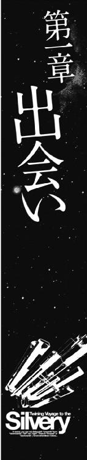
かつて、人類が地表を歩くことしかできなかった頃、世界とは地上のことだった。
やがて、船を造り出したとき、人類の世界の中に海が加わった。
飛行機によって空もまた世界となり、そしてこの時代、衛星軌道上の宇宙空間もまた、人類にとってはありふれた世界となっていた。
惑星エンデバーの衛星軌道上には、大小様々な衛星や無重力下で金属加工を行う工業プラントなどが浮かび、それらの施設の間を、働く人々を乗せた連絡用の宇宙船が、行き交う光景が見られた。
衛星軌道上に浮かぶ施設の中でもっとも巨大なものは、軌道エレベーターで地表と結ばれている人工都市、エンデバーステーションだった。
この宇宙ステーションは、この星系を訪れた人々や荷物を迎え入れる宇宙港であると同時に宇宙で働く人々のための都市でもあった。
地表と軌道エレベーターによって結ばれているこの宇宙ステーションは、惑星の自転と共に動く。そのため、このステーションには、地表と同じように昼と夜が訪れる。
惑星の影に入る、いわゆる夜の時間は地表に比べるとはるかに短いが、それでも昼夜の区別によって、このステーションの中にある都市の人々の生活には一定のリズムが与えられていた。
この、昼と夜のリズムは人間という生き物の体内に埋め込まれた本能であり、いかにテクノロジーが進化し、生化学分野が発達しようとも、乗り越えることはできなかった。
人は、夜に寝て、昼は活動するように作られた生き物なのだ。
夕闇の迫ったエンデバーシティのメインストリートに建ち並ぶ高層ビルの窓々に明かりが灯る頃、そこから少し離れた裏路地にある小さな定食屋や居酒屋の看板にも、明かりが入っていた。
この時間、裏路地の主役は宇宙空間での仕事を終えた作業員たちだった。
一軒の居酒屋の片隅にあるテーブルを囲んで、ビールを飲んでいる一団は、おそらく作業船のパイロットなのだろう。全員同じデザインの灰色のシャツとズボンを身につけていた。
その灰色の服は気密作業服の下に着込む汎用のパイロットスーツであり、汗や蒸れを吸収し分解する抗菌生化学作用に優れた素材で作られていた。
小型の作業船は大きな宇宙船と違って気密室を持っていないため、パイロットは気密作業服を着て船を操作しなくてはならないのだ。
串焼きを食いながらビールを飲んでいた一人の若い男が、居酒屋の店内にあるネットニュースの画面を見て、声を上げたのは、そのときだった。
「あ、銀星号だ！」
顔を上げて、モニターに映る、見覚えのあるピンク色の船体のコンテナ貨物船を見た男たちは口々に言った。
「また何かすごいことやったらしいな、あいつら」
「ああ、そういえば、昼のニュースでやってたなあ。辺境空域で海賊に封鎖されて餓死者が出る寸前に追い込まれていた開拓惑星に、銀星号が食糧を届けたとかなんとか......」
「銀星号って輸送船だろ？ どうやって封鎖している海賊船を突破したんだ？」
「普通に考えれば、まず無理だ。でも、そこをなんとかするのが、ハヤトの腕なんだ」
最初にモニターを見た若い男が、ハヤトの名前を出した、このグループのリーダーらしい三十代半ばの男に聞いた。
「監督は、あの銀星号の船長と仕事したことがあるんですよね？」
「ああ、たった一回だけだがな......もっとも、その一回で、あいつはこのエンデバーステーションと、ラグランジュポイントにあった鉱山コロニーの住民の命の両方と......ついでに俺のクビも助けやがった......たいしたヤツだよ」
「運のいいヤツにはなにをやってもかなわない、ってことですかね......ああ、銀星号の連中に回っている運の一割でいいから俺のところに回ってこねえかなあ」
羨むようにつぶやいた若い男を見て、監督は笑った。
「あいつらが成功しているのは運だけだ......そんな風に思ってるヤツには絶対に運は回ってこない。そういうヤツは運や金が回ってきても、すぐに使い果たしちまう。たとえばだ、もし、お前にハヤトたちと同じ額の宝くじ当たったら、どう使う？」
「え？ 俺っすか？ そうっすねえ、やっぱりいい生活したいっすね。美味いもの食ってキレイな姉ちゃんはべらせて......」
「......まあ、それが普通だな。誰だって最初に考えるのは自分のことだ。自分が楽をしたい。自分がいい思いをしたい......それが普通だ。そして、大概のヤツは、それで終わっちまう......だから運が続かないのさ」
「それって......どういう意味っすか？」
怪訝な顔をする若い男を見て、監督は諭すように言った。
「自分の遊びのためだけに使う金は死に金と言って、何も生み出さない。出て行くだけだ。でも、ハヤトたちのように船を買って会社を始めれば、入ってくる金もあるってことさ」
「でも、必死こいて会社作って働いたって、入ってくる金なんて、宝くじの賞金に比べればスズメの涙みたいなものじゃないっすか。それって馬鹿みたいな話だと思うんですけどね。一生遊んで暮らせるならそっちのほうがいいじゃないっすか」
監督は笑いながら肩をすくめた。
「お前は若いからそう考えるんだろうが......楽な生活ってのは、実は楽しくないんだぞ。俺の知り合いで、株で儲けて、会社辞めて、好きな釣りだけやって余生を過ごすと決めたヤツがいたんだが......そいつは半年もしないうちに釣りをやめて、働きだした。
働かなくてもいいくらいの金はあるのに、なんで働くんだ？ と聞いたらこう答えたよ。
『考えてみれば俺は漁師じゃなかったんだ......』ってな。
何もしなくていい生活には達成感も無いのさ。楽だけど、楽しくないんだ」
「そんなもんすかねえ......」
今ひとつ納得いかない、という顔をする若い男を見て、同僚が笑いながら言った。
「お前は、何をやるにも中途半端だからな、達成感ってのを知らないんじゃないのか？ もっと気合を入れて仕事してみればわかるかもしれねえぞ」
「ああ、そうだな、達成感のある仕事は楽しいんだ......ってのを知ってるのは人間だけじゃねえな。犬だって飼い主に誉めてもらえば喜ぶし、猫だってネズミ獲ってくれば自慢げに見せにくるぞ」
「あ、ひでえ、俺って犬猫以下ってことですか！」
「もっときっちり仕事しろってことだよ」
作業船のパイロットたちが声を上げて笑った頃、居酒屋の外の裏路地は、もう、すっかり夜のたたずまいを見せていた。
透明なドームで覆われたエンデバーステーションの市街地の大気は、暑すぎることや寒すぎることがないように気温が保たれているが、常に一定を保っているわけではない。
太陽の光が差し込む昼と、夜とでは気温が違う。衛星軌道上の夜の周期は地表よりもはるかに短いとはいえ、日が落ちれば気温は低下してゆく。
夜の寒さが忍び寄り始めたその裏路地を、彼は、とぼとぼと歩いていた。
彼は、寒さが嫌いだった。
彼が生まれ育った故郷は、暖かく清潔で、それよりなにより、餓えることが無かった。
......あそこは良かった。あんなすばらしい場所は無かった。先生たちの言うことさえ聞いていれば、俺はまだあそこにいることができたのかもしれない......。
彼は、自分の脳裏をよぎった、暖かな毛布に包まれた幼い日の記憶を振り払うかのように小さく首を振ると、再び夜の街を歩き始めた。
昼間、太陽が与えてくれる暖かさの中で眠り、夜は歩く。それが彼が身につけた生き延びる術だった。決まった家も、定期的に食事にありつけるあても無い彼にとって、夜の暖かな眠りは、手の届かぬ贅沢なものでしかなかったのだ。
裏路地のあちらこちらに残る、同族の匂いを嗅ぎながら彼は思った。
......俺に与えられた知識は、俺が特別な存在であることを教えてくれた。
俺には無限の可能性があるのだ。
愚鈍な同族どもにはできないこと......そう、俺の手でこの世に何かを生み出すことができる。そう俺は信じていた......。
なのに......今の俺には、その愚鈍な同族と同じ生き方で生きていくことしかできない。
今、俺の感じている吐き気は......自分に対する絶望なのか、それとも、もう三日も食い物を口にしていない空腹からくるものなのか......。
俺は自由と可能性を求め、先生の言うことに逆らって外の世界に飛び出した。
......今、俺を束縛するものは何も無い。俺は自由を得ている。
そして、その自由の中には、餓えて死ぬことができるという自由も含まれているということに、俺は気づいていなかった......。
彼は自嘲するように小さくため息をつくと、裏路地から一本表通りに出たところにある、中央公園に足を向けた。
公園の方からは行きずりの人に食物を乞う、同族たちの声が聞こえていた。
......人に媚びて食物を乞う、あの同族どもの姿を見たとき、俺は最初に怒りを覚えた。
人の社会に寄生して生きていくことに微塵の疑問も持たぬ、あの誇りのカケラもない行為を見たとき、俺は愚鈍な同族どもを腹の底から軽蔑した。
あんな姿だけは晒すまい。あんな真似をするくらいなら死んだほうがマシだ......俺はそう思っていた。
でも......そんなプライドに何の意味があるのだろう？ 死んでしまえば、すべては無に還る。俺のすべてが。
彼は、空腹と寒さでふらつきながら中央公園に足を踏み入れた。
広く開いている中央公園の空は、薄紫色に輝いていた。
それは、惑星の向こうに隠れようとする太陽の光が、このエンデバーステーションを覆う透明な硬化テクタイトのドームの真横から当たるために起きる現象だった。
あと三十分もしないうちに、太陽は惑星の向こうに沈み、この空は星空に変わるだろう。
公園の中には、この薄紫に染まるエンデバーステーションの夕暮れと、きらめく光の塔と化したオフィス街のビルの群れを見物する観光客たちが、そぞろ歩きを楽しんでいた。
公園のあちこちに、そういった観光客を相手に、フィッシュ＆チップスや、ホットドッグなどの軽食を売る屋台が出ており、公園の中から周辺の商業地区へと流れる空気には、いかにも食欲をそそる美味そうな匂いが混じっていた。
その匂いを嗅いだとたん、彼の胃がぎゅぅううっと収縮した。
めまいにも似た感覚とともに、彼はふらふらと匂いの元に吸い寄せられて行った。
それは、屋台から流れてくる匂いではなかった。その手前にあるベンチに座った一人の少年の抱えている包みから漂う、植物油で揚げられた香ばしい白い魚肉の匂いだった。
他の同族たちが食物を乞う姿を見ていた彼は、食物を与えてくれる人の多くは、年配の女性であることを学習していた。
そして若い人......特に若い男性に食物を乞うても、成功率は低く、逆に暴力的な仕打ちを受けることのほうが多いということも知っていた。
しかし、彼はそのすべてを忘れ去り、ふらふらと、そのベンチに座った少年のところに近づいて行った。
年齢は十五歳くらいだろうか？ 茶髪で鼻筋にソバカスを浮かべた、一見すると生意気そうな顔つきのその少年は、足元に大きなキャスター付きのラゲッジバッグを置き、どこか投げやりな姿勢で、膝の上に置いた紙袋の中に手を突っ込んで、指先を油まみれにしながら、白身魚のフリッターを齧っている。
そのフリッターの匂いにひき付けられるようにベンチに近づいた彼は、少年の足元に置かれたラゲッジバッグのネームタグを読んだ。
そこにはこう書かれていた。
『エンブリオ工科技術専門学校船舶機関士科サイラス・リムジン』
......そうか、この少年の名前は、サイラスというのだな。
サイラスという名前の少年は近づいて来た彼に気がついたのだろう、ちらっと視線を走らせた。
その視線を見たとき、彼は少し驚いた。
それは、今までこの街で一度も浴びせかけられたことのない、親しみに満ちた視線だった。そして、少年はにっこり笑って、膝の上の包みからフリッターを一個摘み上げ、それを彼に差し出して言った。
「やあ、こんばんは、一緒に食べるかい？」
彼は、一瞬戸惑ったような表情を浮かべたあとで、そっと近づいた。
脳裏に、一瞬、この開けっぴろげの好意の裏に何かが潜んでいるのかもしれない、という疑念が浮かんだ。しかし、その疑念は目の前に差し出された白身魚のフリッターの匂いの前に、いとも簡単に吹き飛んだ。
白身魚のフリッターはまだ熱かった。
彼は熱い食べ物は苦手だった。いつもならもっと冷めてから食べただろう。だが、胃と身体は、そんな苦手など関係無しに、食物を求めていた。
吐く息でフリッターを冷まそうとする口の動きと、一刻も早く飲み込もうとする喉の動きが混じった「はうはう」とも「まうまう」ともつかない妙な声を上げて、彼は白身魚のフリッターをむさぼり食った。
熱い油にまみれた衣と白身魚の肉が、喉と食道を焼いて、胃の中に落ちていくのがわかる。喉の痛みも灼熱感も、油脂の美味さの前にはどうでもいいことだった。
瞬く間にフリッターを一個ぺろりと平らげた彼を見て、少年は目を丸くしてつぶやいた。
「......ずいぶん腹を減らしていたんだな。見たところ、家なしには見えないけど......」
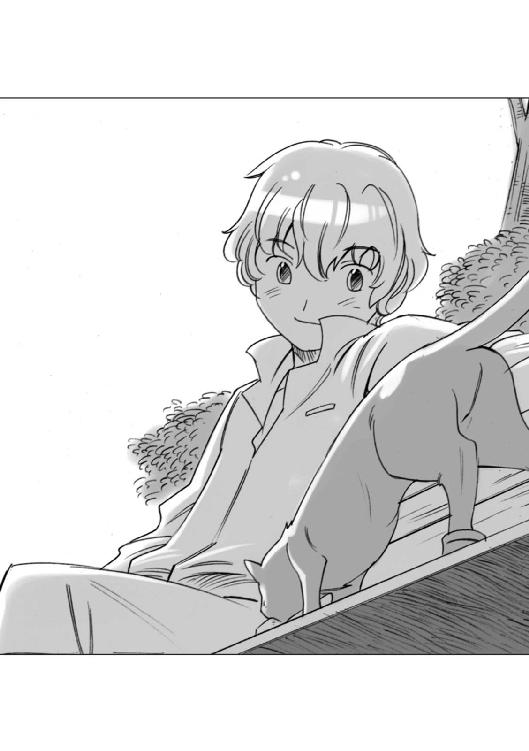
そして、笑いながら言った。
「よし、残ったフィッシュ＆チップスは、君と半分こにしよう」
彼はベンチの上にひょい、と飛び乗ると、包みの中に手を突っ込んで、フリッターを取り出そうとした少年に向かって頭を下げた。
少年は、びっくりしたように、もう一度目を見開いてから笑った。
「お礼かい？ 頭を下げられるとは思わなかったな......このフリッターは僕より君のほうが必要としているみたいだしね。なくなったらもう一袋買えばいいだけのことさ」
少年は、そう言うと彼にフリッターを差し出した。
彼は、少年が自分の身体に触れようとしないことに気がついていた。
大抵の人間は、こういうとき、身体を撫でようとする。それは親愛の情を表すことであり、我々もそれを喜ぶに違いないと決めてかかっている。
しかし、実際には、それを無条件に喜ぶほどに人に気を許してはいない者のほうが多いのだ。......この少年は、故郷にいた先生と同じ匂いを持っている。
我々を従属物として溺愛するわけでもない、見下すわけでもない、生命を持つものとしての尊厳を知った扱いをしてくれる人間の匂いだ。
彼は、もう一度小さく頭を下げると、フリッターを食べ始めた。
フリッターは、さっきよりも冷めていて食べやすかった。
ベンチに座った少年は、視線を頭上に移した。
エンデバーステーションが、惑星の影に入っていくのと同時に、紫色に輝く天蓋は見る見るうちに透明さを取り戻していく。
そして、ステーションの、硬化テクタイトの天蓋の向こうに無数の星が輝く夜空が訪れた。
少年は、自分の頭上に広がる星の海を見上げながら、彼に向かってつぶやくように言った。
「僕の乗る予定だった船は、まだ、あそこにいるんだよ......本当は今日の夕方に入港する予定だったんだけど、なんか入港手続きに手間取って遅れているんだ......フュージリアグループが、また嫌がらせしてるんだってハヤト船長が言ってた......」
フリッターを食べるのに夢中だった彼の耳がぴくり、と動いた。
......フュージリアグループだと？
それは私を追っている組織の名だ。私の故郷はその組織の手によって運営されていた。
故郷を出て、外の世界に出て、私は驚いた。
あの組織の名と、そしてシンボルマークを、この世界のいたるところで見ることになったからだ。
あの組織は、どれほど大きく、どれほどの力を持っているのだろう？
ああ、くそ、今、目の前に汎用端末があれば、あの組織のことを、より詳しく調べることができるのに......。
それにしても、どうしてこの少年が、その組織の名を口にしたのだろう？
......まさか......この少年も追っ手なのか？
彼は警戒するような目で少年を見上げた。
少年は、自分を見上げる彼の視線に気がついたのだろう。空を見上げていた顔を下ろして視線を彼に合わせ、そして不思議そうな声でつぶやいた。
「へえ......君の目は......緑色なんだね、珍しいな」
その言葉を聞いたとき、彼の身体からふっと力が抜けた。
......違う、この少年は、追っ手などではない。この少年は私の正体すら知らないのだ。
警戒心を解いたのが、わかったのだろう。少年は、すっと手を伸ばして、ごく自然に彼の頭に触れた。
......人の手に触れたのは、何週間ぶりだろう。
彼はじっと目を閉じて、温かく、そして柔らかい少年の手の感触を味わっていた。
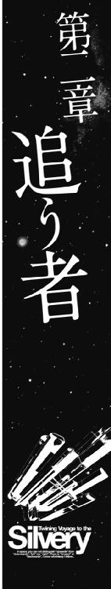
『素体 六号が見つかったですって？』
六号が見つかったですって？』
通信スクリーンの中に浮かび上がった二十代半ばのショートカットの金髪の女性は目を見開いた。
『状態は？ 生きてるの？ 死んでるの？』
たたみかけるように聞いてきた女性に向かって、通信スクリーンのこちら側にいる、少しくたびれた感じのダークスーツを着た三十歳くらいの男が、首を振って見せた。
「いや、まだ確認したわけではありません。似たような猫がエンデバー宇宙港の監視モニターの記録映像の中から見つかった、ということです」
ショートカットの女性は一瞬落胆したような表情になったあとで、通信スクリーンの中から男をにらみつけた。
『私は忙しいのです！ 素体六号に似た猫がいた......ただ、それだけのために私を呼び出したのですか？ 私が欲しいのは素体六号そのもの、もしくは彼の情報です！ 似ているだけの猫の情報なんか欲しくはありません！』
そして、彼女は猜疑心丸出しの表情で男を見た。
『確か......あなた方は、フュージリアグループの正規部門のエージェントではなく、契約エージェントでしたわね』
男は表情も変えずに答えた。
「ああ、そうですよ。成功報酬しかもらえない、しがない下請け契約エージェントですよ......で、一つお聞きしたいのですがヒルデガルド博士......契約エージェントは信用できないから調査の進展状況を逐一報告しろとおっしゃったのはどちら様でしたっけね？」
ヒルデガルド博士と呼ばれた女性は、言葉に詰まったように口を二、三回ぱくぱくとさせてから、言い訳するように答えた。
『そ、それはそうですけど......でも、だからと言って似た猫がいた、というだけでいちいち呼び出されたんじゃたまらないわ。素体六号の外見は、普通の黒猫とまったく変わらないのよ？』
男は小さく笑った。
「ただの黒猫の話をしているんじゃありませんよ。我々が見つけ出した映像に映っている猫は、どう見ても普通の猫じゃない......そう、知性化されているとしか思えない行動を取っているんですよ。でも、我々は彼......つまり素体六号の普段の行動パターンを知らないのでね、その行動が偶然なのか、それとも知性化された結果による行動なのか区別がつかんのですよ......そいつを確認してもらおうと思いましてね......」
ヒルデガルド博士は、納得した、というように小さくうなずいた。
『そういうことですか......わかりました、映像データはありますか？』
「ライブリンクを張ってあります。サブウィンドウに表示された映像を同時に見ることができますので、それを見てください」
男の見ている通信モニターの脇に、サブウィンドウが開き、斜め上のアングルから街行く人々を捉えた街頭センサーカメラの映像が映し出された。
それは、どこかの五叉交差点の映像だった。画面の下から走って来た地上車と人の群れが、信号に沿って規則正しく振り分けられていく。
「もうすぐ下の道から猫が一匹やってきます。その行動を見ていてください」
男の言葉が終わるのと同時に、画面の下に一匹の黒猫が現れた。
歩道の隅を歩いてきた黒猫は、交差点の手前で立ち止まると、左手にある観光案内図を見上げた。
一呼吸ほどの時間のあと、黒猫はその場に座って、交差点を見回した。
そして、信号が変わって右からコミューターバスが走ってくると、それに気がついたように、はっとバスを見上げ、そのバスをずっと視線で追ったあと、納得したような自信に満ちた足取りで、バスが走って行った方向に歩いて行った。
映像はそこで終わった。
ヒルデガルド博士は、通信スクリーンに視線を戻すと、男に聞いた。
『......あなたが、この映像を見て、あの黒猫が素体六号かもしれないと判断した理由は？』
男は汎用端末の前にあるパッドを操作しながら答えた。
「今の映像を拡大再生してご説明します......」
通信端末のサブウィンドウの中に映る黒猫の映像が拡大され、ぼやけた輪郭が一瞬にしてピントが合ったようにシャープになった。
画面の下から歩いてきた猫をポインターで指示して男は言った。
「この時点における、この猫の頭の動きと足の運びは、目的が定まっていません。あたりを警戒しつつ歩いています......そうですね、人間で言えば初めて訪れた街を歩いている状態でしょう......そして、この猫は、ここでこの歩道の脇にある観光案内図に気がつきます......ここですね。この案内図は、アニメーション表示が行われていますから、単に動く物に意識が行くという猫の習性が、この猫にこういった行動を取らせたのかもしれません。しかし、この頭の動きをよく見てください......頭の動きを拡大します」
サブウィンドウの黒猫の映像がさらに拡大された。
「猫の頭と目の動きが、観光案内図のアニメーション表示とは異なるタイミングで動くのがおわかりでしょうか？ もし、この猫が動画だけに関心があるとしたら、頭と目の動きは観光案内図の動きにシンクロするはずです。しかし、この猫は、動きとはまったく違う部分を見ています......つまり、この猫は、この案内図を読んでいるのではないかと思われます」
男はパッドを操作して、画面を早送りした。
「疑問に思われる行動は、これだけではありません。この次にこの猫が取る行動を見てください。
猫の視線は、右手から来たコミューターバスに注がれています。
ご覧のとおり、この交差点は他にも何台も地上車が走っております。コミューターバスも一台だけではありません。では、この猫はなぜこのコミューターバスに注目したのでしょう？」
画面の中の黒猫は、コミューターバスの前面に注目し、そして目の前を通り過ぎたときには車体の側面を見上げていた。
「この視線の移動がおわかりですか？ この猫は、まずコミューターバスの前面に注目し、そして次にその車体の側面に注目しています。そこに何があるのか......」
映像の中のポインターが、バスの前面と側面に動いた。
「ここにあるのは、バスの行き先表示窓です。つまり、このバスの目的地を示したものです。この猫はバスではなく、バスがどこに行くのか、それに関心を持っていたのではないかと、我々は判断しました......」
画面の中の猫は、バスが走っていった方向を見ると、その後を追うように歩き出した。
「そして、この歩き方です。この猫が最初にここに来たときの歩き方や頭の上げ方とは明らかに違います。これは、目的地が定まったということを意味しているのだと我々は判断しました。つまり、この猫は......」
男がそこまで言ったとき、ヒルデガルド博士が笑いながらあとを続けた。
『観光案内図を読み、自分の位置と目的地の情報を知り、そしてバスの行き先表示窓を見て、方向を確認して、目的地を確認してから歩き出した......つまり、文字を読み、情報を取り入れて処理し、自分で推察して行動している。つまり、知性化されている猫であろう、という結論に達したということね？』
男はうなずいた。
「そのとおりです。猫が向かった先の街頭センサーカメラの映像も分析中ですが、この黒猫がエンデバーステーションシティの最上階中央部に向かったことは確実と思われます」
ヒルデガルド博士は満足そうな微笑みを浮かべて言った。
『わかりました、この映像に捉えられた黒猫は、ほぼ間違いなく素体六号であると思われます......それにしても、あなたが街頭センサーカメラの映像だけで、これほどまでに的確に分析し推察できるとは思ってもおりませんでした......もしかして行動心理学を学ばれましたか？』
男は、自嘲するように肩をすくめて言った。
「一応、帝国アカデミーの博士号を持っております。アーレカ誌に論文が掲載されたこともありますがね......まあ、昔の話ですよ」
ヒルデガルド博士は目を見開いた。
『アーレカ誌に？ あそこに論文が掲載されるってことは、超一流の学者の証明じゃないですか！ なのになんで......』
男は微笑んだ。
「......なんで、こんな契約探偵エージェントみたいなことをやっているのか......その理由はおそらくヒルデガルド博士のような学究の徒にはご理解できないと思いますよ。
学問には実際にフィールドに出て実証を積み重ね、探究していく方法と、脳内で理論を積み上げて、真理を追究していく方法があります。私は前者の人間でしてね......そしてこの道を選ぶと、どうしても現実社会と関わらざるを得ない......自分の存在理由を学問ではなく、現実社会の中に求めたくなるんですな。社会的にどんなことができるのか......そっちのほうが大事になってしまうんですよ......そして行き着いた先が、この仕事というわけです」
『わかるような気がします......あなたの仕事のレベルは実に満足のいくものです......先ほどは契約エージェントという立場だけであなたを蔑んだような言い方をしたことを恥ずかしく思います......申し訳ありませんでした』
そう言って素直に頭を下げたヒルデガルド博士を見て、男はあわてた。
「あ、いや。とんでもない！ クライアントの方に頭を下げさせるわけにはいきません！ 立場が逆ですよヒルデガルド博士！」
ヒルデガルド博士は首を振ったあとで、少し顔を赤くして言った。
『ヒルダ......と呼んでいただいて結構です......素体六号を確保するために、私たちも準備が調い次第エンデバーステーションに向かいます。そちらでお会いしましょう、ギリアム......さん』
ギリアムと呼ばれた男は、ちょっと驚いたような顔でうなずいた。
「え、ええ、ではお待ちしています」
通信画面が消えたのを見て、ギリアムと呼ばれた男の横にいた、小太りの若い男が、にやにや笑いながら話しかけてきた。
「ギリアム所長の経歴知ったとたん、あのヒステリー博士、急にしおらしくなりましたね......やっぱりインテリの女って肩書きには弱いんですかね？」
ギリアムは、その若い男をちらりとにらんだ。
「だからお前は考えが甘いと言っているんだ、エキト。肩書きだけで扱いが変わるもんか。ちゃんと仕事をやって見せて、納得したから扱いが変わったんだ。実証のみが仮説に説得力を与える......と、いつも言っているだろうが」
エキトと呼ばれた若い男は、ひょい、と肩をすくめて、ぼやくように言った。
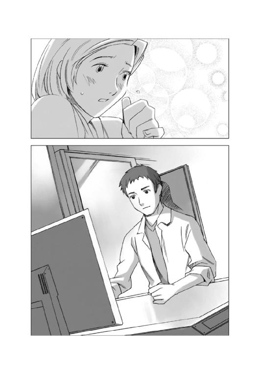
「俺は探偵事務所の助手なんですよ。学生に講義するような言い方は、いいかげんやめてくださいよ、所長。まあ、実証が必要だってことは認めますけど......それにしても、どうして、逃げた猫を探す仕事なんかやらなくちゃいけないんですか？ こういうのは普通、俺たちみたいな調査エージェントの仕事じゃなくて、便利屋さんとかの仕事じゃないんですか？」
「普通の猫ならな......でも、俺たちが追いかけている猫は普通じゃないんだ。お前もデータを読んだだろう？」
「ええ、体長四十五センチ、みずがめ座。体毛黒、目は緑色、右利きで、気難しい。好きな音楽はポップス系、好物はさよりの合わせ干物、甘いものは苦手......どこのタレントのプロフィールだ、って言いたくなるようなデータでしたけど......それにしても人の言葉がわかる動物なんて、別に珍しくもないですよ。うちで飼っていた犬なんか呼べば来るし、芸だってしますし......」
そう言って首をひねったエキトを見て、ギリアムは小さくため息をついた。
「訓練された動物は、確かに命令を聞く。でもそれは一種の条件反射だ。理解しているわけじゃない......そうだな、人間の文字を読んで理解できる、と言い換えれば知性化の意味が通じるだろう」
「文字を......読んで理解......ですか？」
エキトは目を見開いた。
「それって、つまり本を読むことができるって意味ですか？」
「そうだ。俺たちが追っかけている猫は、本が読めるんだ。つまり、そこに書いてあることの意味を理解できる。単純な計算も想像力を働かせて推理もできる。たとえば目の前にソーセージが並んでいれば、その賞味期限を見て新しい物を選べるんだ。日付の意味や、今現在とその日付との関係も理解できる......もしかしたら、古い物から先に食ったほうがいいと考えて、あえて古いソーセージから食うかもしれん......そういうことができる猫なんだ」
そしてギリアムはエキトを横目でにらんで付け足した。
「もしかしたらお前よりも知的かもしれないな......」
「うわ、ひでえ、俺って猫以下ですか？」
エキトはそう言って顔をしかめ、真面目な顔になって聞いた。
「......でも、どうしてそんな猫を開発する研究が進められていたんですか？ なんでも漏れ聞いた話だと、この研究には何百億クレジットも注ぎ込まれているってことなんですけど、よほど好きな人じゃないと、生身の、それも会話ができるような猫を飼う人はいないと思うんですよ。猫の寿命は人間よりはるかに短いわけですから。
ペットに死なれるのは辛いですよ。だから電子人格を搭載した、死なないテクノペットが普及しているんですよ。まして文字を使って会話ができるような相手に死なれるのはもっと辛いんじゃないかと思うんですけどねえ」
ギリアムは真面目な顔で答えた。
「この知性化猫は、民生用......つまりペット用に開発されていたわけじゃないんだ。こいつは軍事目的だったのさ」
エキトは目を丸くした。
「軍事用？ 猫に機動服着させてショックガン持たせて突撃させるんですか？」
「馬鹿、どうして猫を兵隊にしなくちゃならないんだ！ 帝国はそこまで人手不足じゃねえぞ！」
「それって、猫の手も借りたい......って意味のジョークっすか？」
にやにや笑うエキトを無視してギリアムは続けた。
「正確に言うと軍事利用というよりも情報収集用......要するにスパイ用だと思えばいい。猫は人間が入っていけない場所にも入っていけるし、何よりも警戒されない。テクノペット改造の猫やサイボーグ化された猫と違って知性化された猫は生身の猫と変わらないから透視センサーで見破られる心配が無いし、遠隔操縦しなくとも自分で判断して行動できる。敵地に潜入させるにはもってこいだ」
自分のジョークが相手にされなかったためだろう、エキトは少し不満そうな顔で聞いた。
「でも、確か動物の知性化って、五十年くらい前にチンパンジーとかゴリラに行われたあと、禁止になったんですよね......種の混乱を防止するとか、そういった理由で......この研究はもしかしたら、法律違反だったんじゃないんですか？」
「まあな、一応帝国生命医学倫理規定で、霊長類に対する知性化は禁止されているんだが......それ以外の動物の知性化は禁止規定が無い......というか、本能の強い動物の知性化は不可能だと言われてきたんだな。んでもって猫というのは狩猟本能の強い隷属しない動物だ......」
ギリアムの言葉を聞いたエキトは、感心したような口調でつぶやいた。
「へえ、じゃあ、あのヒステリー博士は、それに成功したんだ......すごいですねえ」
「ヒステリーじゃなくてヒルデガルドだ......まあ、そう言いたくなるのもわからんでもないが、彼女の立場にしてみれば、ヒステリックになるのも無理は無い。逃げた知性化猫が野良猫どうしのケンカに巻き込まれたり地上車にひかれたりして死なれたら、莫大な開発費が全部無駄になるからな......」
ギリアムはそう言うと、汎用端末の前から立ち上がって言葉を続けた。
「さて、出かける支度をしろ。街に出るぞ。フィールドワークだ」
「支度と言ったって、ここはホテルですよ？ 猫を捕まえるための網とか用意していませんけど......どっかのホームセンターで買ってきますか？」
ギリアムは首を振った。
「俺たちの仕事は、対象の選別と監視だ。対象を捕獲するのはヒルデガルド博士たちの仕事さ......下手に手を出して怪我でもさせられたらたまらん、ということだろう」
「人間の尾行追跡じゃなくて、猫の尾行追跡ですか......スーツじゃなくて作業服を着て行ったほうがいいな、こりゃ......」
エキトが情けなさそうにつぶやいた......その頃。
エンデバーステーションに隣接する、帝国軍の停泊地の片隅に、一隻の軽巡航艦サイズの灰色の船が浮かんでいた。
軍艦と同じ色に塗装されているものの、その船には、所属を示す艦籍番号や所属部隊を示す部隊マークなどは一切無い。
武装の代わりに船体から四方八方に大小、長短様々な種類のセンサーアンテナがトゲのようにいくつも飛び出しているその船は、エルキュール侯爵領方面軍に所属する情報収集艦だった。
マガザン帝国の国家構造は、一種の封建体制である。
その勢力範囲は皇帝が直接治めている直轄領と、貴族である地方諸侯の統治する領地とに分かれており、地方諸侯は自分の領地の完全な自治権を持っている。
その自治権の中には軍隊を編制する権限も含まれており、帝国軍とは、それらの諸侯が率いる地方軍と皇帝の直属軍との総称である。
宿敵ローデス連合との全面戦争を行うとき、帝国皇帝の命を受けた諸侯軍は、自分の領地の地方軍を率いて帝国皇帝の下にはせ参じ、帝国軍総司令部の指揮下に組み込まれ、皇帝直属の軍集団と同じように編制されて運用される。
このときに各諸侯が抱えている地方軍の装備や軍艦の性能にバラつきが生じては統制が取れないため、帝国軍務省は帝国標準制式と呼ばれる統一スペックを制定していた。
各諸侯は、このスペックに従って軍艦を建艦したり装備を調えるのである。
そして、ローデスとの戦争が休戦となり、戦時編制が解かれると、地方軍の指揮権は各地方の領主の手に戻される。
地方領主は地方軍を自分の領地の治安維持部隊として領民の保護のために運用することになるわけである。
ローデスという共通の敵が消えたあとの各領主の関心は、自分が帝国国内において、どのような地位につけるかを争う権力闘争に向く。
停泊地に浮かんでいた情報収集艦は、エンデバー星系を治めるエルキュール侯爵家が、この帝国国内の権力闘争で勝ち抜くために運用している軍艦の一隻だった。
情報収集艦の中央部にある総合情報処理室で情報収集用の各種デバイスをモニターしていたオペレーターの一人が、低い声で言った。
「ヒルデガルド博士と、契約エージェントとの通信傍受は終わりました......再生しますか？ 中佐」
総合情報処理室を見下ろす位置に座っていた、中佐と呼ばれた顔色の悪い瘦せた男は、不機嫌そうに首を振った。
「いや、くりかえして聞くほどの新規の情報は無い。あの中で有用だったのは、素体がエンデバーステーションの中央区画にもぐりこんでいる、ということだけだ。我々は実行部隊に目的地を指示するだけでいい」
中佐の隣に座っていた、副官らしい男が、眉をひそめた。
「素体の捕獲については、研究所とフュージリアグループが雇用した調査エージェントが、すでに動いております。我々地方軍が特殊部隊を投入する必要があるのでしょうか？」
中佐は不機嫌な表情を崩さぬまま答えた。
「この知性化猫プロジェクトは、エルキュール侯爵領地方軍の莫大な予算を注ぎ込んだプロジェクトなのだぞ！ 実用化できれば、収集できる情報の量と確度は格段に上がる！ 帝国国内の他の諸侯を出し抜いて、我がエルキュール侯爵家の当主が皇帝の座につくことも可能なのだ！ 素体は絶対に他の勢力に渡すわけにはいかん。あの学者女め、自分の失敗を糊塗するために軍当局に報告せずに......まして探偵などを雇いおって......あんな素人どもに任せておけば失敗するに決まっておる！ この件は我々のようなプロに任せておけばいいのだ！」
副官は小さく首を振った。
「知性化猫プロジェクトは、情報部が直接関与していたわけではありません。あれはフュージリアグループ主導によって行われていたもので、予算の使い道を帝国中央政府に知られないために、開示義務の無い地方軍情報部の予算から転用していたに過ぎません。ヒルデガルド博士が軍に報告しなかったことを責めるのは筋違いというものです」
中佐はこめかみに青筋を立てて怒鳴った。
「では、あの探偵はどう説明する！ あいつらはフュージリアグループの部内エージェントではない！ 契約エージェントだぞ！ あんなアルバイト気分の部外者をこのような重要機密事項に引っ張り込むなどとんでもない！ どこから情報が漏れるかわからんではないか！」
副官は、やれやれ、という風に小さく首を振って説明を始めた。
「契約エージェントは、確かに企業体に対する忠誠心はありません。世の中には信頼性の無い契約エージェントが多く存在しておるのも事実です。しかし、信頼できる契約エージェントは、企業体に所属する正社員よりもはるかに有能で確実です。仕事の出来不出来がそのまま評価になる彼らの世界では、確実な仕事をしなければ生き残っていけないのです。いわば彼らは銃を持たぬ傭兵のようなものなのです。中佐は彼らをアルバイトと同様に評しましたが、それは認識違いだと思われます......」
「し......しかし、あいつらが作戦行動の素人であることについては疑問の余地は無い！ 素体の確保に関しては万全を期するためにも我々が行うべきだと判断する！ 貴様は私の命令どおり、特殊部隊をエンデバーステーションの中に展開させればいいのだ！」
「了解しました」
副官は諦めにも似た表情で敬礼すると、一歩下がって、通信端末に取り付いている通信オペレーターに向かって言った。
「作戦開始だ。待機中の第一中隊に行動開始のキーワードを送信しろ......」
そして、副官は通信オペレーターに小さく目配せしてから、小声で付け足した。
「......関連する各局にも連絡を入れておくように......」
「了解しました」
通信オペレーターが、そう答えて小さくうなずいた、その頃。
エンデバーステーションの最上階にある中央公園の入り口では、フュージリアグループのマークが胸に入った、清掃局の作業服を着たギリアムとエキトの二人が、中央区画へ足を踏み入れようとしていた。
「よし、ここに例の猫がいるはずだ、逃がすなよ」
「わかってますって」
エキトがそう答えたとき、ギリアムの耳の中にある汎用端末のイヤホンが呼び出し音を奏でた。
ギリアムは耳に手をやって、イヤホンのスイッチを押しながら、骨伝導マイクで答えた。
「はい、こちらギリアムです。申し訳ありません、行動中ですので音声モードのみでお願いします」
イヤホンの中からヒルデガルド博士の声がした。
『ヒルダです！ 今、エンデバーステーションに着きました、そちらに向かいたいと思いますが......今どちらにいらっしゃいますか？』
「我々は、今ステーションシティの最上階にある中央区画にいます。ここにある中央公園は猫好きの住民が与える餌を目当てに野良猫や放し飼いの猫が、よく集まっているそうです。素体六号も、おそらくここで餌をもらっていたのではないかと思われます」
『わかりました、研究所の職員とすぐにそちらに向かいます！ 発見したらすぐに教えてください！』
「了解しました」
ギリアムは指にはめた端末コントローラーの端子を弾いてスイッチを切ると、エキトに言った。
「ヒルダ博士が到着したそうだ、こっちに向かっている......公園に入って対象を探すぞ」
エキトは、一瞬怪訝な顔をしたあとでうなずいた。
「ヒルダ博士って......ああ、ヒルデガルド博士のことですか」
「ヒルデガルドってのは舌を嚙みそうだからな、まあ本人もそう呼んでくれって言ってるんだ、簡単な呼び方のほうが楽だし、いいんじゃないか？......行くぞ」
「あ、はい！」
エキトは中央公園に向かって早足で歩き出したギリアムの後をあわてて追いながら聞いた。
「それにしても、どうしてその素体とかいう猫は、このエンデバーステーションに逃げ込んだんでしょう？ 地表にいたほうが、隠れる場所もたくさんあるでしょうに......」
ギリアムは肩をすくめた。
「さあな？ その辺は猫に聞いてみるしかないが......広い世界を知りたかったのかもしれん」
「地表だって結構広いと思うんですけどねえ......」
ギリアムは肩をすくめて見せた。
「自分の周りの世界だけが世界だと思い込んでいるとな、世界を知ったような気になるんだ。本当の世界の広さなんか知りもしないのに、宇宙空間とか、他の星系とか、そういった広い世界というイメージにあこがれるのさ......まあ家出少年に共通のメンタリティだな」
エキトは笑った。
「家出少年ですか......猫ですけどねえ」
「実際の知能は十五歳くらいだそうだ......家出したがる世代と同じだ。お前にも覚えがあるだろう？」
エキトは照れくさそうに笑った。
「ええ、まあ、俺は十五のときに家出して補導されたことありますから、もうバリバリにわかりますね、その感覚......」
「その感覚をフルに使って、自分ならどうする、と行動を予測してみろ。推理、推察、洞察、この三つが探偵調査業の基本スキルだぞ」
「自分ならどうする......って言われても、相手は猫ですよ？」
「世界観の狭さは似たようなモンだろう？」
「あ、ひでえ」
「ぶつくさ言ってないで、さっさと猫を探せ、きっとこの近くにいるはずだ」
「へいへい」
不満げに唇を尖らせたエキトにギリアムが言った。
「生物センサーを使って、猫の居場所を確認したら、近づいて色と大きさを確認しろ......センサーは色や大きさまでは教えてくれんからな」
「はい......」
そう言ってうなずいたエキトは、持っていた端末のモニターを見て驚いたように言った。
「うわ、このエリアだけで四十二体もいますよ......なんでこんなに猫が多いんですかここは？」
「どこの宇宙港にも野良猫は多いんだ。基本的に船のネズミ退治になるとか、船乗りのペットとして、室内でも飼える猫が重宝がられていたという理由もあって、宇宙港に猫はつきものみたいなところがあるんだ......ここでとっ捕まえないと、どっかの船乗りにでも連れて行かれたりして、えらいことになる。気ィ入れて探せよ」
「わかりました......」
エキトは、ちょっと真剣な顔になって、センサーを見ながら生物反応のある方角に歩き始めた。
中央公園の片隅に置かれたベンチに座ったサイラスは、横でフリッターを一心不乱に食べている黒猫から、自分の足元に置いたラゲッジバッグに視線を移した。
......工科技術専門学校の期末テストも終わって、やっと期末休みになって......これでこの休みの間、ずっと銀星号に乗れるぞ！ って喜び勇んでここまで来たのに、肝心の銀星号が入港してないんじゃどうしようもないよなあ。どうやって時間を潰そうかな？
そこまで考えたとき、横にいた黒猫が、遠慮がちに「にゃあ」と鳴いた。
「あ、ごめん、食べ終わったのに気がつかなかった......もっと欲しいのかい？」
黒猫は、小さくうなずいて鳴いた。
「にゃあ」
「なんか会話しているみたいな気がするな......一人でぶつぶつ言っていると、危ない人に思われちゃうから、君を相手に話そうかな......」
サイラスはそう言うと、笑いながらフリッターを差し出した。
黒猫は、知らぬ顔をしてそのフリッターを食べ始めた。
「僕はね、宇宙船に乗るためにこのステーションに来たのさ。お客さんじゃないぜ、一人前の宇宙船乗りになるためなんだ。
......まあ、見てのとおり僕はまだ学生だけど......でも、ちゃんと二級宇宙空間推進機整備士の資格を取ったんだぜ。有資格者ってわけさ、すごいだろう？」
黒猫はフリッターから顔を上げて、鼻先をぺろり、と舐めると小さく首をかしげて鳴いた。
「にゃあ？」
「うーん、猫の君には難しい話だったかもしれないな。じゃあこう言えばわかるかな？ 僕はこれから機関士として、宇宙船に乗り込むんだぞ......ってね。
僕の乗る船の名前は銀星号っていうんだ。この宇宙を自由に飛び回って、いろんな星系に物を運んでいるんだぜ」
黒猫は、食べかけのフリッターをそのままにして、考え込むような素振りをして見せた。
その顔を見て、サイラスは笑った。
「家がないなら一緒に来るかい？ 宇宙船に猫を乗せると縁起がいいって言われているから、もしかしたら、ハヤト船長は認めてくれるかもしれないよ？」
猫は、驚いたように目を見開いて鳴いた。
「にゃあにゃあ」
そして、右の前足の爪を立てると、座っていた集成材の木のベンチの表面を、ひとしきりがりがりと引っかいた。
そして、引っかき終わると、今度はサイラスの上着の裾を、くいくい、と引っ張った。
「なんだよ。フリッターがもっと欲しいのかい？ だって、君、さっきのヤツまだ食べ終わってないじゃないか」
黒猫は、違う！ という風に首を振ると、さっき自分が引っかいた場所を右の前足で、とんとん、と叩いた。
「え？」
黒猫の右前足の先に目を落としたサイラスは、怪訝そうな顔になった。
猫の引っかき傷が、文字のように見えた。
「あれ？ これって......」
傷跡をまじまじと見たサイラスは口をぽかんと開けた。
その傷跡は『つれていって』と読めた。
「まさか......これって......一緒に連れて行って、ってこと？」
黒猫は、こくんとうなずくと、再びベンチの表面を爪でがりがりと引っかいた。
その傷跡はこう読めた。
『そのとおり』
サイラスは目を丸くして、黒猫を見た。
「すげえ！ 君......字が書けるの？ っていうか、僕の言葉がわかるの？ 意味も全部！」
黒猫は、胸を張って鳴いた。
「にゃあ」
サイラスは目を丸くしたまま聞いた。
「ホントに？」
「にゃあ」
「ホントにホントに？」
「にゃあにゃあ」
サイラスは叫んだ。
「すっげー！ スーパー天才猫だ！」
「にゃぉうん！」
黒猫は得意げに一声鳴いて、サイラスの膝の上に飛び乗った。
目を輝かせたサイラスが黒猫を抱き上げようとしたとき、サイラスの胸ポケットに入れてあった汎用端末が鳴った。
びくっと身をすくませた黒猫を見て、サイラスは胸ポケットの中から汎用携帯端末を取り出して笑いながら言った。
「安心して、通信が入っただけだから......あ！ ハヤト船長だ！」
通信相手を知らせるウィンドウ表示を見て目を輝かせたサイラスが、嬉しそうに受信ボタンを押すと、手のひらサイズの端末の上に、一見すると高校生くらいの黒髪の青年が浮かび上がった。
『やあ、サイラス。待たせて悪かった！ やっと入港許可が出た。これから宇宙港に向かう。第三埠頭の二十八番ポートに接岸する予定だ』
「第三埠頭の二十八番ポートだね！ わかった！ すぐに行くよ！」
『あ、ちょっと待ってくれ、実を言うと、そこに来ても中には入れないんだ......詳しいことはハインツから説明する......今替わる』
汎用端末の上に、ハヤトと入れ替わりに金髪の青年が浮かび上がった。
『えーと、実を言うとこの船の入港が遅れていたのは、例によってフュージリアグループの嫌がらせなんだ。入港管理官が、この船が検疫を受けていないって文句をつけてきやがってな......』
「検疫ですか？」
『ああ、もう三ヶ月も前の、例の惑星バレリアの麦の病気の件で、検疫を受けろって言い出したんだ。実際にはまったく問題ないし、その証拠に他の星系じゃあどこもそんなことを言われたことはないんだが、とにかく管理官は、検疫が終わるまでは俺たちを上陸させないつもりらしい......でも、船舶の入港はできる。
推進剤とかの補給を受けなくちゃいけないんでエンデバー宇宙港に入港するけど、第三埠頭ってのは未検疫船の隔離停泊地で、許可を受けていない者は入れないし、一旦入ったら、出ることはできないんだ』
「じゃあ、どうすればいいんですか？ 僕は銀星号に乗れないんですか？」
青ざめたサイラスを見て、ハインツがあわてて言った。
『あ、いや、大丈夫だ。これから君の端末に隔離ゲートの入場認証キーを送信する。これがあれば第三埠頭の隔離停泊地に入ることができるし、そのまま銀星号に乗り込んでも構わない。ただ、そのあとは検疫検査官の検査を受けないと船を降りることはできない。だから、買い物とかそういったものがあるなら、今のうちに買って、それから銀星号に乗ってくれ』
「つまり......乗ることはできるんですね？」
ハインツはうなずいた。
『ああ、こんな馬鹿な言いがかりをつけてくるのは、フュージリアグループの息のかかったエンデバー星系の当局だけだ。他の星系に行けばどこでも自由に乗り降りできるから、問題はない。安心して乗り込んでくれ』
「わかりました！」
サイラスは、にっこり笑って答えたあとで、目の前の黒猫に気がついて、あわてて言った。
「......あ、そうだ！ 銀星号に友達を乗せちゃダメですか？」
『友達？』
ハインツは目を丸くした。
『いきなり言われてもなあ......居住スペースの問題もあるし......』
「居住スペースは必要ありません！ 僕と同じ部屋で大丈夫です！ 食事も酸素消費量も人間に比べればすごく少ないと思いますし......」
ハインツは怪訝な顔になった。
『人間に比べれば......って？』
「ええ、こいつが僕の友達です！」
サイラスは、膝の上に乗っていた黒猫を、汎用端末のセンサーカメラの前に持ち上げて見せた。
『......なんだ、猫か』
ハインツは、ほっとしたような表情になったあとで、首をかしげた。
『まあ、宇宙船に猫を乗せるのは、よくあることだけど......』
そのとき、画面の外からハヤトの声がした。
『いいんじゃないか？ 猫が乗っている船は縁起がいいって話を聞いたことがあるぜ......』
『まあ、お前がいいって言うなら俺に反対する理由はないが......問題はお客さんを乗せるときに、その客が猫嫌いだったり、猫アレルギーだったりすると困る、ということだけどな』
『そのときはそのときで考えればいいさ。とにかくサイラスを、夜の街でこれ以上待たせておくわけにはいかないぜ。早いところ乗船させないと、何かあったら、リムジン社長に怒られる』
『ああ、そうだな......』
ハインツは、画面の外から聞こえるハヤトの声の方を向いて小さくうなずいたあとで、サイラスに向き直った。
『......というわけで、君と君の友人......女性か男性かわかんないけど、とにかくそいつの乗船を認める。隔離ゲートでひっかかるのは人間だけだと思ったが、念のために確認してみるよ。もし猫のゲート通過許可が必要なら、そいつも取得してあとから君の端末に転送しておく。待ってるぞ！』
「はい、じゃあこれから宇宙港に向かいます」
サイラスがそう言って汎用端末の通信を切ったとき、公園の中を歩き回っていた清掃作業員らしい作業服姿の男が二人、サイラスの方に近づいてきた。
黒猫は、その二人を見て、毛を逆立てた。
「どうしたんだ？ いきなり......あの人たちがどうかしたの？」
黒猫が最初警戒した理由は、二人が着ている作業服の胸のマークだった。しかし、その二人が足元に落ちているフィッシュ＆チップスの包み紙を無視して歩いてくるのを見て、その警戒は明確な確信に変わった。
......違う！ あいつらは清掃作業員じゃない！ ゴミを拾わない作業員がいるものか！
「ふぎゃあ！」
黒猫は警戒心丸出しの声を上げると、驚くサイラスの肩を乗り越えて、ベンチの後ろに飛び降りた。そして、サイラスに向かって、早く来い、という風に前足を、くいくい、と振って鳴いた。
「みゃうみゃう！」
サイラスは一瞬、どうしようか、と考えた。
......どうしよう、この猫の後をついて行ったほうがいいのかな？
そのとき、サイラスの脳裏に、今まで読んできた童話やファンタジーのイメージが広がった。
......考えてみれば、人の言葉がわかる猫に出会って、その後について行く......なんて、まさに物語の導入部じゃないか！
童話かファンタジーの世界の中でしかありえないと思っていた出来事が今、僕の前で起きているんだ！
こいつについて行かない手はないぞ！
「わかった！ ちょっと待って！」
サイラスはそう言うと、ベンチから立ち上がって、足元に置いてあったラゲッジバッグを持って、黒猫の後を追った。
目の前のベンチに座っていた十五歳くらいの少年が急に立ち上がったのを見た作業服の二人連れは、小走りに寄ってきた。そして、走り出した少年の前に、少年を先導するように一匹の黒猫がいるのを見て、あわてて走る速度を上げた。
黒猫は、数歩前に出たあと、立ち止まって振り返った。そして少年が自分に追いつくのを待ってから走り出した。
その一連の動きを見ていたギリアムは、確信したようにうなずくと、インカムに向かって叫んだ。
「ヒルダ博士！ 聞こえますか？ 素体と思われる猫を発見！ 現在、中央公園から第三区画に向かっています......十五歳くらいの少年と一緒です！」
ギリアムのイヤホンに、狼狽したような声が飛び込んで来た。
『え？ 少年？ なんなのそれは？』
「わかりません......荷物を抱えているところを見ると、どうやら旅行者だと思われますが......素体の視線は完全に少年を追っていました。なんらかの意思の疎通が行われているものと思われます！」
『......わかりました。状況はわかりませんが、秘密保持のために、その少年も素体と同時に確保します！ ショックガンを装備した研究所の職員を第三区画に送りますので引き続き追尾して、少年の着衣、人相、身体特徴などを送ってください！』
二人の清掃作業員が、自分と黒猫の後を追って来るのに気づいたサイラスは考えた。
......あいつらは、本物の清掃作業員じゃない！
そうか、きっと、この人間の言葉がわかる、天才黒猫を捕まえて売り飛ばそうとしているんだ！ 研究材料にするのか、それともペットにするのか知らないけど、こんな猫はめったにいない。きっと高く売れるに違いないもんな。
......うわ、すごいや、本当にドラマみたいだ！ これで、黒い服着てサングラスをかけた男たちとかが、銃持って立ち塞がったりしたら、本当に星間ネットのドラマだよな！
そのとき、サイラスと黒猫の前に、一台の黒いミニバンのような地上車が二人の進路を塞ぐように斜めになって急停車した。
......まさか！
サイラスの見ている前で、その黒いミニバンの中から、黒い服を着た四人の男が飛び出した。
男たちは、みんなサングラスをかけて、手に銀色の小型のショックガンを持っていた。
「うひゃあ！」
サイラスは思わず叫んだあとで前を走っていた黒猫に言った。
「その路地を右に！」
その声が聞こえたのだろう、黒猫は、黒服の男たちのいるところの手前にある路地を、くぃっと右に曲がって、そこに飛び込んだ。
その後を追って裏路地に飛び込んだサイラスは、バッグを抱えて走りながら思った。
......おいおい、まさかこれって、ビックリカメラじゃないだろうな？ こんなことってあるのか？ 夢かな？ 僕は幻覚でも見ているんだろうか？
黒服とサングラスの男たちが降りた車から、ベージュのコートを着たヒルダ博士が降りてきたのはそのときだった。
博士は、サイラスたちを追って行った男たちを見送って、小さく舌打ちをしたあとで、持っていた汎用端末に向かって言った。
「ギリアム！ 素体と少年は、第三区画の手前を右に入ったわ！ 先回りしてちょうだい！ そうよ、研究所の職員が四人、後を追っているわ、挟み撃ちにして！ え？ もう向かっている？ 先回りしたって？ その路地に追い込めば逃げ道はない？ あ、そうなの、わかりました、ええ、がんばってください！」
汎用端末から返ってきた答えを聞いた博士は、端末を切ったあとで、ちょっとほっとしたようにつぶやいた。
「......追われている人間が右利きの場合は本能的に右に曲がって逃れようとする。それをあらかじめ見越して先回りしているとはね......あのギリアムって人は、本当に契約エージェントをやらせておくには惜しい人だわ」
黒猫の後を追って細い路地に逃げ込んだサイラスは、目の前を走っていた黒猫が急に立ち止まったのを見てあわてて止まろうとしたが、止まりきれずに猫を飛び越して前に出てしまった。
「うわっと！」
転びそうになって、やっとのことでバランスを取ったサイラスは、文句を言おうとして猫を見た。
「どうしたっていうんだよ！ 早く逃げないと追いつかれるぞ！」
黒猫は、鋭い目で、ゆっくりカーブを描いている細い裏路地の先をにらんでいたが、やがて左右を見回し、二メートルほど先にあるビルとビルの隙間の前に走って行って、そこで「にゃあ」と鳴いた。
そのビルの隙間は、幅四十センチあるかないかという狭さだった。
「ここに入れっていうのかい？ 無理だよ、僕は人間だ、猫じゃないんだ！」
黒猫は、じっとサイラスを見ていたが、やがて小さくうなずいて、まるで大丈夫だ、とでもいう風に「にゃにゃあ、にゃあ」と小声で鳴くと、ビルの隙間に入って行った。
......うわ、どうしよう？ ここ、本当に通り抜けできるのかな？
サイラスが躊躇したとき、後ろから追跡してくる男たちとは明らかに違う足音が前から聞こえてきた。
......そうか！ 挟み撃ちにするつもりだったんだ！ だからこの猫はここに入って逃げろと言っていたんだな。
サイラスは、決心したように小さくうなずくとビルの隙間に身体をねじ込んだ。
胸と背中、そしてバッグをビルの壁面にずりずりとこすりながら、ビルの隙間の奥へと身体を進ませていく。
そこは街灯の明かりもまったく届かない暗闇の底だった。
......うわあ、凄いところに入り込んじゃった。
もし、ここで身体が引っかかって、前にも後ろにも進めなくなったら、僕はどうなるんだろう？
サイラスは思わず上を見上げた。
ビルの壁面には窓すらなく、電源や水道のパイプが壁面を伝わって延びているのが見えるだけだった。
......こんなところに挟まって、動けなくなったら、困ったことになるぞ。端末だって取り出せないし、大声で助けを呼んでも誰にも聞こえないかもしれない。
僕は、誰にも見つかることなく、ここで死んじゃうのかな？ そして何年も経って、ロッカーの隅っこで挟まって死んでいるゴキブリみたいな、からからに干からびたミイラで見つかるんだろうか？
サイラスは思わず胸の中でぶんぶんと首を振った。
......そんなことになる前になんとかしてここを抜け出さなきゃ。
サイラスは横歩きをするようにゆっくりと足を動かして、ずりずりと進み始めた。
挟み撃ちにするつもりで裏路地を走ってきたギリアムと研究所の職員たちは、路地の中央あたりでばったりと顔を突き合わせた。
「あれ？ 素体は？」
研究所の職員たちは互いの顔を見合わせたあとで首を振った。
「ここまで追ってきました！ 逃がしてはいないはずです！」
ギリアムはあたりを見回した。
「......とすると、この近くに潜んでいるか......もしくはどっかに入り込んだか......猫だけならイザ知らず、人間まで消えちまうとは思えんが......」
そのとき、生体センサーを振りまわしていたエキトが叫んだ。
「右手の奥に反応があります！ その......ビルとビルの隙間です！」
「ああ！ そうだ、子供だからあの隙間でも通り抜けができるんだ！ くそ！ 一本表通りに回るぞ！ 急げ！」
ギリアムと黒服の男たちは、あわてて、もと来た方角へと走り始めた。
男たちが降りたミニバンの脇に立って、裏路地の方角を見つめていたヒルダ博士は、ギリアムの報告を聞いて、目を見開いた。
「え？ 逃がした？ なんで？ ビルの隙間を表通りに？ あ、はい、わかりました、すぐに車で出口を押さえます！」
ヒルダ博士はあわててミニバンに乗り込むと、運転手に向かって叫ぶように言った。
「すぐに車を回して！ あの路地の外側に先回りするわよ！」
ミニバンはチューンされたリュートモーターの回転音とともにバックすると、そこで方向転換して、蹴飛ばされたような勢いで走り出した。
車が表通りに回ったとき、五十メートルほど先にある街灯の下に、右側のビルとビルの隙間から、黒猫と、その後からバッグを抱え込んだ少年が飛び出してきた。
「いたわ！ あれよ！ 車を寄せて！」
背後から近づいてくるミニバンに気がついた少年と黒猫は、走るスピードを上げたが、地上車は、ぐん！ と加速して易々と黒猫の前に出た。
ミニバンの窓を開けてヒルダ博士が叫んだ。
「六号！ あなたが外の世界で生きていくのは無理よ！ 戻りなさい！」
黒猫は怒ったように鳴いた。
「うにゃうにゃにゃにゃー」
......きっと『うるさい！』とか言ったんだろうな。
黒猫の声を聞いたサイラスが、そんなことを考えたとき、ミニバンが黒猫とサイラスの前を塞ぐようにして、急停止した。
黒猫とサイラスがミニバンの横をすり抜けて、その向こうに逃げようとしたとき、前の方に裏路地から回り込んできた作業服姿の男が現れた。
......くそ！ こっちはダメか！
後ろを振り返ると、そっちからも黒服にサングラスの男たちが現れた。
......やばい！ 囲まれた！
そのとき、ミニバンから降り立った女が、何か銀色の箱のようなものをサイラスたちに向けた。
......うわ！ ショックガンだ！
サイラスは思わず目をつぶったが、想像したような衝撃を受けることはなかった。
......あれ？
恐々目を開けたサイラスが見たものは、道路の上にくたっと崩れ落ちる黒猫の姿だった。
「猫くん！」
サイラスは、あわててしゃがみこんで黒猫を抱き上げると、振り向いて女をにらみつけた。
女はサイラスの目を見て、一瞬怯んだような顔になったあとで、笑って見せた。
「殺したわけじゃないわ、気を失っているだけよ。その猫にしか聞こえない音波で、催眠波を送ったの......」
気を失った黒猫を抱えたサイラスを取り囲むように、男たちが近づいてきた。
女は、勝ち誇ったような表情になって言った。
「さあ、その猫を渡してちょうだい。その猫はもともと私たちの飼い猫なのよ。私はその猫を家に連れて帰る権利があるわ」
「で、でも......」
サイラスが、怯えた小動物のような目で、あたりを見回した......そのとき。
エンデバーステーション全体に、けたたましい警報音が鳴り響いた。
その警報音を聞いたとき、サイラスと、そして彼のまわりにいる全員が凍り付いた。
この時代に生きている人間で、その警報音の意味を知らぬ者はいない。
それは、宇宙船や宇宙ステーションの外壁に破損が生じ、大気が流出し始めたことを意味する緊急減圧警報音だった。
街角の街灯やビルの壁面に取り付けられている赤いストロボライトが、一斉に一秒に二回というサイクルで閃光を発し始めるのと同時に、メッセージを流し始めた。
『減圧警報です！ シティ外殻ドームに破損が生じました。大気が失われる可能性があります！ 通行中の方は大至急街頭シェルターにお入りください！ 繰り返します、減圧警報です！ シティ外殻ドームに破損が生じました。大気が失われる可能性があります......』
そのメッセージに合わせるように、表通りの両側にあるビルの壁面に設置された青いストロボライトが点滅し、シェルターの位置を表示し始めた。
「外殻ドームが破損だと？ 隕石でもぶつかったのか？」
「衝撃は感じなかったぞ？」
メッセージを聞いた黒服の男たちは、あわてたように頭上を見上げて、そこで再び驚きの声を上げた。
「なんだありゃ！ 強襲用揚陸艇だぞ！ ドームに穴を開けてやがる！ 減圧警報はあいつらのせいだ！」
エンデバーステーションの最上階にある半球形の透明な硬化テクタイトのドームの外側に、ずんぐりとした芋虫のようなシルエットを持った小型宇宙船が、何隻も取り付いていた。
宇宙船が取り付いているドーム部分には穴が開けられ、そこから人の形をしたシルエットが、次々とシティの中に降下し始めていた。
「見ろ！ 機動降下兵だ！ 特殊部隊がシティに降下してくるぞ！」
それは簡易型外骨格フレームを装着した軽機動歩兵たちだった。
全身をくまなく覆うタイプの戦闘用機動服と違い、着ている兵士の外側にフレームだけを装着して、パワーサポートをするタイプの機動服であり、自重が軽いために、主に特殊部隊などに使われているものだった。
黒服の男の中の一人が、狼狽したように叫んだ。
「こっちに来るぞ！ 奴らの目標は俺たちだ！」
正確に言うならば、兵士たちの目標は、彼らではなく、彼らが取り囲んでいる黒猫だった。だが、男たちの目から見れば自分たちが目標のように見えるのは無理もなかった。
降下してきた特殊部隊の兵士たちはバックパックのバーニアからガスを噴射させながら、真っ直ぐにこっちに向かって突っ込んで来た。
男たちの注意が、自分たちから逸れたその瞬間をサイラスは見逃さなかった。
意識を失った黒猫を抱えたまま、サイラスは一気に男たちの間を抜けて、警報が鳴り響く夜の街の中に走り出した。
「あ、おい！ 待て！」
逃げ出したサイラスに気がついた男が、後を追おうとしたとき、降下してきた特殊部隊の兵士たちがその頭上を通り越して、目の前に着地した。
着地のショックを吸収した両足の外骨格フレームのショックアブソーバーが、充塡されているゲル化剤をリザーバータンクに送るぎゅるぎゅるという音が裏路地に響く中で、特殊部隊の指揮官らしい男が、黒服の男に向かって叫んだ。
「素体は我々軍情報部が回収する！ 民間人は手を出すな！」
その言葉を聞いたヒルダ博士が眉を逆立てて怒鳴った。
「何を言っているの！ こんな馬鹿騒ぎを起こして、事態をどう収拾するつもり！ いままで極秘でやってきたことが全部無駄じゃない！ 責任者は誰？ あんたたちは誰の命令で動いてるの？」
特殊部隊の指揮官は、ヒルダ博士をちらっと見て、にべもなく言い放った。
「民間人に答える義務は無い！ 邪魔をすると身柄を拘束するぞ！」
ヒルダ博士は、開いた口が塞がらない、という様子で目を見開き、もう一度叫んだ。
「ちょっと待ちなさい！ 今、フュージリアグループの上層部に問い合わせます！ そして責任者を聞き出して、即刻この馬鹿騒ぎをやめさせます！」
そして、怒りに満ちた目で指揮官をにらみつけて、手に持っていた汎用端末を開いたヒルダ博士の顔が曇った。
「圏外？ なんで？ さっきまで通信できていたのに！」
後ろにいたギリアムが小声で言った。
「おそらく奴らは、この騒ぎが広がらないように、エンデバーステーションシティ全体に広域周波数帯で通信波妨害をかけています......通信端末は使用できません」
ヒルダ博士は目を見開いて振り返った。
「広域通信妨害ですって？ もし、火災とか急病とかが発生したらどうするのよ！ 公共サービスが受けられないじゃない！」
ギリアムは小声で答えた。
「......ええ、それを考えれば、フュージリアグループが、こんな馬鹿な作戦を許可するわけがありません。おそらく軍情報部の上層部が独断で動いたのだと思います。おそらく今頃フュージリアグループの上層部に一報が入っているはずです......撤収命令が出るのも時間の問題でしょう......とすれば我々の取るべき方法は一つです」
「え？」
何のことかわからない、という顔をするヒルダ博士を見て、ギリアムはにやっと笑って見せた。
「素体を追うんです。この騒ぎを引き起こした責任は、我々にはありません。極秘で進めてきた一連のことが、めちゃくちゃになったとしても、その責任は、全部あいつらが背負ってくれます。そんなことで頭を悩ませる必要は無いってことです。要は、我々は素体を確保できればいいんです......違いますか？」
ヒルダ博士は、はっとしたように目を見開いてうなずいた。
「そ、そうよね、そっちが大切だわ......」
そして、目の前で、どうしていいのかわからずに、おろおろしている黒服の部下たちに向かって言った。
「早く車に乗りなさい！ 私たちも追いかけるのよ！」
部下たちがあわてて車に乗り込み始めるのを見て、ギリアムが言った。
「行動を共にしている少年は、おそらく旅行者です。行き先は宇宙港である可能性が高いでしょう。後を追いかけるのは軍の連中に任せて、先回りしたほうがいいと思います」
ヒルダ博士は、一瞬考えたあとで言った。
「あなたたちも乗って！ 一緒に動きましょう！」
先に車に乗り込んでいた部下の一人が驚いたように言った。
「しかし、博士！ この車には素体七号が乗っております......重要機密に部外者を接触させるわけには......」
「構いません！ 私が責任を取ります！」
ヒルダ博士は、部下に向かってぴしゃりと言うと、ギリアムに向き直った。
「さあ、急いで！ 先回りしましょう！」
ギリアムとエキトも一緒に乗せた黒いミニバンは、蹴飛ばされたように発進すると、中央通りを宇宙港に向かう周遊路に向かって走り始めた。
サイラスはラゲッジバッグと、そして黒猫を両脇に抱え込んで、中央区画の中を必死に走っていた。
後ろから迫ってくる特殊部隊の兵士たちの簡易型外骨格デバイスが作動する、ぎゅんぎゅん、という音を背中で聞きながら、サイラスは半分べそをかいていた。
「うわーん！ なんで軍隊まで追いかけてくるんだよぉ！ 僕が何をしたって言うんだぁ～！」
それは、自分が抱えている黒猫が原因だろう......ということは、サイラスも気がついていた。しかし、黒猫を投げ捨てて自分だけ逃げる、という選択肢は思い浮かばなかった。
そこまで理性的に合理的に物事を考えられるほどサイラスは大人でもなかったし、世の中や他人に失望してはいなかった。
シティ最上階の中央部分にある公園から、外周路に向かって続く道路に人影は無かった。
誰もいない道路を走りながらサイラスは考えた。
......きっと、減圧警報を聞いて街頭シェルターに逃げ込んだんだな。
僕も逃げたほうがいいのかもしれない、でも、どっかにもぐりこんだら、すぐに捕まっちゃう！......どうしよう？ どうすればいい？
そうだ、下へ逃げよう！ 宇宙港にたどり着ければ、ハヤト船長たちが待っている！
宇宙港に降りるには......。
そのとき、サイラスの目に、中央エントランスの標識が飛び込んできた。
その標識に向かって走るサイラスの目の前が急に開けた。そこは、このエンデバーステーションの縁にある吹き抜けの空間だった。最上階から下に続く、長く広い階段の中央には、長いエスカレーターがあり、そのまま一階下の階層に繫がっている。
サイラスは迷うことなく、そのエスカレーターに飛び乗ってそこを駆け下りはじめた。
最初は普通に駆け下りていたが、エスカレーターの速度がサイラスの背中を押したのだろう、そのうちに二段跳び三段跳びで駆け下りるようになってしまった。
「うっひゃああああああ！」
その速度がコントロールできなくなりそうになったサイラスは、半分悲鳴にも似た声を上げながら長いエスカレーターを駆け下りつづけた。
後ろから、外骨格デバイスの脚のサスペンションとショックアブソーバーを、ぎゅいんぎゅいんいわせて、特殊部隊がそれを追う。
エスカレーターを駆け下りていく先行部隊の後から来た分隊の分隊長が叫んだ。
「俺たちは先回りする！ 前に出ろ！ あのガキを包囲するんだ！」
「無理です！ エスカレーターの幅がギリギリですので一列でないと追いかけられません！」
「バカかお前は！ エントランスにそのまま飛び降りればいい！ 外骨格がついているんだ！ 第二分隊！ 俺に続け！」
分隊長はそう言うと、エスカレーターの脇から身を躍らせた。
しかし、彼は気がつかなかった。このエスカレーターが設置されている吹き抜けのエントランスの空間には、無数のワイヤが張り巡らされていたのである。
クリスマスシーズンなどにはこのワイヤにイルミネーションを這わせ、星空を再現するのである。
エスカレーターの最上部から吹き抜けのエントランスへと身を躍らせた分隊長とその部下たちは、半分も降下しないうちに、ワイヤに引っかかった。
「うわ！ なんだこいつは！」
「トラップか？ なんでこんなところにワイヤがあるんだ！」
振り払おうとすればするほど、身体の外側に装着した外骨格デバイスはワイヤに絡まっていく。
サイラスの後を追って、一列になったまま下りエスカレーターを駆け下りていく第一分隊の隊員は、クモの巣に引っかかったカブトムシのような状態になって身動きできなくなった第二分隊を見上げて、嘲笑した。
「抜け駆けしようとするからだ！ 悪いがあの猫は俺たちがいただくぜ！」
「特別ボーナスと一週間の特別休暇は俺たちのものだ！ 悪く思うなよ！」
そのとき、サイラスはエスカレーターの最下部にたどり着いた。
両脇に黒猫とバッグを抱え込んだサイラスは、右足でエスカレーターの脇にある緊急停止ボタンを蹴った。
緊急サイレンとともに、下りエスカレーターが、がくん！ と急停止した。
サイラスの後を追って勢いよく下りエスカレーターを駆け下りていた特殊部隊の最後尾の隊員が思わずつんのめって、そのまま前にいた隊員にぶつかった。
後ろから押された隊員が次々に前にいる隊員の背中にぶつかった。
特殊部隊員は、雪の斜面を転がり落ちる雪玉のように仲間を巻き込みながら団子になってそのままエスカレーターを転がり落ちた。
どかぐしゃばりぺきめり、どんがらがっしゃん！
広いエントランスの中に響き渡った、言葉にできないような破壊音を背中で聞きながら、サイラスは、そのまま集合住宅が建ち並ぶ第二階層の住宅地に逃げ込んだ。
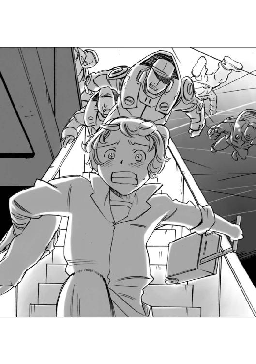
『第一小隊第二分隊、行動不能！』
『同じく第一分隊行動不能！』
エンデバーステーションの外に浮かんだ情報収集艦の中央部にある総合情報処理室で、シティの中に突入した部隊から、次々に入ってくる報告を聞いていた情報部の中佐が、イライラしたような口調で叫んだ。
「ええい！ 何をやっておる！ たかが猫一匹、どうして確保できんのだ！」
「それが......どうやら猫の逃亡を手助けしている少年がいるという情報が......」
「なんだと？」
中佐の目が光った。
「それを早く言え！ そいつはおそらく敵対する組織のエージェントだ！ この帝国内部の敵対組織......いや、宿敵ローデスのエージェントかもしれん！ 発砲許可を与える！ 敵の手にあの猫を渡すくらいならエージェントもろとも灰にしてくれるまでよ！」
副官は何も言わずに、中佐の横顔を見ていた。
......もはや止めても無駄だ。
こいつの「上役」が出てきて、こいつを止めない限り、俺には何もできん。
こいつは自分の頭で何かを考えたり律したりすることができないのだ。そういうことは上の人間がやってくれる。判断はすべて上の人任せで、上の人の言うことを聞いていればいい、という考えしかできない。
上の人間の言うことしか聞かないから、上の人がいないと、抑えが利かない。
間違っていても、自分で判断できない。
......エルキュール侯爵家の一族か何か知らないが、血縁だけでこういう人間を人の上に立たせるからこういうことになるのだな。
副官は視線を時計に投げた。
......そろそろフュージリアグループの上層部にこの事件の一報が入っている頃だ。
さっき俺が通信オペレーターに伝えた『関連する各局にも連絡を入れておいてくれ......』という言葉どおりに通信が送られていれば、の話だが......。
副官は視線を、モニターに映っているシティ内部に突入した特殊部隊員たちの映像に移した。
......軍人は命令に服さねばならん。それが義務であり、仕事だ。
とはいえ......猫を追いかけてエンデバーステーションの中を走り回らねばならんとはな......すべてが終わったら、隊員たちのメンタルケアをしっかりやって、襲い来る無力感から隊員たちを守るように指示をしておかねばなるまい。
副官が、この事件の後始末について思いをめぐらせていた頃。
サイラスは、集合住宅の一角にある植え込みの中で、五十メートルほど先にある業務用エレベーターに飛び込むタイミングをうかがっていた。
そのエレベーターは宇宙港に荷揚げされた荷物を各階に運ぶための大型のもので、それに乗り込めれば一気に最下層の宇宙港にたどり着けるだろう。
しかし、この階から出るルートはすべて特殊部隊の隊員たちに押さえられてしまっていた。
......エレベーターの前に一人。コントロールボックスの前に一人。いや、もっといるかもしれない。
下手に出て行ったら、あっというまに見つかっちゃうぞ......どうしよう？
サイラスが植え込みの陰に頭を引っ込めたとき、胸のポケットに入れてあった携帯端末が、植え込みの枝に当たってこつん、という小さな音を立てた。
サイラスはあわてて胸を押さえてあたりの様子をうかがったが、その音は聞こえなかったらしく、動きは無かった。
ほっとしたように小さなため息をついたあとで、ポケットから端末を取り出したサイラスは、目を輝かせた。
......そうだ！ こいつでハヤト船長に連絡を取って、迎えに来てもらえば......。
しかし、その名案はすぐにサイラスの脳内で消えた。
......あ、そうだ。そういえばフュージリアグループの嫌がらせで隔離埠頭に入れられて、そこから出られないって言っていたっけ。
連絡をつけたって、ここまで来てもらえないなら、どうしようもない......でも、どうしたらいいのか、相談することはできる。
話すと声を聞きつけられるかもしれないから......メールで相談してみよう。
サイラスが携帯端末のテンキーボードを引っ張り出したとき、サイラスが着ているジャンパーの胸元に入れて抱えていた黒猫が、もぞもぞと動いた。
「あ、目が覚めた？」
サイラスが小声で言うと、黒猫はびっくりしたように目を見開いてサイラスを見て鳴いた。
「みぎゃ！」
「あ、こら！ 声出しちゃダメだ！」
サイラスは、あわてて黒猫の口を押さえたが、遅かった。
特殊部隊員のセンサーがその声を聞きつけたのだろう、業務用エレベーターの前に立っていた隊員が、ふっとサイラスのいる方を向いて、センサーモニターをゆっくり左右に動かしながら近寄ってきた。
「やばい！ こっちに来る！」
サイラスが小声でささやくと、黒猫はあたりを素早く見回した。そして、おおよその状況がつかめたのだろう、ジャンパーの胸元から手を伸ばして、サイラスの持っていた端末のテンキーに爪を立てた。
「あ、おい！」
あわてて端末を動かそうとしたサイラスは、その画面を見て目を見開いた。
「うそ......」
そこには文字が浮かんでいた。
『わたしがひきつける』
「君......文字も打てるの？」
黒猫は、当然だ、という風にうなずき、爪を伸ばした前足を動かしてテンキーをカチャカチャと打った。
『えれべーたーでいけあとからゆく』
「え？ あとからって？」
『すきまあればとおれる』
そう打つと、黒猫はそのままサイラスのジャンパーの懐から飛び出して「みゃおおおうん！」と大きな声で一声鳴いて、そのまま特殊部隊の兵士の前に飛び出した。
特殊部隊の兵士は、目を見開くと、持っていたショックガンを撃った。
発射された衝撃波は、黒猫の後ろを掠め、その向こうにあった自動販売機に命中したのだろう、派手な音を立てて自動販売機の前面パネルが割れて、盗難防止のための派手な警報音が鳴り響き始めた。
その音を聞きつけたのだろう、エレベーターの制御室にいた兵士がドアを開けて飛び出してきた。
「例の猫か？」
「わからん！ でも黒猫だ！ 殺してもいいって指示が出ている！」
黒猫は、兵士をエレベーターから引き離すように目の前の道路をぴょんぴょんと飛び跳ねるようにして逃げ始めた。
「あ、くそ！ 追え！」
「応援を呼べ！ 俺たち二人だけじゃ無理だ！」
その会話を聞いていたサイラスは思わず胸の前でガッツポーズをした。
......やった！ ここにいたのは、あの二人だけなんだ！
二人の兵士が黒猫を追いかけていったのを見送り、サイラスは植え込みの中から立ち上がって、業務用エレベーターに向かって走った。
壁面に取り付けられていた。制御盤を見て、サイラスは小さくうなずいた。
......大丈夫！ このタイプは、家の工場にあるのと同じだ！
安全スイッチのレバーを解除して開閉ボタンを押すと、壁面にある黄色い警告灯が旋回し始め、ゆっくりと扉が左右に開いた。
すぐにも飛び込みたかったが、完全に開ききる前にエレベーターのリフト内に入り込むと安全センサーが作動して停止してしまうことをサイラスは知っていた。
ゆっくり開いていく扉をじりじりとしながら見ているその時間は、実際には三十秒ほどだったが、サイラスには十分以上かかったような気がした。
扉が完全に開ききり、内部で回っていた旋回灯が止まったのを見て、サイラスはエレベーターに飛び込んだ。
そして内側にあるリモコンを持ち上げると、扉を閉めるボタンを押して叫んだ。
「大丈夫だ！ 猫くん！ 来い！」
親指をリモコンスイッチの一時停止ボタンの上に置いたまま、サイラスは少しずつ閉まっていく扉に合わせて身体を動かしながら、黒猫が消えた方向を見ていた。
どたどたという重い足音と、外骨格デバイスの作動するぎゅんぎゅんという音が近づいてきた......と思った次の瞬間。
あと十センチほどで閉まるその扉の隙間から「にゃおおうん！」という声とともに、黒い小さな塊がエレベーターの中に飛び込んできた。
次の瞬間、エレベーターの外扉が閉まり、そこに、ガイン！ ゴイン！ という何か重たいものがぶつかる音がいくつも響いた。
「くそ！ こら！ 開けろ！」
「おい！ ちくしょう！」
エレベーターが四隅の黄色い旋回灯を回しながらゆっくりと降下を始めると、罵声と、ゴンゴンと扉を叩く音が頭の上に消えていく。
サイラスは、自分が持っているリモコンのサイドスイッチを素早く操作し、優先順位をそのリモコンに固定した。
......解除キーの暗証番号も変更したから、もし、制御盤に以前の番号がメモ書きされていても大丈夫だ！ これで他の制御盤や、あのコントロールルームのスイッチじゃこのエレベーターを止めることはできない！
サイラスは、ほっとため息をつくと、エンデバーステーションの外壁に沿ってゆっくりと降りてゆくエレベーターの一番下に視線を投げた。
十二層からなるエンデバーステーションの最下層に近づいたとき、足の下に広がる宇宙港の設備の中に停泊する、銀色の魚のようなシルエットを持った宇宙船がいくつも見えてきた。
サイラスは、黒猫を抱き上げると、その宇宙船の群れを見せて言った。
「あの中に、僕たちが乗る銀星号があるんだぜ、すごいだろう？」
黒猫は目を輝かせると、一声「みぎゃあ」と鳴いた。
サイラスたちが降りていくエレベーターの先。
エンデバー宇宙港の最下層部にある貨物用宇宙港のメインゲートの横に、一台の黒いミニバンが止まっていた。
そのミニバンの脇に立つ清掃作業員の制服姿のエキトが、脇に立っているギリアムにそっと耳打ちした。
「所長、あいつら、もう一匹猫を連れてますよ......」
ギリアムはうなずいた。
「ああ、素体七号とか呼んでいたな......逃げた六号の仲間だろう」
「なんで、別の猫を連れてきたんでしょうねえ？ 匂いとかを追わせるためでしょうか？」
ギリアムは笑った。
「警察犬じゃないんだ、追跡はできんだろう......きっと説得でもさせるんじゃないのか？ 猫のことは猫に任せたほうがいいってことだろう」
エキトは目を丸くした。
「猫が猫を説得......ですか？ どうやって？」
「そこはそれ、やっぱり、外は危険だぞ、とか研究所は待遇がいいぞ、とか、可愛い女の子を紹介してやるぞ、とか、いろんなことを言って、説得するんじゃないのか？」
エキトが今ひとつ納得いかない、という風に首をひねったとき、ミニバンのドアが開いて、ヒルダ博士が、銀毛の猫を抱いて現れた。
「うわさをすればなんとやら、ですよ」
エキトの声を聞いたギリアムがうなずいた。
「ああ、見るからに上品な猫だな......」
ヒルダ博士は、その猫を道路に下ろすと、ゆっくりと言った。
「六号が、もうすぐここに来るわ......来たら......説得をお願いね」
銀猫が、わかったわよ、という風にうなずいた......そのとき。宇宙港の正門ゲートの中にある業務用エレベーターの扉の脇にある警告用の黄色い旋回灯が回り始め、エレベーターが降りてくることを教えた。
その黄色い旋回灯を見てギリアムが眉をひそめてヒルダ博士に言った。
「この、減圧警報が出るという騒ぎの真っ最中に荷役作業をするはずがありません！ あのエレベーターはちょっと怪しいですね」
ヒルダ博士は、はっとしたようにそのエレベーターを見て、部下たちに言った。
「あのエレベーターを確認して！ 中に素体六号が乗っているかもしれないわ！」
「はい！ わかりました！」
黒服を着た男たちが、あわててエレベーターの方に走り出したのと、エレベーターが到着し、扉が開いたのは同時だった。
中から飛び出してきた黒猫と少年は、黒服とサングラスの男たちが目の前にいるのに驚いたように目を見開いて叫んだ。
「うわ！ 先回りしていやがった！」
黒服の男たちも、まさか本当にサイラスたちが乗っているとは思っていなかったのだろう。びっくりしたように立ちすくんだ。
「うわ！ 本当に乗ってた！」
次の瞬間、サイラスと黒猫は宇宙港の中にあるコンテナ置き場の方に向かって脱兎のように走り出した。
ヒルダ博士の足元に座っていた銀色の猫が、ひょいと起き上がって、二、三歩歩き出したところで立ち止まり、ヒルダ博士の方に振り向いた。
「みゃうみゃお」
鳴き声に合わせて、白い首輪の中に埋め込まれた発光クリスタルがチカチカと瞬いた。
ヒルダ博士は手に持っていた汎用端末のモニターに視線を落として、そこに浮かんだ文字を読んでからうなずいた。
「ええ、お願い！ 六号を連れ戻してきて！」
銀色の猫は、任せといて！ という風にうなずくと、サイラスたちの後を追ってコンテナ置き場の方に走って行った。
ギリアムが感心したように聞いた。
「あの首輪は......翻訳機か何かですか？」
「猫には明確な言語がありませんから、翻訳という言葉の意味とは少し概念が違うけど、まあ似たようなものかしら。あの首輪は試作品の感応端末で、彼女の思考を受け取って、その概念を人間の言語の中から一番近いものを選択して、私の端末に表示するようになっているの」
「へえ、便利なものですな......でも、それは、相手がこっちの言葉の意味を理解できるからであって、普通の猫に取り付けても無意味なんでしょうね」
「ええ、まあ、普通の猫は、思考より本能のほうが優先しますからね」
ギリアムはちらっと横にいるエキトを見て言った。
「いや、猫に限らんでしょう、そういう生き物は......」
エキトはむっとしたような顔で答えた。
「俺のことはどうでもいいでしょう！ 追いかけなくていいんですか？」
ギリアムとヒルダ博士は、あ、そうだ、という顔になって、あわてて走り出した。
宇宙港のコンテナ置き場には、一メートルほどの間隔をあけて汎用貨物コンテナがびっしりと積み上げられていた。
サイラスは、手に持った汎用端末の中に浮かび上がったナビゲーション画面を時折見ながら、その迷路のようなコンテナの間をすり抜けつつ目的地である第三埠頭に向かっていた。
やがて、床に黄色い帯に赤い文字で「未検疫隔離区画隣接」と書かれた警告表示が見え始めた。
「もうすぐだ！ あと少しで銀星号のところに行ける！」
サイラスがそう言ってコンテナの角を曲がったとき。
遠く、コンテナの隙間から、隔離区画と一般区画を隔てる気密フェンスが見えた。
「あそこだ！ あそこに沿って走ればゲートに行ける！」
気密フェンスの前に出たサイラスと黒猫はそのフェンスに沿って、ゲートの方に向かって走りはじめた。
それを知った、ヒルダ博士の部下たちの間に余裕のような空気が流れた。
隔離区画を隔てている気密フェンスは、そのままどん詰まりになっており、そこに出入りゲートがある。そしてそのゲートは特別の認証がなければ通ることはできない。
無理やり通れば、警備システムによって阻止される。もし内部から外に出ようとすれば、感染を防止するために高温の陽子ビームで灰も残らぬほどに焼き尽くされるのである。
......素体と少年は、袋のネズミだ。
部下たちがそう思ったのも無理はない。サイラスと黒猫がそのゲートを通過できる認証を受けているということは、彼らの予想を超えていた。
だから、目の前でサイラスが、完全自動の隔離ゲートに近づいたときに、隔離ゲートの正面にあるインフォメーションスクリーンに『ここを通過し内部に入った者は検疫を受けねば出ることはできない』というメッセージが表示されたのを見て愕然とした。
「おい！ 見ろ！ あれを！」
「あのガキ、通過認証を受けているのかよ！ ヤバイぞ！ あそこを通過されたら、俺たちは入っていけない！」
あわてた部下たちが走る速度を上げたそのとき、部下たちの足元をすり抜けるように銀色の小さな塊が通り抜けた。
それは、一匹の銀毛の猫だった。
銀毛の猫は、今、まさに隔離ゲートを通り抜けようとしていた黒猫に向かって呼びかけた。
『待って！ あなたはどこに行くつもり？ そこを通り抜けたら、もう二度とこっちに戻って来られないのよ！ 今なら故郷に戻れるわ！ お願い！ 私と帰りましょう！』
黒猫は、立ち止まって振り向くと、銀毛のほっそりとした猫に向かってゆっくりと言った。
『その、首輪を付けられた、哀れな姿でかい？』
『これは首輪じゃないわ！ 選ばれた者である証よ！』
黒猫は鼻で笑った。
『ふん......それは......首輪さ』
そして、銀猫が、何かを言い返そうとするより早く黒猫は続けた。
『その首輪の正体を知っているか？ それは心を覗き込む機械だ。その機械を付けている限り俺たちは自由にはなれない！』
『でも......これがあるから私たちは人と話すことができる、人の持つ無限の知識を使うことができるのよ！ これは私たちの可能性を開く鍵よ！』
黒猫は首を振った。
『可能性？ そんなものはないさ......』
銀猫は叫んだ。
『そんなことはないわ！ 私と一緒に故郷に帰れば、そこに可能性だって未来だって残っているじゃない！......』
銀猫はそこで言葉を切ると、すこしためらうような表情をしてから、思い切ったように顔を上げて言葉を続けた。
『......私、あなたの子供なら産んでもいいと思ってるわ......あなたとなら一緒に次の世代を育てていけると思うの......だから、お願い！ 私のところに戻ってきて！』
黒猫は悲しそうに答えた。
『悪いが......俺は戻らない。子供も欲しくない。俺たちに施された知性化は遺伝子レベルのものじゃない......生まれてくる猫は、普通の猫でしかない......俺たちは一世代限りのあだ花なんだ！』
『じゃあ......子供たちも知性化してもらえばいいじゃない！ そうすれば、きっと楽しい生活ができるわ！ あなたと私と、子供たちとで、明るく楽しく生きていけるのよ！』
『......人の手に頼ってか？』
銀猫は一瞬言葉に詰まったあとで、大きく首を振って叫んだ。
『そうよ！ それの何がいけないの？ 私たちは人の力で知性化され、世界を知った。知性化されなければ私もあなたもただの猫でしかなかったはずよ！ でも、私たちは知性化されてしまった！ もう普通の猫には戻れない！ 確かに今の私たちは、自分が何のために生まれ、何のために生きるのか、そんなことを考えることができる......でも、それが何になるの？ 結局は生まれて生きて死んでいくことしかできないのよ！ だとしたらその生き方が人の手に頼ろうと自分の力で生きようと、そこに何の違いがあるの？ 結局は満足できるかどうかじゃないの！』
黒猫はうなずいた。
『そうさ......そのとおりだ。そして、俺はあそこにいたんじゃ絶対に満足できないということがわかったんだ......俺は、俺が存在した証を残したい。何かを創り出しそしてそれをこの世に残して死んでいきたい......でも、俺たちは極秘の存在だ。俺たちの記録はすべて闇に葬られるだろう......俺がこの世にいたという記録も記憶もすべて闇に消えるだろう......俺は......そんなのはいやだ！ 俺という存在を消されてたまるか！ 俺は宇宙に行きたいんだ！ 広い世界をこの目で見て知って、そして......本を書くんだ！ 俺が生きてきた証になる本を！』
銀猫の声は悲鳴に似ていた。
『私がいるわ！ 私が証になる！ 私が覚えている！ 私が死んでも......猫に魂があるのなら、その魂が覚えているわ！ あなたがこの世にいたことを！ それじゃあダメなの？ 私ではあなたの支えにならないというの？』
黒猫はゆっくりと首を振って、背を向けた。
銀猫の目が憎しみの色を帯びた。
『わかったわ......あなたの本音が......今までの理由は全部噓だわ！ こじつけよ！ あなたは遊びたいだけだわ！ 他のメス猫と......知性のカケラもない本能だけの連中と快楽を味わいたいだけなのよ！ この私に縛られたくない！ そういうことなんでしょう！』
ヒステリックにわめき始めた銀猫を見た黒猫は、ひょいと肩をすくめると、そのまま隔離ゲートを越えた。
「ああ！ やばい！ 行っちまうぞ！」
銀猫の説得を固唾を吞んで見守っていたヒルダ博士の部下たちが、狼狽したような声を上げてゲートに近づいた。
次の瞬間、ゲートの上に設置されたスポットライトが部下たちを照らし出し、警報音が鳴り響いた。
そして、自動化されたメッセージがスピーカーから流れ始めた。
『このゲートは検疫当局の認証が無い者は通過できません！ 繰り返します......このゲートは......』
「こんなゲート突破できないのかよ！」
「無理だ！ 検疫阻止用のゲートの警備システムは、どんな病原菌もウィルスも死滅させるために、超高温の陽子ビームが装備されているんだ！ 下手に立ち入ったら灰も残らんぞ」
「くそ！ ここまでか！」
部下たちはゲートの手前で立ち止まり、宇宙船連絡通路の中に消えていくサイラスと黒猫を恨めしげに見送った。
ヒルダ博士は大きくため息をつくと、ゲートの先を見つめて言った。
「今日のところは失敗ですね......でも、考えようによっては、これは成功です。素体六号がどこにいるのか、少なくともそれだけは突き止めることができます。居場所さえわかれば、あとはどうにでもなります......大至急引き揚げて、あの少年の正体と、素体六号がどの船に乗り込んだのかそれを調べましょう......戻ります！」
ヒルダ博士はくるりと向きを変えると、早足で歩き始めた。そして、ギリアムの前にやってきた。ギリアムは作業服のポケットに手を突っ込んで、肩をすくめた。
「仕事は失敗ってことですね......契約エージェントは成功報酬だから、俺たちは無駄骨だったってことですか......まあ、仕方ありません。また、何か仕事で会う機会があったらよろしくお願いしますよ......ヒルデガルド博士」
ヒルダ博士は、ちょっと怒ったような顔でギリアムを見て言った。
「私のことはヒルダと呼んでくださいと言ったはずです......それと......契約は継続します。問題が何一つ解決していないのに有能なエージェントとの契約を切るような馬鹿なことはしません！ さあ、戻りますよ！」
ギリアムは、唇の隅に微笑を浮かべ、黙って頭を下げた。
ヒルダ博士の一行が戻っていくのを、宇宙船連絡通路の陰に隠れて見ていたサイラスが、ほっとしたように言った。
「行っちゃったみたいだね......」
黒猫が、汎用端末のテンキーを爪でカチャカチャと打った。
『またくるやつらしつこい』
「そうか......でも安心だよ、銀星号に乗って宇宙に出てしまえば、追いかけて来られないさ......そういえばさっき、銀色のきれいな猫が何かにゃあにゃあ鳴いていたけど......友達？」
黒猫はちょっと考えたあとでテンキーを打った。
『ともだちだったまあいろいろある』
その文字を見たサイラスは笑った。
「わかったよ、詮索はしないでおくよ。じゃあ行くよ！ 銀星号はすぐそこだ！」
汎用端末を胸のポケットに入れて、サイラスは立ち上がり、黒猫に両手を差し伸べた。
黒猫がその腕にぴょんと乗った。
サイラスは銀星号に向けて連絡通路を走り出した。
黒猫と少年の航海が始まろうとしていた。
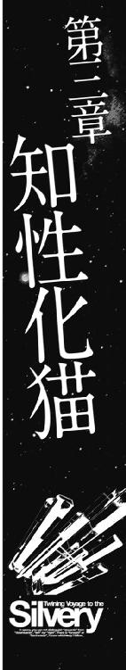
宇宙に浮かぶすべての物体は、いわば小さな天体である。
「デブリ」と呼ばれるゴミも、全長十数キロという巨大なスペースコロニーも、太陽や惑星と同じ一つの天体であり、常に他の天体の重力の影響を受けている。
だが、惑星軌道上には太陽や惑星という大きな質量を持つ天体の重力の影響を受けずに、位置を変えぬまま太陽の周りを回り続けることのできる点がいくつか存在する。
発見した人物の名を取って「ラグランジュポイント」と呼ばれているこの点は、スペースコロニーなどの施設を建設するのに適しており、惑星エンデバーの惑星軌道上にあるラグランジュポイントには、宇宙船を修理するためのドックや、小惑星から採掘された金属を精錬するプラントなどがいくつも浮かんでいる。
しかし、それよりも目に付くのが、スペースコロニーなどで使われる鉱物資源を確保するために運ばれてきた小惑星の群れだった。
大きなものは全長数百キロに及ぶものから、小さなものは雑居ビルほどの大きさのものまで、大小様々な小惑星が、このラグランジュポイントに浮かんでいる。
その小惑星の中には人が居住するものもいくつかあった。
とはいっても、小惑星に大気があるわけではない。鉱物資源を採掘したあとの空洞を居住スペースとして利用し、小型のスペースコロニーとして使用しているのである。
連絡用の宇宙船が無ければ、どこにも行くことができない宇宙空間に浮かぶこのような小さなコロニーは、いわば離島のようなものであり、実に不便である。
しかし、世の中には、その世間と隔離された宇宙の離島だからこそ使うのだ、という人間もいる。
惑星エンデバーのラグランジュポイントに浮かぶラグビーボールのような形をしている小惑星「スローターハウス・ファイブ」は、表向きはフュージリアグループの管理する鉱物採掘コロニーということになっていたが、その実態は、軍の機関が運営する極秘の研究所だった。
他から完全に隔離されたこの小惑星は、秘密保持に最適であり、表に出すことのない様々な研究を行うには申し分のない環境だったのだ。
百人を超える研究員や係員が暮らしているこの小惑星の内部は、研究用や、居住用という目的別に細かい区画に分けられており、その構造は、コロニーというより宇宙船の内部に似ていた。
この「スローターハウス・ファイブ」の最深部には、この研究所を統括する管理区画が設けられており、そこにある幹部用の会議室の中では、研究所の責任者であるヒルデガルド博士と、この研究所のスポンサーであるフュージリアグループの幹部など数人が、眉間に縦皺を寄せ、黙りこくったまま目の前にあるパーソナルモニターに映っている報告映像に視線を落としていた。
ヒルデガルド博士以外の参加者はすべてホログラムで投影されているバーチャル会議であったが、投影されている映像の解像度が高いため、そうと知らねば、まったく生身の人間がその場に座っているのと見分けはつかない。
報告映像が終わり、参加者の前に表示されていたパーソナルモニターが消えると、会議室の中に、ため息とも、うなり声ともつかない「むぅ......」というつぶやきが満ちた。
最初に口を開いたのは、白髪の長髪をオールバックにした、目つきの鋭い初老の男だった。
彼の名前は、ルマンド・エルキュール。
エルキュール侯爵家の当主にして、エンデバー星系を始めとする数十の恒星系を経済的に支配しているフュージリアグループの総帥。そしてこの会議における決定権の持ち主である。
ルマンドは、会議室にいる面々を見回して、ゆっくりと言った。
『諸君らに見てもらったのは、今回のエンデバーステーションにおける馬鹿騒ぎの一部始終だ。この馬鹿騒ぎの責任は、功名をあせって勝手に行動を命じた情報部にあるということはわかった。しかし、この会議は責任の所在を追及するためのものではない。起きてしまったことについて処分を下すのは、前例踏襲しかできぬ無能な者でもできる。我々が為すべきことは、では、どうすればいいのか、考えることだ......』
ルマンドはそこで言葉を切ると、向かいに座っていた、ヒルデガルド博士に聞いた。
『博士、例の知性化猫だが、完成度はどれくらいなのかね？ あ、いや、レポートは見ているが、実際のところ、どの程度使えるものか、本当のところを聞きたいのだ』
「素体六号は、ほぼ実用の域に達していると思われます......」
ヒルデガルド博士は、自信に満ちた表情で答え始めた。
「単純に猫の知能を上げても、それは単に賢い猫を作り出すだけのことです。猫の価値観と猫の論理でしか動けないのでは、人間と意思の疎通を図ることはできません。人間のために働くには、人間の価値観と論理を理解しなくてはなりません。つまり知性化猫とは、人格を有する猫のことなのです」
『猫に人格かね』
博士の言葉を聞いて、がっちりとした体形の中年男が失笑を漏らした。
彼は、エンデバー星系軍参謀本部から参加しているリヒト准将だった。
リヒト准将の笑いを聞いたヒルデガルド博士は、むっとしたような顔で、准将を見返した。
「ええ、人格です。たとえ猫の身体を持っていても、彼の精神は、まさしく人格と呼ぶにふさわしいものです。書物を読み蓄えた豊富な知識と、それから生まれる機転を兼ね備えた高潔な、そして理想を追い求める真摯な姿勢を持った一人の少年なのです......」
そして、ヒルデガルド博士は眉をひそめ、困ったような表情を浮かべて言葉を続けた。
「......実を申しますと、その、理想を追い求める彼の人格と真摯な姿勢が、すべての原因だったのですが......」
ルマンドは、興味深そうに聞いた。
『ほう......どういう意味かね？』
ヒルデガルド博士は、ルマンドの方を向いて話し始めた。
「我々は、今までに何百という数の猫を知性化してきました。しかし、ほとんどの猫は、自分の知性を応用しようとはしませんでした。自分の欲求を満足させることだけを考える、自己完結した本能のみに忠実に従う動物という存在から踏み出そうとはしなかったのです。しかし、彼......素体六号は違いました。
彼は、自分が得た知性を好奇心と探究心に発展させたのです。幼児が『なぜ？』と聞くように、彼はすべてのものを知ろうとしたのです。自分を取り巻くものを知ることによって自己を確立し、自分の知識が増えること、そしてそれによって、社会を知ることに喜びを見出したのです。それは、彼が動物ではないことの証明でした......」
博士の言葉を聞いていたリヒト准将が、怪訝な顔で聞いた。
『それは......つまり、どういうことかね？ 普通の猫も、経験と知識を蓄積するはずだ。たとえば、ネズミを捕まえる、という行動も、本能だけではなく経験や学習が行われなければ、上達しないと言われているではないか。知性化猫と普通の猫が、どう違うのか、よくわからんが......』
博士は、小さくうなずいてから、ゆっくりと答えた。
「街を歩く普通の猫は、自分が他人にどう見られているのか、そんなことに関心はありません。関心を向ける相手は、危害を加えられるおそれのある敵か、食欲を満たすための餌か、もしくは繁殖の相手だけです。その価値観は自己保存の本能から一歩も出ていません。しかし、彼は、他者の価値観や感情、そして思考を推察して、行動することができます。彼は社会を理解し、自己と社会を相対的に見ることができるのです」
そのとき、今まで黙ってやり取りを見ていた、太った陽気な雰囲気を持った中年男が、笑いながら言った。
『知識欲と探究心に満ち溢れ、社会的に自己を認識できる猫というものを、今ひとつ想像できませんが......なんですな、その辺の街角でたむろしている若者とか、うちの大学の学生のほうが、よっぽど本能で動いていますな。あいつらの頭の中にあるのはケンカ相手と女の子のことだけですから』
会議室の中の空気が、低い笑いと共に少し和らいだ。
ヒルデガルド博士は、会議室の雰囲気を変えてくれた太った男に、ちらりと感謝の眼差しを投げてから、言葉を続けた。
「エンデバー大学のエノキ教授のお言葉のとおり、彼......素体六号の精神年齢は人間で言えば十五歳から十六歳。ちょうど思春期にあたりますが、知識と洞察力については、この世代の平均的な人間の少年よりも優れています......」
そしてヒルデガルド博士は、ルマンドを正面から見て言葉を続けた。
「自分は他の同族とは違う。自分は他の仲間よりも明らかに優れている。自分は特別の存在だ......十五、六歳の少年とは、何の根拠が無くても自分をそう思い込むことができる生き物です。では、もし、その根拠が存在したら、その少年は何を思うでしょう？
......エルキュール侯爵家の跡継ぎとしてお生まれになった、ルマンド閣下なら、彼の気持ちがおわかりになるのではないかと思いますが？」
ルマンドは、唇の端に微笑みを浮かべてゆっくりと答えた。
『選ばれし者の恍惚と不安、共にあり......というわけだな？』
「はい、そのとおりです。彼は確かに選ばれた存在であり、他の猫を超越した存在でした。彼の自意識が増大し続けるのは当然のことだったのかもしれません。
我々は彼の知識欲と探究心を好ましいものと捉えておりましたので、彼に専用の端末を与え、帝国図書館の青少年向けデータベースに限り自由にアクセスできるようにしておりました......今になって思えば、これが今回の事件の根源だったのかもしれません。
彼はこの研究所の外に、自分の知らない世界があることを知ったのです......我々は、思春期の少年の行動特性を知っておりました。しかし、それが彼にも当てはまるものだということを失念していたのです。その意味で言えば我々もまた彼をただの猫と思い込むという過ちを犯していたのだと思います」
ルマンドは、小さくうなずいた。
『......今のヒルデガルド博士の言葉で、例の知性化猫の能力は、よくわかった。精神的にあと少し成長し、社会の力関係を理解することができたなら、我がフュージリアグループに対する忠誠心を持たせることができたかもしれんな......惜しいことをしたものだ』
ルマンドの言葉を聞いた博士は、はっとしたように顔を上げた。
「では......素体六号の回収は？」
そのとき、今まで面白くない、という顔でルマンドの脇に座って会議のやり取りを聞いていた、三十代前半の、理知的というより、一種の冷酷さを身にまとった一見エリート官僚風の男が答えた。
『......もはや回収という段階ではない。外部の人間と接触した以上、その存在はすでに明るみに出たも同然だ。確かに世の人々は、会話ができる猫がいる、などという情報を簡単に信じたりはせんだろう。しかし、それが実在し、自分の目で確認できるとなれば話は別だ。
マスコミ......いや、たとえネット上の個人の情報発信であっても公開されれば、その情報は真偽とは別に興味を持たれることになるのは間違いない。我々が取るべき措置は、あの猫が世間の興味を引くより先に、この世から隔離し消去することだ......』
「隔離、消去というのは、要するに殺せということですか？」
ルマンドは、青ざめた博士をちらりと見ると、自分の脇に座っている三十代の男に向かって言った。
『シザムよ、お前のやり方は合理的で的確だ。だがそれだけでは人はついて来んぞ。報告では例の猫は、運送業者の宇宙船に乗り込んだそうではないか......我がエルキュール家の力をもってすれば運送業者の宇宙船などどうにでもなる。猫と接触した者に口止めをすればよいのではないか。何も殺すことも無かろう』
シザムと呼ばれた三十代の男は、不機嫌そうに首を振った。
『それが......そうもいかんのです。例の猫が逃げ込んだ宇宙船は、よりによって、あの......銀星号なのです』
『銀星号だと？』
ルマンドは目を見開いた。
『爆薬と化した薬品を運んで、惑星バレリアのバーレナン小麦を救い、シリリウム鉱山を手に入れるためにマルス家が仕掛けた惑星ホルストの封鎖を破った、あの連中か！』
『ええ、そのとおりです。あの件を見てもわかるように、あいつらは、売名と金のためならどんな危険な仕事も請け負う無法者です。このエンデバー星系の秩序を定めた我々フュージリアグループの取り決めに逆らい、企業間の調和を乱すモラルのカケラもない連中なのです！ 交渉し、口止めをするなど、とんでもありません！ それは我々の弱みをやつらに教え、付け入る隙を与えるようなものです！ 我々が関わっているということが表に出ぬように、すべてをこの世から消し去るべきです......』
そしてシザムは、酷薄な微笑みを唇の端に浮かべて付け足した。
『......一番良いのは、あの銀星号もろとも、この世から消し去ってしまうことだと思われます』
シザムの言葉を聞いたルマンドは、無言のまま考え込んだ。
そして、二呼吸ほどの時間のあとでゆっくりと口を開いた。
『あの知性化猫は、このエルキュール侯爵家が、帝国内で確固たる地位を占めるために、多額の予算と労力を注ぎ込んで創り出したものだ。完成の暁には、帝国皇帝に献上し、帝国中枢部の情報を探らせる予定だった......その目的が表に出れば、我々エルキュール侯爵家の立場は最悪のものとなるだろう......この件は、以後シザムに任せることとする』
『......かしこまりました。お任せください』
シザムは、そう言ってルマンドに頭を下げると、勝ち誇ったような目で会議室の面々を見回した。
その態度が、気に障ったのだろう、ルマンドは小さく咳払いをしてから、博士に向かって、静かに語りかけた。
『ヒルデガルド博士。こういうことになって残念だ。もし、彼が逃げ出さずにこの研究所に留まってくれていたならば、選ばれた存在となった者同士、わしと共に悩みを語ることができたかもしれん......だが、今の彼は、我がエルキュール家とフュージリアグループにとって危険な存在だ。わしは、エルキュール家の当主として、そしてフュージリアグループの総帥として責任を果たさねばならん......悪く思わんでくれ』
ヒルデガルド博士は、少し驚いたように目を見開くと、あわてて頭を下げた。
「あ、いえ......お心遣い......ありがとうございます」
ルマンドは、鷹揚にうなずくと、脇にいたシザムを見て言った。
『では、次の会議に行くとしよう』
『かしこまりました、閣下......』
そう言ってシザムがうなずくのと同時に、ルマンドの姿が会議室から消えた。
手元にあるモニターでルマンドのホログラムが完全に転送されたのを確認したシザムは、ヒルデガルド博士を見据えて言った。
『たかが野良猫一匹にこの私が動かねばならんということで内心うんざりしていたが......これであの銀星号も一緒に片付けることができる。本来ならばこの責任を厳しく問うところだが、まあいい、あの馬鹿な猫に感謝することだな』
シザムはヒルデガルド博士の目に浮かぶ憎しみと怒りの色を見て、満足したような微笑みを浮かべると会議室から消えた。
会議室の中にいたエノキ教授が、肩をすくめた。
『ふむ......見るからに嫌なヤツだが、わしが専門にしている行動心理学の立場から見ると、あの男は実に面白い......あの男は、自分の権力と、能力に疑問を持ったことが無いのだろうな。ああやって、自分が優位な立場にいることを確認することが快感なのだ......精神年齢は、例の知性化された猫とあまり変わらんようだ』
ヒルデガルド博士は、怒ったような口調でつぶやいた。
「素体六号のほうが、まだ大人ですわ......少なくとも彼は他人を不快にさせることに快感を得るような下衆な精神を持っていません」
そのとき、そのやり取りを聞いていたリヒト准将が、怪訝な顔で聞いた。
『ちょっと疑問があるのだが......あ、いや、シザムが下衆な男であることについてではない。ルマンド閣下が博士に、例の知性化猫が、どの程度実用化されているのかを聞いたとき、博士は具体的なことを何一つ答えてはいないのに、ルマンド閣下は笑って納得された......あれはどうしてなのかね？』
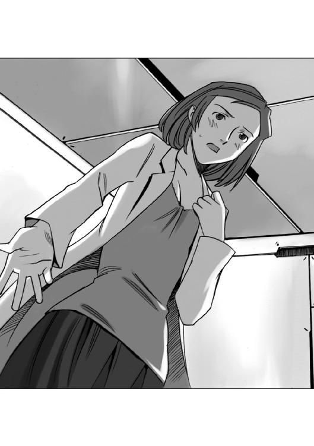
博士が答えようとしたとき、それを抑えて、エノキ教授がリヒト准将に向き直った。
『ああ、私からお答えしましょう。説明するのは商売ですからな......ただ、講義口調になってしまうかもしれませんが、その点はお許しを......。
あの会話の意味を理解するには、まずルマンド閣下の立場を理解することです。ルマンド閣下はエルキュール侯爵家という特別の家柄に生まれたことにより、好むと好まざるとにかかわらず、たった一人で多くの責任と権限を背負わされました。いわば閣下は選ばれし者の孤独を御存じだということですよ』
『人の上に立つ者が背負う責任と権限、決断における孤独については、私も理解しているつもりだが......それが、例の猫とどういう繫がりになるのかね？』
エノキ教授はうなずいた。
『リヒト准将閣下は、一士官から叩き上げでその階級になった方ですから、人の上に立つ、ということがどんなことか御存じでしょう。しかし、ルマンド閣下は、叩き上げでもなんでもないのですよ。生まれついたらそうなっていた、というわけです。これは、例の猫が置かれていた立場と同じです。そしてルマンド閣下は、猫の立場に自分の経験を重ねたのですよ。特別な存在である自分の若い頃をね。
我々平民上がりの人間から見れば、ルマンド閣下はエルキュール家の跡取りとして、ぬくぬくと何不自由なく育ったように見えます。しかし、考えてみれば、それはエルキュール家全体と、そしてこのフュージリアグループに関するすべてを背負わされている、ということです。
自分は他の仲間とは違う。自分は他の仲間よりも明らかに優れている。自分は特別の存在だ......それを知るということは、つまり、自分は永遠に孤独であるという事実を知ることでもあるのですよ』
リヒト准将は、小さくうなずいて顔を上げた。
『......つまり、あの猫は、自分の孤独さが理解できるほど優秀で、精神的に成熟しているということなのかね？』
ヒルデガルド博士は小さく微笑んでうなずいた。
「ええ、そういうことです。彼......素体六号がシザムのような幼児的な精神の持ち主なら、自分の優秀さに気がついた時点で、自分をスーパーマンか何かのように思い込み、傍若無人な行動に出たでしょう。特別扱いを要求し、他者を蔑むことに快感を得ようとしたかもしれません。しかし、彼は研究所の中の小さな世界の王になるつもりは無かったのです。彼が選択したのは自分の能力を試すことができる、外の世界でした......ルマンド閣下が納得したのはそういう理由ですわ」
リヒト准将は、納得がいった、という風にうなずき、ぼやくようにつぶやいた。
『いやはや、偉い人や、頭のよい人の会話は、含むところが多すぎて、私のような一介の軍人にはついていけないな......』
『軍隊の命令は、簡潔明瞭をもって良しとするのが基本ですからな、まあ無理もありませんな......』
エノキ教授は、そう言って笑うと、ヒルデガルド博士に向かって真面目な顔で頭を下げた。
『結局こういうことになってしまったな......力になれず申し訳ない......もし、何か相談があればいつでも連絡をくれたまえ』
「あ、いえ、こちらこそ、わざわざオブザーバーとして参加していただいてありがとうございます......ルマンド閣下は、ああおっしゃいましたが、シザムが何か行動を起こす前に、私は私なりになんとかできないものか、精一杯努力してみるつもりですわ」
リヒト准将がうなずいた。
『軍人として、おおっぴらに動くわけにはいかんが......あのシザムに好き放題やらせるのも、今ひとつ気に食わん......裏で情報を提供するくらいのことはやれるだろう。あとでこちらから連絡方法についてメッセージを送る』
「ありがとうございます！」
目を輝かせるヒルデガルド博士を見て、リヒト准将は面映ゆそうな微笑みを浮かべると、会議室から消えた。
エノキ教授と二人だけになったヒルデガルド博士は、大きくため息をついた。
「......結局、私は彼のことを何一つ理解していなかったのですね。私は彼の立場になって考えたことは無かった......知性化され、自我が目覚めた彼にとって、世界がどんな風に見えていたのか。自分は何のために生まれ、何のために生きるのか......本能を捨て、理性と知性がそれに取って代わったとき、彼の自我の中に目覚めたその疑問に、私は答えを与えることができなかった......」
エノキ教授は肩をすくめて見せた。
『その答えは、いかに君が優秀でも、彼の生みの親であろうとも教えることはできまい。その答えは彼が自分で見つけるしかないのだ......』
ヒルデガルド博士は、会議室のドアを見てつぶやくように言った。
「彼は......今、何を考え、何をしているのでしょうね......」
エノキ教授は、悪戯っぽい目で笑って首を振った。
『彼のことを心配するのも無理はないが......もはや、彼は君の手から離れたのだよ。彼にとって大事なのは、もはや家でも母親でもない......仲間だ』
「仲間......ですか？」
怪訝な顔をするヒルデガルド博士を見て、エノキ教授はうなずいた。
『ああ、そうだ。君にできることは、彼がよき仲間とめぐり合うことを願うことだけだな。
無責任な言葉に聞こえるかもしれんが......その、なんだな、彼の家出について自分を責めることはない。思春期に、母親の言うことに逆らったことが無いような男の子は、将来ロクなものにならんよ......その意味で、彼はきわめて健全な成長をしたということだ』
小惑星「スローターハウス・ファイブ」の会議室で、逃げ出した知性化猫と銀星号の運命を左右する重大な会議が開かれていたその頃。
自分たちが大騒ぎの渦の中心にいることなど露知らぬハヤトたちを乗せた銀星号は、エンデバー宇宙港の未検疫船隔離停泊地の中に、一隻だけぽつんと浮かんでいた。
「あー......ヒマだ」
銀星号のパイロット席に座ったハヤトは、そう言って大きくあくびをし、後ろにいるハインツに振り向いて聞いた。
「なあ、いつになったら、ここから動けるんだ？ エンデバー宇宙港に入港したのは、サイラスを拾うためで、荷物の積み下ろしはやってないんだから特別検疫を受ける理由は無いんだろう？」
「ああ、でも、この銀星号は高度感染区域からの入港船に指定されちまったからな。運航管理局から出港許可が出るか、もしくは最低二十四時間経過するまでは勝手に動けない......連絡が来ないなら、二十四時間はじっとしてなきゃならないってわけさ」
なだめるように答えたハインツの顔を見て、ハヤトは不満そうに口をへの字に曲げてぼやいた。
「エンデバー星系じゃあ仕事なんかあるわけないし、ここにいる理由は無いんだから、さっさと推進剤の補給を済ませて他の星系に行きたいぜ......まったくもう、小麦の病気が人間に感染するわけねえのに、なんで高度感染症検疫に該当するなんてことを言いやがるんだ？ あの運航管理局の連中の脳味噌のほうが何かの病気に感染してるんじゃないのか？」
「きっと感染しているんだろうな......権限を振り回して威張ることだけが楽しみの小役人根性の持ち主がかかる、イヤガラセ熱とかいう病気に」
ハインツが肩をすくめてそう答えたとき、入り口のドアが開いて、黒猫を抱いた十四、五歳の茶髪のくせ毛の少年がブリッジの中に入ってきた。
「ハヤト船長！ ハインツ航海士！ おはようございます！」
その元気な声を聞いたハヤトは、にっこり微笑んで答えた。
「よう、おはよう、サイラス。昨夜はばたばたしていて、詳しく話ができなかったけど、その黒猫が君の友人だな？」
「にゃ～」
黒猫が、挨拶するように鳴いたのを見て、ハインツは目を丸くした。
「なんか......返事したみたいだな。名前はなんていうんだ？ その猫」
サイラスは、答えようとして気がついた。
「あ......そういえば、名前を聞いていませんでした......」
「名前を聞く？」
怪訝な顔をするハインツをよそに、サイラスは考え込むような表情でつぶやいた。
「えーと......確か、追いかけて来た連中は、素体六号とか呼んでいたけど......」
そのつぶやきを聞いた黒猫が、突然暴れ出した。
「ふにゃにゃにゃにゃー！」
「何か抗議しているみたいだな......なんというか、こう......俺の名前はそんなんじゃないぞ！って感じだ」
「ええ、何か言いたいことがあるみたいですね......聞いてみましょう」
サイラスは、そう言ってポケットから汎用端末を取り出すと、ハインツに聞いた。
「この端末に入力したメッセージを、メインモニターに表示できますか？」
「え？ あ、ああ、お安い御用だ」
ハインツは、そう言うとメインコンソールに向き直って、サイラスの汎用端末のパーソナルコードを打ち込んで、メインコンピューターとリンクした。
「よし、これでその汎用端末で打った文章が、こっちのメインモニターに表示される......でも、何をするつもりなんだ？」
「猫くんに、名前を聞くんです」
「へ？」
ハインツとハヤトが、怪訝な顔を見合わせる前で、サイラスの腕に抱かれた黒猫が右前足を汎用端末に向けて伸ばし、そのテンキーに爪を当ててカチャカチャと音を立ててキーを打った。
サイラスは、にっこり笑って、メインモニターを指差した。
「ほら、この猫くんからのメッセージが表示されましたよ」
ハヤトとハインツが、あわててメインモニターを見上げると、そこには一行ほどの文字が浮かんでいた。
『私は自由な猫だ、番号なんかで呼ぶな』
「え？」
ハヤトは信じられないものを見たように一瞬ぽかんと口を開けてメインモニターを見たあとでハインツをにらんだ。
「おい......ハインツ、妙な細工はやめろよな」
ハインツは、サイラスの腕に抱かれた黒猫とメインモニターに浮かんだ文字を交互に見てから首を振った。
「細工なんかするもんか！」
「じゃあ......この文字は......本当にその猫が打ったのか？」
「わからん......ただ、これに関しては、俺は一切関与していない」
サイラスは、勝ち誇ったように微笑むと、抱いていた黒猫に話しかけた。
「トリックじゃないことを教えてあげたらどう？」
「みにゃぁ！」
猫は、一声鳴いてうなずくと、再び前足の爪で、サイラスの持っている汎用端末のテンキーを爪でカチャカチャと叩いた。
『これは、トリックではない、私は自分の意思であなた方に話しかけている』
メインモニターに映し出されたその文字を凝視していたハヤトは、乾いた笑い声を上げた。
「は、ははは......いや、すごいなあ」
ハインツも同じような乾いた笑いを浮かべながらうなずいた。
「あ、ああ......すごい芸だ。こんな芸は、なかなか見られないぞ。はっはっは」
「ふにゃにゃにゃー！」
黒猫は抗議するように叫ぶと、サイラスの差し出した汎用端末のテンキーを、前足の爪でカチャカチャカチャカチャと叩き続けた。
その乾いた音が続くのに従って、メインモニターに長文が流れ始めた。
『これは、芸ではない。普通、動物が行う芸と呼ばれる一連の動作は、給餌時にその種の動作を反復して行わせることにより、餌と動作を関連して覚えこませる、といういわゆる条件反射行為であり、動物自身が、それらの動作の意味を理解しているわけではない。
もしかすると、君たちは、こうやって文章を打っても、この文章自体が、その条件反射によって私に順番に文字を打つように教え込まれたものに過ぎないと判断するかもしれない。
だが、それはすべて常識という名前の価値観を守ろうとする本能的な防衛行動であることを認識してほしい。
人間は誰でも自分の価値観を否定されることを嫌う。自分は常に正しいと言い聞かせることによって自我を保持し続ける生き物なのだ。だから、それに反するものを認識すると、たとえ目の前にある事実であろうとも、否定のための合理化を行おうとする。
たとえば、目の前で火災報知器が警報音を立て、警告灯が点滅しても、多くの人々が最初に心の中に思い浮かべる考えは、訓練に違いない、とか機械の故障に違いない、という考えだろう。たとえ事実でも、それを事実とは受け取らないで、様々な理由付けをして否定しようとする。
今、私が打っているこの文章を、単なる仕込まれた芸であると思い込みたがるのは、そういう理由なのだ。だが、これはまぎれもない事実である。私は意思を持ってこの文を考え、そして打っているのである。これは、条件反射ではない』
メインモニターに浮かんだ、その長文を目で追って読んでいたハインツが、感心したようにうなずいた。
「うん......こりゃあすごい！ サイラスが連れてきた猫はただ者じゃないぞ！」
ハインツの言葉を聞いたハヤトは、目を見開いた。
「......じゃあ、本当にこの言葉は、この猫が？」
「ああ、間違いない、お前も見ただろう？ ちゃんと一文字ずつ打っていたじゃないか......」
ハインツは、感心したように首をひねってから付け足した。
「......よく、ここまで仕込んだものだ」
「ふぎゃー！」
その言葉を聞いた黒猫は、全身の毛を逆立てて怒りをあらわにすると、汎用端末のテンキーに爪を立てた。
『だから、仕込んだ芸じゃないって言っているだろうが』
メインモニターに浮かんだ文字を読んだハヤトは、怪訝な顔でハインツに聞いた。
「見ろよ、仕込んだ芸じゃないって言っているぜ？ 本当にこの猫、自分の意思で話しているんじゃないか？」
ハインツは首を振った。
「いや、あらかじめ、こう聞かれたらこう返す、という形でプログラミングされて、仕込まれているのかもしれない。過去にも単語カードを選択して話す馬とか、文字盤を押さえて文章を作る猫とかそういった、いわゆる会話する動物、というものが出現したことはある。でも、それはすべて、調教師の調教による反復練習の成果だった......それらの動物が、ずば抜けて賢いことは事実だけど、いわゆる知性と意思をもって会話していたわけじゃないんだ」
黒猫は怒りを込めた目でハインツをにらみつけると、汎用端末に爪を立てた。
『プログラミングで会話しているんじゃない、これは私の意思による自発的な会話だ。その証拠になんでも質問に答えてやる。さあ質問してみろ』
「......そうか、こいつは面白いな。プログラムなのかそうでないのか、しっかり見極めてやろう......」
メインモニターに並んだ文章を読んだハインツが、そう言って興味深げに微笑んで、サイラスの腕の中にいる黒猫に向かい合ったとき、ドアが開いて、コーヒーセットを載せたお盆を持ったリアンがブリッジに入って来た。
「朝のコーヒーをお持ちしました......」
リアンは、ブリッジの中の雰囲気がおかしいのに気づいたのだろう、にらみあっているハインツとサイラスを見て眉をひそめると、そっとハヤトに近づいて小声で聞いた。
「......何かあったんですか？」
「ああ、ちょっとね」
「サイラス君みたいな子供相手に本気になるなんて、ハインツさんも大人げないですね」
ハヤトは苦笑いを浮かべた。
「いや、ハインツが相手にしているのはサイラスじゃない。サイラスが抱いている、あの猫なんだ」
リアンは目を丸くした。
「猫を相手に本気になるなんて......もっと大人げないじゃないですか！」
「ふぎゃ！」
リアンの言葉を聞いた黒猫は一声鳴いた。
『馬鹿にするな、人間と対等に扱え』
ハヤトの視線を追ったリアンは、そこに浮かんだ文字を見て、再び怪訝な顔になった。
「え？ どういうこと？ あの文字は誰が打ったの？」
「あの猫さ」
「猫？」
リアンの目の前で、黒猫が汎用端末のテンキーに爪を立てた。
「え？」
リアンはあわててメインモニターを見上げた。
ブリッジに流れるカチャカチャという音のリズムに合わせて、文字が打たれていく。
『私は人間の言葉を理解し、人間と同じ知識を持ち、人間と同じように思考する猫なのだ。私を普通の猫と同じように呼ばないでくれたまえ』
その文字を読んだリアンは、青ざめた顔で黒猫に視線を戻して、がくがく、とうなずいた。
「あたい......知ってるだわさ、あんたみたいな猫のこと。大祖母さまから聞いたことがあるだ......」
リアンの言葉を聞いた黒猫は、びっくりしたように目を見開いた。
『本当か？ 私の他に、知性化猫がいるという話は初めて聞いた』
その文字を読んだリアンはあわてて首を振った。
「いんや、知性化猫ではねえだよ、化猫という猫だわさ」
「みぎゃー！」
黒猫は抗議の叫びを上げた。
『それは妖怪だ！ 一緒にするな！』
ハヤトは、納得したように言った。
「そうか......こいつは知性、化猫なのか」
「みぎゃー！」
『違う！ 変なところで区切るな！ 私は知性化、猫だ！』
じたばたと暴れる黒猫を見ていたハインツが、にっこりと笑った。
「うーん、どうやら君は本物の知性化された猫らしいな。今のやり取りを見る限り、プログラムされた言葉を選択するように調教されたとは思えない」
今までじっと黙ったまま黒猫とハヤトたちのやり取りを聞いていたサイラスは、ほっとしたように言った。
「ああ、良かった。やっと信じてくれたんだ。どうなることかと思った」
抱かれていた黒猫が、降ろしてくれ、という風に身体をねじって鳴いた。
「みゃうみゃう」
「あ、降りたいのか、うん、いいよ」
サイラスがそう言って抱えていた腕をゆるめると、黒猫は、ブリッジの床に飛び降りた。
そして、尻尾をぴんと立てて、格好をつけて床を歩き、船長席の前にあるコンソールまで行くと、身体を屈めてから、ぴょんと跳ねて、コンソールの上に飛び乗って、ハヤトの方を向いて一声鳴いた。
「にゃうみゃう！」
ハヤトとハインツは顔を見合わせた。
「......よろしく、とか言っているのかな？」
「うーん、なんとなくわかるんだが、やっぱりキーボードを介してメッセージを読まないと、正確なところはわからないな」
ハインツの言葉を聞いた黒猫は、船長席のコンソールにあるキーボードを前足で押した。
『。......？いんｗた４２＆％』
メインモニターを見上げたハヤトが眉をひそめた。
「壊れたのか？」
「いや、違う。猫の前足だと、両隣のキーを一緒に押してしまうんだ。キーボードのキーは人間の指のサイズで作られているからな......仕方ない、サイラス、今まで使っていた君の汎用端末を猫の前に置いてやってくれ」
「はい！」
サイラスはそう言うと、汎用端末を黒猫の前に置いた。
「みゃう......」
黒猫は、ありがとう、とでも言うかのように小さく頭を下げると、器用に片方の前足で汎用端末を押さえ、もう片方の前足の爪でテンキーを押した。
『テンキーは、小さいし爪で傷が付く。私用のキーボードが欲しい』
「感圧パネルをキーボード状にパーティションするだけだから、作ろうと思えば簡単に作れるけど......」
メインモニターに打たれた文字を読んだサイラスは、同意を求めるような目でハヤトを見た。
ハヤトは、苦笑しながらうなずいた。
「倉庫に放り込んである予備パーツの中に、感圧パネルもあったと思うが......まあ、君が自分の時間を使って作る分には構わないよ」
「ありがとうございます！ 良かったね！ 猫くん！」
「みにゃあ！」
黒猫の声と共にメインモニターに文字が並んだ。
『感謝する、もっと文字を打ち込むのが速くなれば、コミュニケーションも、もっと円滑に進むだろう』
メインモニターに並んだ文章を読んでいたハヤトが、思い出したように黒猫に聞いた。
「そういえば......いつのまにか、うやむやになっちまったけど......名前はなんていうんだ？」
「そうそう、さっき......番号なんかで呼ぶな、俺は自由な猫だ、とか、偉そうなことを言っていたような気がするけど、名前を教えてもらわないと、呼びようがないからな」
黒猫は不機嫌な目つきでハヤトとハインツを見ると、汎用端末のテンキーに視線を落としてそのまま黙り込んだ。
「どうしたの？ 猫くん」
サイラスが心配そうに声をかけたが、黒猫はじっとテンキーを見たまま考え込むように動かなかった。
そして一分近く過ぎた頃、黒猫は何かを考えながら、ゆっくりとテンキーを打ち始めた。
『ミレニアム・インテリジェンス・キングダム・エンペラー』
一つ一つは意味があるが、何の関連も無い単語がメインモニターに並んだ。
「どういう意味だ？」
首をひねったハヤトを見て、黒猫は胸を張ると、続けて文字を打ち込んだ。
『これが、私の名前だ』
『これは高貴な血筋の猫に代々伝えられている名前を繫げたものだ。以後、私のことは、こう呼ぶように要求する』
メインモニターに並んだ文字を見たハインツは首を振った。
「そんな長ったらしい名前で呼べるか！ もっと短くしろ！」
「そうだぞ、それにこれ、名前じゃないだろう？ なんというか、こう、ただ単語を並べただけで、なんの関連もないじゃないか」
ハヤトの言葉を聞いたハインツは、首を振った。
「いや、ハヤト。ちゃんと関連はあるぞ。この単語は全部、偉そうなイメージのある単語だ」
「そうか、そういえばそうだな」
ハヤトは、黒猫に視線を投げて、にやっと笑った。
「わかったぞ、きっと、偉そうな名前にしたくって、何も考えずに、とにかく記憶にあった偉そうなイメージの単語を並べただけなんだろう」
黒猫は、ぎくっとしたように身震いすると、あわててテンキーを打った。
『そんなことはない！ 言っただろう、これは由緒正しい血統の猫に伝わる高貴な名前なのだと！ 名前とは、個人の人格を表現するものだ！ 猫だと思って馬鹿にするな。私は自己の権利と個人の尊厳にかけて、正式の名前で呼ばれることを要求する！』
ハヤトは、困ったような笑いを浮かべながら首を振った。
「互いを呼び合うのに、いちいち本名で呼ばなくちゃならないような、そんな他人行儀な間柄にはなりたくないな。本名で呼ばないというのは、別に馬鹿にするとか、そんなことじゃないんだ。相手を信頼しているという意味なんだぜ」
「ふにゃあ」
黒猫は疑わしそうな目でハヤトを見た。
ハヤトは、仕方ないな......という顔つきになって肩をすくめると、目の前にいるハインツを指差して言い聞かせるように黒猫に言った。
「いいかい？ たとえばこいつの本名はハインツ・クノール・キャンベルというんだ。でも、俺はこいつをいつもハインツって呼んでいる。だけど別に馬鹿にしているわけじゃない。その逆だ。名前だけで呼ぶというのは、親愛と信頼の情を意味するんだ。本名を全部呼ぶというのは正確かもしれないけど、信頼していないという意味もあるんだ」
「ふにゅう......」
黒猫は、今ひとつ納得いかないような表情で、ブリッジの中を見回した。
ハヤトと黒猫のやり取りを見ていたリアンが、ひらめいた！ という顔になった。
「そうだ！ 略称で呼べばいいんじゃないかしら」
「略称？」
「ええ、ほら、長い名前の会社とか、放送局とかでよくあるじゃないですか。ギャラクシー・ニュース・ネットワークとかは、その頭文字をとってＧＮＮとか、そういう風に呼びますよね？ だからさっきの......ミレニアム・インテリジェンス・キングダム・エンペラーなら......Ｍ・Ｉ・Ｋ・Ｅ......ミケ？」
「三毛？ こいつは黒猫だぞ？」
リアンの言葉は、ハインツのツボに入ったのだろう、ハインツは大笑いし始めた。
「わははは、それはいい！ 黒猫なのにミケ！ そう読める単語をセレクトするなんて、こいつは抜群のセンスだ！ わははははは！」
「ふぎー！」
黒猫は毛を逆立てた。
『笑うな！』
メインモニターの文字を読んだリアンが、たしなめるように言った。
「そんなに笑っちゃ、かわいそうですよハインツさん。ミケだって一生懸命考えたんでしょうから......」
『ミケと呼ぶなー！』
「じゃあ、ミーくん？」
『それも嫌だ！』
「えー？ なんで？ かわいいのに！」
黒猫はむきになったように、汎用端末のテンキーを打ち続けた。
『私は、カワイイと言われることを否定する！ 私は愛玩動物ではないと何度言えばわかるのだ。カワイイという言葉は、自分より劣った、弱い無害な存在に対して抱く感情だ。私は決して人間に劣っているわけではない、人間と同等の存在なのだ』
その文章を読んでいたハヤトがぽつりと言った。
「そう言われてもなあ......猫は猫だしなあ......」
『私は猫ではない。確かに猫の身体を持っているが、精神は人間に等しい。私を猫として扱う一切の行為は、私に対する侮辱である』
じっとその文章を見ていたハインツは、やれやれ、という風に大きくため息をついて黒猫の方に振り返った。
「お前さんの要求はよくわかった。以後、お前さんを人間と同じように扱おう」
『それは当然のことだ』
そうテンキーを打って胸を張った黒猫を見据えて、ハインツは慇懃に頭を下げた。
「では......乗客として、運賃を払ってくれないか？」
「え？」という風に、ぽかんと口を開けた黒猫を見て、サイラスがあわてて言った。
「そんな！ だって、このミケは僕の友人ということで乗船許可をだしてくれたんじゃないんですか？」
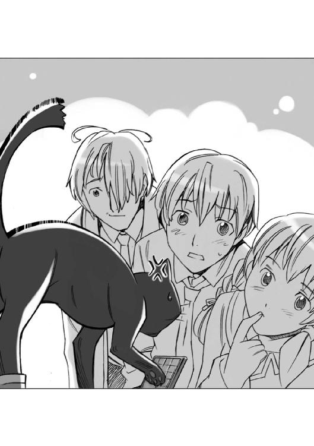
ハインツは肩をすくめた。
「君のご友人は、猫としてではなく人間として扱わなくちゃいけないらしい。となると、いくら君の友人とはいえ、人間をタダで乗せるわけにはいかないな」
サイラスは、引っ込まなかった。
「僕だって、運賃を払っていませんよ？ なのにどうして猫くんの運賃だけを要求するんですか！」
「君は乗客じゃない、この銀星号の立派な乗組員じゃないか。君はまだ学生だけど、ちゃんと二級宇宙空間推進機整備士の資格を持っているだろう？ この銀星号の機関士として働くために乗り込んだんだ......違うかい？」
「それはそうですけど......」
ハインツは黒猫に向き直ると、そのまま言葉を続けた。
「君が自分は猫であり、猫として扱えと言うならサイラスの飼い猫として扱うから運賃は生じない。だけど飼い猫でもなんでもない、一人の独立した人間として扱えと言うのなら、人間として運賃を払うという義務が生じるのは当然だ」
黒猫は、途方に暮れたような顔になって、サイラスを見た。
サイラスもまた、同じように途方に暮れた顔で黒猫を見返した。
「そんな目で見ないでくれよ、僕にもどうしたらいいのかわからないんだ......てっきり普通の猫と同じように扱ってくれるもんだとばかり思っていたから......」
ハインツは笑いながら言った。
「俺の言っていることが、ちょいとばかり意地悪だってことは認めるよ。でもな、世の中ってのは、そういうものだってことさ。
言っておくが、これは差別でもなんでもないぞ。権利を主張するなら、それに伴う義務も当然背負うことになるというだけのことだ。一人前に扱えと主張するのなら、それに応じた責任を背負う覚悟が必要だ。責任を果たせないのなら、頭を下げて他人の言うことを聞くしかない。つまりはそういうことさ」
黒猫は、ハインツをにらむと、テンキーを打った。
『私は誰の命令も受けない、私は自由な猫だ』
「そうか、では仕方ない。この船に乗ることができるのは乗組員と、そして乗客だけだ。それ以外の『人間』は乗せる理由が無い」
ハインツは『人間』というところを強調した。
その言葉を聞いたサイラスは両手を広げた。
「そんなのないよ！ だって、この猫くんは追われているんだよ！ 昨夜言ったでしょう？ 軍隊に追いかけられて逃げてきたって！」
ハインツは自分の前にあるコンソールのキーを叩いて、エンデバー宇宙港当局のページを表示した。
「ああ、確かに昨夜、このエンデバーステーションの居住区に隔壁破壊と減圧警報が出て、軍が出動する大騒ぎがあったみたいだな......公式には緊急対応訓練だった、ということになっているが......」
「違う！ 訓練なんかじゃないよ！ だって、あいつら、宇宙港の最上階にあるテクタイトのドームに穴開けて、降下歩兵を送り込んできたんだよ！ 訓練でそんなことする理由が無いよ！ 軍隊の目標は、間違いなくこの猫くんだったんだ！ だって、兵隊がそう言っているのを聞いたんだ！」
じっと黙ってハインツとサイラスのやり取りを聞いていたハヤトが怪訝そうにつぶやいた。
「......サイラスが言っていることが本当だとすると、この猫はお尋ね者ってことになるよな。それも、機動降下歩兵部隊を動かして追いかけなくちゃならないくらいの大物ってことに......」
ハヤトのつぶやきを聞きつけたリアンが息を吞んだ。
「も、もしかして......やっぱり......化猫？」
「みぎゃ！」
『違う！ 私は化猫などではない。実を言うと私は研究所で知性化され、そしてその研究所から逃げ出して来たのだ。その研究所を管理運営しているのはフュージリアグループだ。きっとフュージリアグループが軍隊を動かしたのだと思う』
メインモニターに並んだ文章を読んだハヤトたちの間に微妙な空気が流れた。
「フュージリアグループか......」
「こいつはもう、因縁としか言いようがないな」
「まったくだわさ」
お互いの顔を見合わせてため息をついたハヤトとハインツ、そしてリアンの三人を見て、サイラスは怪訝な顔になった。
「あの......フュージリアグループが、どうかしたんですか？」
ハインツは、小さくため息をつくと、ゆっくりと話しはじめた。
「君も知ってのとおり、このマガザン帝国は各諸侯が統治している領地の集合体だ。そしてこのエンデバー星系はエルキュール侯爵家領地の本拠地だ。そしてフュージリアグループというのは、そのエルキュール侯爵家が経営している企業体なんだ。官民癒着どころか官民一体というわけさ。だからこのエンデバー星系の法律や規則は全部、フュージリアグループに都合がいいように作られ、そして運用されている。すべての権力はエルキュール侯爵家に、そしてすべての利益はフュージリアグループへ、というわけだ」
ハヤトがその言葉のあとを継いだ。
「この銀星号で、銀星運輸を立ち上げるときも、いろいろ妨害されたんだぜ。運輸局の上層部の役人のほとんどはエルキュール侯爵家とつながりのある貴族だからな。
下っ端の役人が、上役の機嫌を損ねないように、規則をタテにして、なかなか許可を出さなかったんだ。ぎりぎりになってからアテンダントの資格が必要だとか言い出したおかげで、リアンなんか、必死に勉強してたった五日で資格取ったんだぞ」
「そんなことがあったんですか......」
びっくりしたように目を見開いたサイラスを見て、ハインツは肩をすくめた。
「まあ、なんだな、このエンデバー星系で、無事に生きていくには、とにかくフュージリアグループに逆らわないことが大事ってことだ......」
そしてハインツは黒猫を見て言葉を続けた。
「......そういった意味では、君の友人は、まさしくトラブルの火種以外の何物でもないということだな」
サイラスは必死に訴えた。
「なんか......とんでもないトラブルの元を連れてきちゃったみたいですね......でも......僕はこの猫くんに約束したんです！ 銀星号に乗せてやるって！ このエンデバー星系から他の星系に行ってしまえば、フュージリアグループの力は及びません！ だから......片道だけでもいいんです。猫くんを乗せてあげてください！ もしこのまま追い出して研究所の人に捕まったら、きっと研究材料にされて殺されちゃうかもしれません！ 僕を信じてここまで一緒に来たのに、それを裏切るなんてことは僕にはできません！」
そのとき、今まで黙ってやり取りを聞いていたリアンがハインツに言った。
「このミーくんの運賃はいくらですか？ 人間と同額ってのは理屈に合わないですよね？ 身体も小さいから生命維持装置の負担だって食費だって人間よりはるかに少ないですよね？」
「え？ あ、ああそういうことになるよな、運賃を払うとしたら人間の四分の一程度になるかもしれないな......でも、なんで急にそんなことを言い出したんだ？」
リアンは胸を張ってきっぱりと言った。
「このミーくんの運賃、あたいが払います！ だったら文句ないですよね？」
「リアンさん！」
驚くサイラスを見て、リアンは胸を叩いた。
「大丈夫！ お姉さんに任せなさい！ この前バレリアの実家に帰ったときに大祖母さまから、お小遣いもらっただよ！ 一万クレジくらいで良ければ、即金で払ってみせるだわさ！」
「一万クレジ？」
サイラスは目を丸くした。
一万クレジといえば、自家用の小型地上車の新車が一台買えるほどの金額である。
ハインツは困ったな、という顔になった。
「あ、いや、なんというか、実を言うとこいつは運賃だけの問題じゃなくて、企業としてのリスクコントロールの問題なんだけど......」
そのとき、今までじっと黙ってやり取りを聞いていた黒猫が一声鳴いた。
「みぎゃあ！」
『運賃を出していただくには及ばない。そのような理由は無い。先ほどハインツ殿に言われた言葉で目が覚めた。私は今まで自分が特別の存在であり、特別扱いされるのがあたりまえだと思い込んできた。しかし、それは、すべて頭に「猫として」という単語が付いていたのだということに気がついたのだ。私は確かに人間の言葉が読めるし書けるし、人間社会のことを知っている。だから私は人間と同じだと主張してきた。だが、私を人間としての基準で見れば、それは特別でも何でもない、ごく普通の人間ができることと同じことができるにすぎない。
いや、何のスキルも持たぬ私は普通の人間よりも劣っていると言ってもいいだろう。
私は思い違いをしていた。私は人間ではない、私はどこまで行っても猫にすぎないのだ。私のために一生懸命になってくれるのは嬉しい。だけど、私にはそんな価値は無い。
私がここに留まれば、あなたたちに迷惑がかかるだろう。私をこの船から降ろしてほしい』
サイラスが叫んだ。
「猫くん！」
黒猫は、いいんだ......とでもいう風に首を振った。
サイラスとリアンは、ハインツに向かって駆け寄った。
「ハインツさん！ お願いです！」
「あたいからもお願いするだわさ！ ミーくんをこの銀星号に乗せてあげてほしいだわさ！」
ハインツは、肩をすくめてつぶやいた。
「フュージリアグループにケンカ売るのは、よほどの命知らずか大馬鹿だ......巨大な宇宙要塞に魚雷艇一隻で突撃かけるようなものだ......まあ、実際のところ、こいつは船長に任せる案件だな。決めるのは船長であるハヤトだからな、ハヤトに頼んでくれ。俺はハヤトの裁量に従うから......」
ハインツの言葉を聞いたハヤトは、びっくりしたように目を見開いた。
「俺に振るのかよ！」
「まあ、そう言うな。難しい問題に決断を下すのが船長の仕事なんだからさ」
「話をややこしくしたのはお前だろうが！」
ハヤトはそう言い返したあとで考え込んだ。
......確かにハインツの言っていることはもっともだ。この黒猫は間違いなくトラブルの火種になるだろう、それもとんでもない大きさの。
でも......だからといってあのフュージリアグループの顔色をうかがって生きていくなんてのは、まっぴらごめんだ......。
そして、ハヤトは小さくうなずいてから、黒猫に向き直った。
「君は何が出来る？ 特技はあるかい？」
「にゃ？」
黒猫は、きょとんとした顔になったあとで、あわててテンキーを叩いた。
『何もできない。文章を読むことと、こうやって文章を書くこと。それだけだ』
「そうか、わかった。つまり、簡単な通信文を読んで、内容を判断し、振り分けることぐらいはできるということだね？」
『それくらいのことならやれるだろう』
ハヤトは満足そうにうなずいた。
「よし、ミケ。君は今日からこの銀星号の通信担当係員だ。詳しい仕事の内容はクララから聞いてくれ」
「？」
きょとんとする黒猫に向かってハヤトは、にっこり笑って言った。
「ハインツが言っただろう？ この船に乗れるのは、乗組員と乗客だけだって......ようこそ、銀星号へ。新乗組員のミケ君を歓迎する」
「やった！」
「ハヤト船長！ ありがとうございます！」
黒猫を抱き上げて歓声を上げているサイラスとリアンを見たハヤトは、ハインツの方に向き直った。
「......何か言いたそうだな、ハインツ」
ハインツは小さく肩をすくめた。
「別に......言っただろう？ 俺はお前の裁量に従うって......」
「確かに、あのミケって黒猫は、でっかいトラブルを背負っているかもしれないけど、だからといって保身のために追い出す気にはなれない。まあ、あれでいつまでも意固地になって『俺は特別だ』とか言い張ったり、人の迷惑考えないようなヤツだったりしたら考えたけどな......それと......お前が、さっき、フュージリアグループを宇宙要塞に、そして俺たちのこの銀星号を魚雷艇にたとえたけど、考えてみればそれって一方的に不利ってわけじゃないと思うんだ。魚雷艇には魚雷艇の戦い方がある......違うかい？」
「へえ......どんな戦い方だ？」
ハヤトは、にやっと笑ってハインツの肩を叩いた。
「そういう難しい問題に答えを出すのが、ナビゲーターの仕事だろう？」
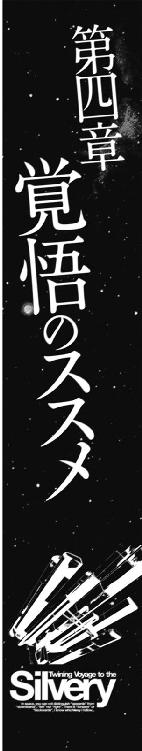
エンデバー星系のラグランジュポイントに浮かぶ小惑星『スローターハウス・ファイブ』のオフィスの一室では、汎用の事務机の前に座ったヒルダ博士が、物思いにふけるように、ぼんやりとモニターを見ていた。
そして、その日、何回目かのため息を小さくついて、机の上の書類に目を落としたとき、オフィスの中に汎用端末の通信コール音が鳴り響いた。
「わきゃ！」
ヒルダ博士は、歳に似合わない小さな可愛らしい悲鳴をあげて、飛び上がった。
机の上の小型通信モニターに、通信オペレーターが浮かび上がって、怪訝な顔でヒルダ博士を見上げていた。
『申し込まれていた、外部通信の許可が下りました。ギリアム調査エージェントと通話ができますが......どうかされましたか？』
「あ、いえ、なんでもありません！ 繫いでください」
『わかりました、では、お繫ぎします』
オペレーターが一礼して消えるのと同時に、三十代の黒髪の男のホログラムが汎用端末に浮かび上がった。
『こんばんは、ヒルダ博士』
そう言ってにっこり笑った男を見た博士は、どぎまぎしたように答えた。
「あ、どうも、こんばんは......ギリアムさん」
ギリアムは面白がるような微笑みを浮かべて聞いた。
『こうやって私のところにご連絡をいただけたということは、例の猫の件で何か進展があったということですね？』
「どうしてそれを？」
目を丸くする博士を見て、ギリアムはこともなげに答えた。
『なに、簡単な理屈ですよ。こうやって連絡が来た。それが一つの理由。もう一つの理由は、今のあなたの表情です』
「私の表情？」
博士はあわてて両手で自分の頰を押さえた。
『もし、これが打ち切りのための連絡なら、あなたはもっと暗い顔をしているか、もしくは私の顔を見て視線を逸らせたはずです。でも、私を見たときにあなたの顔に浮かんだ表情は、そんなに暗いものではありませんでしたからね』
博士はギリアムをにらんだ。
「私を、行動心理学の材料にしないでください！」
『いや、これは申し訳ない......なんせまあ、実証によって検証するというのが、私のスタンスですので......気に障ったのなら謝ります』
ギリアムは後頭部を搔きながらぴょこんと頭を下げた。
その仕草を見たとき、博士の脳裏に浮かんだのは、イタズラが見つかって、怒られている小学生ぐらいの男の子のイメージだった。
......あれ？ なんでこんなイメージが浮かんだんだろう？
そして、博士は思い当たった。
......そうか、この人には裏が無いんだ。裏を知らないわけじゃない......人の裏は知っているし、それを読むことにかけては天才かもしれない。でも、その読んだ他人の裏を利用しようとか、それを使って人を操ろうとか、そういった悪意が無いのよ。
......シザムとは正反対のタイプだわ。
『......まだ怒ってらっしゃいますか？』
ギリアムの声で我に返った博士は、あわてて首を振った。
「あ、いえ、ちょっと別のことを考えていましたので......それよりも、お送りした情報資料はご覧になりましたか？」
『ええ、しっかり読ませて戴きました。そしてわかったことがあります。知性化猫というものは、確かにあなたが創り出したものかもしれない。でも、素体六号は、あなたの所有物でもペットでもない。彼が生きていく道を自分で選んだのなら、それを認めるべきだ。それが彼のためでもあるんだ。
もし、素体六号を回収して研究所に戻ったら、きっとフュージリアグループは、もう二度と彼を自由にはさせないでしょう。命令に対し絶対服従するような心理抑制を要求してくるのは間違いない。そして、おそらくそのための手段を選ばないと思われます......』
ヒルダ博士は、そっと目を伏せた。
「わかっていました......いいえ、わかっていたけど認めたくなかったのかもしれない......私はきっと、自分の手で生み出した存在に、もう、あなたを必要としていないんだ、って言われたくなかったんだと思います......なんというか、子離れできない母親の気持ちが初めてわかったような気分よ......」
ヒルダ博士はそこで言葉を切ると、あらためてギリアムの顔を正面から見て、きっぱりと言った。
「でも、やっぱり、あの子を見殺しにすることはできません。シザムは、あの子と、そして乗り込んだ銀星号の両方を葬り去るつもりです......私は、なんとかしてそれをやめさせたいのです！ そんなことになる前に、なんとか彼を助け出したいのです！」
ギリアムは、ヒルダ博士の目を正面から見ると、あいまいな微笑みを浮かべたまま答えた。
『......お話を続ける前に、一つだけ確認しておきたいことがあります......よろしいですか？』
その、目だけは真剣な表情を見て、ヒルダ博士の顔に緊張が走った。
「......どのようなことでしょうか？」
『あなたと会話している、この通信の内容は、フュージリアグループ内の内部回線を使用している......ということを確認したかったのです』
ヒルダ博士は、小さく目を見開いた。
......あ、そうか、この回線は、フュージリアグループ内の内線だわ。ということは、この会話をシザムの部下とかが傍受している可能性があるってことなんだ！
この回線で、これ以上話さないほうがいい、ってこの人は言いたいんだわ。
ヒルダ博士は『あなたの言いたいことはわかりました』という意味を含めて、ギリアムの目をじっと見てから、小さくうなずいて、話を切り替えた。
「......でも、いくら私があの子を助けたいと思っても、もはやあの子の件は、私の手を離れました。もう、これ以上個人で何かができるわけもありません。あなたの予想に反して申し訳ありませんが、この件はこれで打ち切りとさせていただきたいということをお伝えしたくてご連絡を差し上げたわけです」
ギリアムは、わざとらしくうなずいて見せた。
『そうですか、私の予感が外れたようですね......それはそうと、失意の底にいる女性を見ているのも忍びないですしね。どうですか？ エンデバーステーションに出てきませんか？ もしよろしければ、ご一緒にお食事でもいかがでしょう』
ヒルダ博士は目を見開いた。
「え？」
ギリアムは優しく笑った。
『安い手間賃で働く探偵稼業でも、一世一代のときに、女性に食事を奢るくらいの持ち合わせはあるつもりです。いろいろお悩みのこともおありでしょう。私でよければご相談に乗りますよ。ヒルダ博士とはぜひ一度、じっくりお話ししたいと思っていたんですよ』
ヒルダ博士は、ちょっとすねたような表情でギリアムをにらんだ。
「私のことはヒルダと呼んでくださいと言ったはずです......」
ギリアムは笑いながら後頭部を搔いた。
『いやあ、申し訳ありません......というわけで、いきなりなんですけど、今夜はどうです？』
ヒルダ博士は再び目を見開いた。
「今夜ですか？」
『ええ、私としてはできる限り早いほうがいいと思うんですよ。図々しいとは思いますが、ほら、よく言うじゃありませんか、思い立ったが吉日って』
にこにこ笑うギリアムの顔を見て、ヒルダ博士は、小さくため息をついたあとで微笑んだ。
「わかりました、では、今日は仕事を早めに切り上げて、エンデバーステーションに向かいます」
『では、お待ちしています』
ギリアムはにっこり笑ってうなずくと、通信を切った。
通信が切れたモニターを見つめたまま、ヒルダ博士は、キーボードを叩いて、通信用の映像センサーに映し出されている三次元映像の自分の姿をモニターに表示した。
この機能は、もともとは映像状態の確認のためのものだったが、鏡と違って立体的に自分を見ることができるため、もっぱら女性のメイク直し用として利用されていた。
ヒルダ博士は、モニターに映る自分の姿を見つめながら、落ち着かない様子で、あっちを向いたりこっちを向いたりして、髪の毛のセットの具合や、着ているスーツのスカートのシワなどを何度も確かめ始めた。そして、はっと我に返ったような表情になると、顔を赤らめて自嘲的につぶやいた。
「......ハイスクールの学生じゃあるまいし......何を期待しているのかしら......私」
そして、そのまま、すとん、と椅子に腰を下ろし、あいまいな微笑みを浮かべたまま、もう一度小さくため息をついた。
......あの人にとっては、きっとこれはビジネスの話でしかないんだわ。私に会いたいっていうのも、内容をシザムに聞かれないようにするための手段よ。
......うん、きっとそう。そう思っておくのが自分のためだわ。
ギリアムがリザーブしてあった店は、エンデバーステーションの繁華街の中心部から少し離れたところにある、こぢんまりとした、しかし、どこか品の良いビストロ風のレストランだった。
二人が通された一階の奥のボックス席は、周囲を仕切りで囲われているために、店の中の他の席の話し声が聞こえてこない、という、まさに密談をするために作られたような席だった。
「この店に、こんな席があるなんて知らなかったわ......さすがは探偵さんね」
感心したようにボックス席の中を見回したヒルダ博士にギリアムは笑いかけた。
「まあね、リサーチという商売柄、いろいろなデータを揃えておかないとね......」
そして、ボックス席の仕切りの壁を軽く右手でノックするように叩いて言葉を続けた。
「知ってるかい？ この店のオーナーのこだわりでね、このレンガ造りの壁のレンガは、本当に粘土を手でこねて、窯で焼いた本物なんだ」
ヒルダ博士は目を見開いた。
「本物のレンガ？ 樹脂とか、ファインセラミックスじゃないの？」
「ああ、宇宙ステーションという人工の空間だからこそ、本物を使いたいってこだわったんだそうだ......そのこだわりが、ここで聞かれたくない話をする人にとっては好都合ってわけさ。
均一の分子構造を持った樹脂やファインセラミックスは、音声を通しにくいけど、均一な分フィルターをかけやすい。盗み聞きしようと思えば簡単だ。
だけど、手作りのレンガは不純物が多いので、フィルターをかけることができない。近代素材用に特化した盗聴機器は使えないってわけさ......それと、こいつがあれば、ここで君と話している内容はわからない」
ギリアムはそう言って、ポケットに入っている、汎用端末を一回り大きくしたような装置をちらっとヒルダ博士に見せた。
「それ......何なの？」
「うちのエキト......ああ、エキトってのは俺の助手だけどね。こいつが趣味で作った、ボイスチェンジャーならぬ、カンバセーションチェンジャーさ。俺は『吹き替えくん』って呼んでるけどね。会話の中身を、ドラマや映画の中にある同じようなシチュエーションの会話に吹き替えて君の持っている出力デバイスの搬送波に乗せるのさ。もし、フュージリアグループのリサーチ部門が、君との会話を傍受していても、その装置からは、ドラマの中の会話しか聞こえてこないってわけさ」
ヒルダ博士は怪訝な顔になった。
「私は、出力デバイスなんか持ってないわよ？ 私が持っているもので電波とか赤外線とかそういった搬送波を出すものといえば、汎用の携帯端末だけで、それも市販品よ？」
ギリアムは、にやっと笑ってヒルダ博士の持っていたバッグを指差した。
「ひょっとして、そのなかに、フュージリアグループのＩＤカードとかを入れているんじゃないの？ 非接触型のカードキーと共用のヤツ」
「ええ、持ってるわよ。だってこれが無いと研究所とか宿舎に入れない......」
そこまで言ってから、ヒルダ博士は目を見開いた。
「......もしかして、このカード......」
「そう、非接触型ということは、そのカードから常に搬送波が出ているということさ。実に微弱だけど発信機に変わりはないんだ。
そのカードだけど、もしかして施設の中にいるときは、そのカードをホルダーに入れて、胸とかに取り付けるという規則になっているんじゃないか？ そして、それを持っていれば、施設内のどこにいるのか、という位置情報もわかるようになっているはずだ......違うかい？」
青ざめた顔のまま、黙ってうなずくヒルダ博士を見て、ギリアムは『そうだろうな』という風に小さくうなずいた。
「カードに超小型音声センサーと回路を組み込んで、聞き取ったデータをデジタル化して発信させるだけで、仕事中に誰と、どんな会話をしているか、それを常にモニターできる。胸に付けておけば、会話を聞き漏らす心配もない」
ヒルダ博士は真剣な目でギリアムを見ると声を潜めて聞いた。
「フュージリアグループが、従業員の会話を盗み聞きしているっていうの？」
その真剣な目を見たギリアムは、安心させるように笑って首を振った。
「いや、そういうこともできる、ってことさ。いくらフュージリアグループとはいえ、全社員の会話を傍受して分析なんかできるわけがない。コストを考えればわかるだろう？ もし、やるとしたら、部外秘の部門に勤務していて、かなり深い情報にタッチできるそれなりの役職にある人間だけだろうね......そう、君くらいの立場になれば、会社は利益を守るために、君の言動をチェックするくらいのことはするだろう......でも、まあ安心だよ。ここでの会話は誰にも聞かれる心配は無い」
ヒルダ博士は、震える手でハンドバッグの中にある、カードホルダーを取り出した。
そこには、フュージリアグループの幹部社員であることを証明するＩＤカードが入っていた。
表面にシリルシルバーが蒸着され、キラキラと豪華に輝く銀色のカードを見たとき、ヒルダ博士の心の中に、なんとも言いようのない、嫌悪感が湧き上がってきた。
たった今まで、そう、ギリアムから話を聞く寸前まで、そのカードは自分の地位を証明する栄誉とプライドを意味するものだった。
だが、今の彼女の目には、忌まわしい裏切りと汚辱の象徴のようにしか見えなかった。
ヒルダ博士の表情を見たギリアムが静かに言った。
「ショックかい？ でも、それはこのエンデバー星系では違法でもなんでもないんだ。なぜならそのＩＤカードを身につけているときは、フュージリアグループの社員として仕事をしているということだからね。仕事中の社員の行動を管理するのは会社の裁量の範囲内にある、ということさ......ついでに言うなら、このエンデバー星系は、フュージリアグループを経営しているエルキュール侯爵家の領地であり、たとえ法律があっても、運用でどうにでもなる、ということでもある」
ギリアムはそこで言葉を切ると、ヒルダ博士の目を正面から見て言った。
「今、そのＩＤカードは死んでいる。君の言葉を聞くヤツはいない......俺だけだ。だから、君の覚悟を聞きたい」
ヒルダ博士は、はっとしたように顔を上げた。
「......覚悟って？」
「君が素体六号を助けるために行動を起こせば、それは、フュージリアグループの意思決定に逆らうことになる。
君に、フュージリアグループを敵に回す覚悟があるかどうか、ってことさ」
ヒルダ博士は、目を見開くと、つぶやくように答えた。
「......そうか、そういうことになるのね......」
「そうだ。君の研究は、フュージリアグループの資金で成り立っていた。そこから抜ければ潤沢な資金を使った研究もできない......君の居場所は無くなるということだ」
ヒルダ博士は、無言のままギリアムの目をじっと見つめていたが、やがて、二呼吸ほどの時間が過ぎたあとで、ふっと表情を緩めた。
「......そうね、でも、考えようによっては、この辺が潮時だったのかもしれないわね。あなたの話を聞いたら、もうこの先フュージリアグループを信じることはできないわ。信頼関係が維持できない会社に勤める気にはなれないわ......それに、ルマンド侯は高齢だわ。もしかしたらこの先、シザムが実権を握る可能性だってある......そんなことになるくらいなら、さっさと辞めて、どっか他の星系に行って何か別の仕事を探すわ。あの男の下で働くのだけは、ごめんだわ......」
「よほど嫌なやつなんだな、そのシザムってやつは......まあ、それは置いておいて、これで、素体六号を救出する計画を進めることができる。フュージリアグループと対立する立場になっても構わない、という君の覚悟だけが問題だったんだ」
ギリアムの言葉を聞いたヒルダ博士は、両手で自分の身体を抱くようにして、つぶやくように答えた。
「フュージリアグループを敵に回すなんて、考えただけでも怖いわ。彼らが、どれほどの力を持っているのか、それを知り尽くしているからなおさらよ......個人の力で強大な組織に立ち向かえるわけがないわ。理性的、合理的に考えれば、私は黙って、フュージリアグループの一員として、組織のために働くべきよ。それが正しい選択肢だわ。
......でも、何もしないで素体六号が殺されるのを黙って見ていなくちゃならないなんて、きっと後悔すると思う。ずっとずっと死ぬまで......そっちのほうが私には耐えられないってわかったの......」
ギリアムは静かにうなずいた。
「なんだかんだ言っても、人間が動く理由は結局は損か得か、という選択肢さ。でも、その損や得をいつの時点で判断するか、という基準が人によって違うんだ。
目先のことだけを考えれば、確かにフュージリアグループに逆らうなんてのは損だ、それも大損することが目に見えている最悪の選択肢だな。
でも、人生という長い時間で考えたとき、自己嫌悪にずっと晒される嫌な仕事を続けていくことが、果たして得なのかどうなのか、わからない。ひょっとしたら、そっちのほうが大損なのかもしれない。決めるのは結局は自分だよ」
「そうかもしれないわ......でも、私は自分で自分を嫌いになりたくないの。私は最後まで私の味方でいたい......だから、きっと後悔しないと思う......」
思いつめたような表情でそうつぶやいたヒルダ博士を見て、ギリアムはもっともらしくうなずいた。
「覚悟の程はしっかり確認させてもらった......で、正直に言うとだな、実はまだ、君にフュージリアグループを退職してもらっては困るんだ。君にはフュージリアグループの一員、それも幹部職員でいてもらわないと......」
「ちょっと待って！ それってどういう意味よ！ じゃあ今まで私に聞いていた覚悟とやらはなんのためなのよ！」
眉を逆立てて、食ってかかるヒルダ博士に向かって、ギリアムはなだめるように小さく両手のひらを上げた。
「まあ、そうカリカリしないで話を聞いてくれ。フュージリアグループは、素体六号が逃げ込んだ銀星号もろともこの世から消す計画を練っているって、君の書いた資料にあったけど、それを読んだあとで、俺は銀星号のことについて調べてみた。そうしたら面白いことがわかったんだ。銀星号の連中は運送業を始めるときに、フュージリアグループの妨害を撥ね除けているんだな。あのシザムというヤツはそれを根に持っている。つまり、フュージリアグループと銀星号は敵対しているんだ。素体六号を助けるためには、銀星号側に立たなくちゃいけないってことなんだ。その辺の理屈はわかるよね？」
「ええ、それくらいはわかるわ。だから、私はフュージリアグループを辞める覚悟を決めたのよ！ なのになんで、その覚悟をはぐらかすようなことを言うのよ！」
ギリアムは、自分をにらみつけるヒルダ博士の顔色を窺うような表情で、説明を始めた。
「つまりだな、君も俺も今までフュージリアグループのために働いていた。つまりは銀星号のの敵だったわけだ。その敵がだ、フュージリアグループと袂を分かってきました、味方にしてください、信じてください、と言っても、果たして彼らは信用してくれるだろうか、ということさ......ましてや俺たちは、つい先日このエンデバーステーションで、素体六号を追いかけ回したという前歴がある。
その疑いを解くためには、手土産が必要なんだ。君たちはフュージリアグループに敵視されています、なんて情報だけじゃあ、とても信用してもらえない。そんなことはわかっている、と言われて終わりだろうね。もっと具体的な情報......つまり、シザムがどんな仕掛けを企んでいるのか、とかそういった重要な情報を持って行く必要があるということさ。そして、その情報を入手するために、フュージリアグループの幹部社員という君の立場が必要なんだ」
「それはつまり......私に獅子身中の虫になれってこと？」
「そうさ、組織の外に出て敵対するのは簡単だ。でも組織の内部にいて、その組織と戦うのは、それの何十倍も難しい。ましてや、個人の立場でそれをやるとなれば、そのストレスは想像を絶するものがある。それを乗り切ることができるのは、意志の力だけなんだ」
「......だから私に何度も覚悟について聞いたのね」
「そういうことさ」
うなずくギリアムを見て、ヒルダ博士は小さくため息をついた。
「なんだか、考えれば考えるほど、怖くなってきちゃったわ。銀星号の側に立つってことは、私たちも、あのシザムに狙われるってことなのよね......」
ギリアムは笑って首を振って見せた。
「それについては、何とかできるかもしれない......実を言うと、フュージリアグループが我々や素体六号に手を出せないようにする方法を思いついたんだ......ただ、その方法を取るためには何が何でも素体六号を無事に回収するか、もしくは銀星号の連中に仲間として迎え入れてもらうしかない。そのためには......」
ギリアムの言葉を聞いたヒルダ博士は、露骨に嫌な顔をした。
「シザムに頭を下げて、情報を聞き出さなきゃいけないってことね......ワニのいるプールで泳いだほうがマシだわ......フュージリアグループの総帥であるルマンド閣下は、それなりの人格者だけど、あいつはただのチンピラよ」
「ふうむ......」
ギリアムは考え込んだ。
「そのシザムという人物に興味が湧いたな......他人が眉をひそめるようなギラギラした部分をむき出しにしていながら、フュージリアグループの重役でありつづける、というのは普通ではない......エルキュール侯爵家の内部の血縁や力関係に理由がありそうだ」
そして顔を上げたギリアムは、ヒルダ博士を正面から見つめて言葉を続けた。
「そのシザムという男に権限が委譲されたいきさつは君の報告で読んだけど、できることならそのときにエルキュール侯爵がどのような言動を取ったのか、事細かに教えてくれないか？ 印象とかに君の感情から来るバイアスがかかっているのは仕方ないが、できる限り客観的に頼む」
「それは構わないけど......どうするつもりなの？」
ギリアムはにやっと笑って答えた。
「俺の行動心理学の知識とスキルを総動員して、シザムを操ってやる。こっちの聞きたいことを、向こうから言うように仕向けるのさ」
「そんなことができるの？」
「できるさ......君が俺の言うことを聞いてくれればね」
すがるような目で自分を見たヒルダ博士に、ギリアムは自信満々という顔でうなずいて見せながら、考えていた。
......さて、天下のフュージリアグループを向こうに回して、無事に生き残れるかどうか......こいつは俺にとっても勝負どきだな。
ヒルダ博士とギリアムが、惑星エンデバーの衛星軌道に浮かぶステーションの中で、シザムを操る方法について知恵を絞り始めたその頃。
その宇宙ステーションの真下にあるエンデバーの首都の街並みは、夕日に照らされて赤く染まっていた。
首都の中心部から少し離れた高台に立つ、宮殿のようなエルキュール侯の屋敷の窓ぎわに傲然と立ったシザムは、山の稜線の向こうに沈んでいく夕日と、赤紫に染まる首都のビルの群れを見下ろしてつぶやいた。
「近い将来......このすべてが私のものになる日が来るのだな」
そしてシザムは後に続く言葉を吞み込んだ。
......そのためには、私はどんなことでもやってみせる！ たとえどんな小物でも邪魔者は排除せねばならない！ この世界は我がフュージリアグループの打ち立てた秩序によって動かねばならんのだ！
シザムはゆっくりと自分の執務机に近づくと、通信端末のキーを押した。
「私だ......総務三課のミヒロに繫げ」
机の上に立ち上がった秘書らしい女性のホログラムが一礼した。
『かしこまりました、秘匿通話のサインを確認してからお話しくださいませ』
そして、一呼吸ほどの時間ののち、コンソールに青い小さなランプが点り、瘦せて、陰気な表情の三十代の男がスクリーンに浮かび上がった。
『ミヒロでございます......どのような御用でしょうか、シザム様......』
「例の、銀星号に対する破壊工作の関係だが......なぜ巡洋艦の誤射によって、粉々に吹き飛ばす、という当初の計画を中止したのだ？ あれこそが、もっとも手っ取り早くて確実な方法ではないか！」
ミヒロと名乗った陰気な男は、小さく一礼してゆっくりと答えた。
『確かに、あの方法は確実で迅速でございます。しかし、御存じのとおり現在、帝国中央のマスコミが銀星号に注目しております。今の状態で撃沈するとなると、いささか世間の注目を集めすぎるのではないかと考えました次第です』
シザムは眉をひそめた。
「しかし......やつらは自由航行船だ。フュージリアグループの力の及ぶこのエンデバー星系の中でケリをつけねば、別の星系に行かれては手は出せんぞ」
『ええ、ですから、ここはひとつ銀星号の連中に仕事の依頼をすればよろしいのではないかと存じます......』
「仕事だと？」
目を見開くシザムにミヒロは慇懃に言った。
『はい、さようでございます。仕事を依頼するのです。このエンデバーまで何かを運んでくる仕事をです......そうすれば、やつらは嫌でもこのエンデバー星系に戻って来なければなりません。その間にこっちは理由を用意しておくのでございます。マスコミに疑いをもたれぬように正々堂々とあの銀星号を宇宙のゴミにできるような理由をです......』
シザムは、納得したようにうなずいた。
「ふむ......確かにその方法のほうが、帝国の中央政府のマスコミどもや、エルキュール家の政敵どもに付け込まれるリスクは少ないかもしれんな......よし、銀星号のチンピラどもがすぐにでも飛びつきそうな、簡単で多額の報酬が得られる仕事を用意してやれ」
しかし、その言葉を聞いたミヒロは小さく首を振った。
『お言葉ですがシザム様。あの銀星号の連中は、金では動かぬものと思われます。
私は、あの銀星号の船長と、航海士の経歴や言動を分析して参りましたが、あの者どもは、帝国軍の最前線で戦い続け、死神部隊とまで言われた部隊に所属していながら生き残った人間でございます。生きるか死ぬかという、ギリギリの体験をしてきた人間にとって、金銭的価値はそれほど意味を持たないものと思われます』
「金ではない？ では、何が目的なのだ!?」
『それは......達成感でございます。自分が、この世の中に何が残せるのか、何ができるのか......世の中から価値を得ようとするのではなく、逆に世の中に自分の価値を求めようとする......例の惑星バレリアへの爆薬と化した殺菌剤を輸送し、軍と警察を牛耳るマルス家に逆らって、辺境の惑星ホルストに物資を届けた理由は、まさにこの達成感あればこそでございます。
つまり、彼らに仕事を請け負わせたければ、楽で儲かる仕事ではダメなのです。彼らも馬鹿ではございません。敵対するフュージリアグループ関連の企業から、楽で儲かる仕事の依頼があれば、当然妙だと思うに違いありません。彼らに仕事を請け負わせたければ、やりがいのある、つまり難しく、それでいて儲からない仕事を探し出して依頼するべきと考えております』
ミヒロの言葉を聞いたシザムは、声を上げて笑った。
「はははは、なんだそれは！ 楽で儲かる仕事ではなく、難しくて儲からない仕事のほうを選択するというのか！ 貧乏人の考えることは想像もつかんな！ わかった、この件は、お前に任せる！ 人知れず宇宙の果てで吹き飛ばすような方法は面白くない。大衆の目の前でフュージリアグループに逆らった者の末路を晒して死んでいくような罠を用意しろ」
顔色の悪い男は一礼した。
『かしこまりました......』
シザムは機嫌良さそうにうなずいた。
「失敗は許されん......私の指示命令は以上だ」
シザムは通信を切ると、そのまま椅子の背もたれに体重をかけて、身体を沈め、胸の前で両手の指を組んで窓の方を向いた。
窓の外に沈む夕日は、ほぼ水平に室内に差し込んでいた。
首都の街並みは薄紫色の夕闇に沈み、オフィスの明かりや、行き交う地上車のヘッドライト、そしてビルの上に立つアンテナの先の警告灯の光が見え始めていた。
シザムはつぶやいた。
「......目障りなガラクタ船め、これでお前らも終わりだ」
正面から夕日を浴びて、真っ赤に輝くシザムの顔に浮かんだ微笑みは、地獄の業火を前にして微笑む悪魔の戯画によく似ていた。
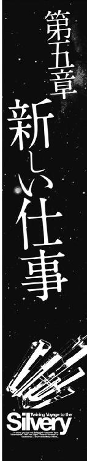
惑星エンデバーの衛星軌道上には、軌道エレベーターで地表と繫がっている巨大なエンデバーステーション以外にも様々な構造物が浮かんでいる。
その一つに宇宙工業団地と呼ばれるものがある。
無重力という環境は金属加工、特に合金を製造する冶金関係に適していた。
重力の影響を受ける地上では、比重の重い金属と軽い金属を溶かして混ぜ合わせても、比重の重い金属が下に集まってしまうために、均一の合金を作ることは難しい。しかし、重力の影響を受けない無重力状態ならばそれは容易である。
宇宙船の外殻や構造材となる硬化セカンダリュームという軽くて強靱な合金は、この無重力状態でなければ製造できないものであり、合金製造の工業プラントのほとんどが衛星軌道上に建設されていた。
工業プラントは、省力化され自動化されているとはいえ、完全に無人化されているわけではない。当然、この種のプラントに従事する従業員が生活する場所も建設されることになる。
そして、大企業の工場が建設されれば、関連する金属加工業や、部品製造などを請け負う下請け業者などが、その周辺に集まることになるのは必然である。
こうして惑星エンデバーの衛星軌道上には大企業の工場と、下請けの中小企業、そして、その両方の従業員が生活する施設が集まった一種の工業団地が出来上がったわけである。
その、衛星軌道にある工業団地の中にある中小企業の一つ、アカガネ化工の工場のドッキングベイに、銀星号は停泊していた。
その、銀星号のブリッジでは、ハヤトとハインツが、感圧センサーボードを使って作った幅一メートルほどもある大きなキーボードをどこに置くかでもめていた。
ハインツは、ブリッジの右側にある通信士席を指差して言った。
「ミケを通信担当にしたのはお前だろうが！ 通信士席のサイズに合わせるくらいのことは考えろよな」
「だって仕方ないじゃないか、猫の肉球で押せるキーを基本にして作ったらこのサイズになっちまったんだから」
ハヤトはそう言ってブリッジの中を見回した。
「このサイズのキーボードが置ける場所というと......この船長席だけか」
「おい！ ちょっと待て！ 猫を船長席に座らせるつもりか？」
「ああ、別にいいじゃないか、船長は俺だが操縦士を兼ねているから、ここは空いていたんだし」
ハインツは首を振った。
「いや、スペースの問題じゃないんだ！ 外部から通信が入ると、その通信画像は船長席に優先的に繫がるようになっているんだ。今までは空席だったから自動的にキャンセルされたが、そこに誰かが座れば、そのままその人間の映像が船長として相手に送られることになるんだ」
「それがどうかしたのか？」
怪訝な顔をするハヤトを見て、ハインツは大きくため息をついた。
「いいか、想像しろ。誰かが銀星号の船長を呼び出したとする。その呼び出しに映るのは誰だ？ お前じゃないんだ、当然俺でもない。あそこに座っているミケが映るんだ！」
ハヤトは、あ、そうか、という顔になった。
「船長を呼び出して......猫が映ったらそりゃあ びっくりするよな」
「びっくりなんかで済むもんか！ 下手すりゃ悪いウワサが立つぞ。あの船は猫が船長やっている、もうダメだ......ってな！」
ハヤトは考え込んだ。
「でもなあ、そう言われても、ここ以外に置く場所は無いし......」
そのとき、今まで黙って事の推移を見守っていた電子人格のクララが静かに微笑んで言った。
『私が通信応答のプログラムを管理しますわ。船長宛の通信はそのままハヤト船長の席を映し出すようにします......それなら安心ですよね？』
ハヤトの顔が輝いた。
「ああそうか、クララがいたんだっけ、頼むよクララ」
『かしこまりました』
そう言ってうなずいたクララに向かって、小さくうなずき返したあとで、ハヤトは、ブリッジにいた銀星号の乗組員に向かって話し始めた。
「さて、ミケの席も決まったことだし、新しい仕事について説明しよう。
今回俺たちが請け負ったのは、惑星アクアス名産のギンイロセナガマグロを生きたままこのエンデバー星系に運ぶという、実に難しい仕事だ。
こいつは時間との闘いになるだろう。今回の仕事の鍵は速度だ。最小限の時間で、惑星アクアスから、この惑星エンデバーまで帰ってこなくちゃならない。かといって無茶な加速や減速はできない。生簀コンテナの中に張られた水の中にいるマグロに影響を与えると、マグロが暴れて、コンテナの内壁にぶつかって死んでしまうんだ。マグロが死んでしまえば、元も子もなくなる。この航海は加速と減速の、その絶妙なバランスが要求されているってことだ。つまり、俺たちは銀星号の性能を最大限に発揮しなければならない。そしてそのためには、俺たち乗組員のチームワークが必要なんだ......」
銀星号のブリッジに集まった乗組員たち......と言っても、ハインツを除いたリアンとサイラス、そして黒猫のミケの二人と一匹は緊張した顔つきで、いつになく真面目な口調で説明するハヤトを見つめていた。
「......えーと、具体的にどんな仕事をすればいいのかと言うとだ......」
言葉に詰まったハヤトは、前に立っていたハインツに聞いた。
「......なんだっけ？」
緊張した雰囲気が、一気に緩んだ。
「あのなあ......」
ハインツは、ため息をついた。
「......この銀星号に乗り込んだサイラスとミケの初仕事だから、最初にがつん、と仕事の厳しさとか、真剣さとかを教えなくちゃ、って言ったのはお前だろうが！」
「いや、まあ、そのつもりだったんだけど......はははは、やっぱりやり慣れないことはするもんじゃないな、あとは頼むわ」
照れたように頭を搔いたハヤトをにらんで、ハインツがぼやいた。
「......ったくもう、こうなるなら最初から俺が説明すれば良かったじゃないか......」
「はいはい、わかりました、今度からそうします、じゃあ交替ね」
ハヤトと入れ替わりにリアンとサイラスの前に立ったハインツは、ブリッジの中央に立っているホログラムのクララに言った。
「銀星号の図面と、生簀コンテナの図面を出してくれないか？」
『かしこまりました』
クララの声と共に、ブリッジのメインモニターに、銀星号の見取り図と、なにやら複雑な装置が付いたコンテナの図面が浮かび上がった。
ハインツは、手に持ったポインターで、銀星号の推進機を指示して言った。
「まず、最初の速度に関してだが、銀星号の推進機の最大出力は、カタログデータでは光速の六十五パーセントまで出せることになっている。しかし、経年劣化が進んでいるために安定した出力が出せるのは五十パーセントがいいところだ。それでも、このクラスのコンテナ貨物船としては破格の出力だな。軍用の輸送船として船体更新措置を受けているからこその数字だが、今回の仕事を請け負うに当たっては、それでは心細い。光速の九十パーセントが出せる高速巡航艦とまではいかないだろうが、せめて新品時のカタログデータくらいの出力が欲しい。
そのため、今回は銀星号に固形燃料を使った補助ブースターを取り付けることにした。俺たちがこのアカガネ化工という工場にやって来たのはそのためだ......」
ハインツはそこで言葉を切ると、サイラスを見て微笑んだ。
「......固形ブースターの取り付け位置や制御関係については、サイラス、君に一任する。アカガネ化工の人に具体的に指示してくれ。この銀星号の船体とエンジンに関しては君が一番詳しいはずだからな」
「はい！ わかりました！」
嬉しそうに答えたサイラスに小さくうなずき返してから、ハインツは、ポインターをコンテナの図面に移した。
「次の問題が積荷だ。ギンイロセナガマグロを生きたまま運ぶためには、当然専用のコンテナが必要になる。ここに表示されているのが、その生簀コンテナの図面だが、見てのとおり、重力コントロール装置や、慣性中立化装置、生命維持装置などの複雑なシステムが搭載されているために、レンタル料がバカ高い。それと......これは過去のデータを見てわかったんだが、ギンイロセナガマグロというのは環境の変化に弱くて、輸送途中に死ぬ率が高いんだ。一回に大量に運ぼうとして、詰め込んで全滅されたら元も子もないし、かといって、少ししか入れなければ、コンテナのレンタル料が高いので利益が出ない。本当に運輸業泣かせの積荷なんだ......」
ハヤトは、そこで言葉を切って、ブリッジにいる全員を見回して言った。
「......一応、この生簀コンテナをレンタルすることにしたが、もし、何か他にいいアイディアを思いついたら知らせてくれ......俺からは以上だ」
ハインツがそう言ってポインターのスイッチを切ったとき、リアンが手を挙げた。
「あの......私は何をすればいいんでしょう？」
「え？」
顔を上げたハインツに、リアンが聞いた。
「さっき、チームワークが大切だってハヤト船長がおっしゃったんですけど、今回のお仕事はお客さんがいないんですよね......だとすると、アテンダントの私は何をすればいいのでしょう？」
「えーと、そうだな......困ったな、今までどおり、食事の用意でもしてくれればいいよ」
「はい......わかりました」
ちょっと悲しそうな表情でうなずいたリアンを見て、ハヤトは考えた。
......確かに、乗客がいないときのリアンには、乗組員の食事の支度や、水耕栽培の野菜の管理くらいしか仕事が無い。
それはそれで大事な仕事だけど、自分だけ仲間はずれにされているように感じるのは無理もないよな。
......リアンにもできる仕事が無いかな？
そして、ハヤトは、ぽん！ と手を叩いた。
......あったぞ！ リアンの仕事が！
ハヤトは、リアンに向き直って言った。
「えーと、リアンの仕事は、アテンダントだったよな」
リアンは、何を今さら、という表情でうなずいた。
「ええ、そうです......ときどき力仕事も私に回ってくることがありますけど、本当の仕事はアテンダントです」
「そうだよな、だったら、今回請け負った仕事にもちゃんとリアンの仕事があるじゃないか。ほら、アテンダントってのは、乗客が快適に過ごせるためにいろいろ気を遣うのが仕事だろう？ 今回の仕事にだって乗客がいるじゃないか！」
ハインツは怪訝な顔になった。
「......何を言ってるんだ？ 乗客はゼロだぞ。客室は空っぽだ」
「乗客は、客室だけにいるとは限らないだろう？」
ハヤトの言葉を聞いたリアンの顔が、ぱっと輝いた。
「そうよ！ お客さんがいるでねえか！ 大事なお客さんが！」
「お客って......積荷のマグロのことか？」
リアンは、そう聞き返したハインツをにらんだ。
「積荷じゃありません！ ちゃんと生きているお客さんです！ それも団体さんですよ？ 粗末に扱ったらバチが当たります！」
そして、リアンは嬉しそうにハヤトに言った。
「わかりました、船長！ お客さんが快適に過ごすためには、どんなことに気をつければいいのか......習性とか環境とか水温とか必要なことを全部、これから図書館のデータベースにリンクして調べてみます！ それはアテンダントの仕事ですよね！」
リアンの言葉を聞いたハインツが小声でつぶやいた。
「図書館のデータベースにリンクするのはいいけど、理由のところに、お客さんの習性を調べるため、なんてことは書くなよ、誤解されそうだ......」
「にゃー？」
そのとき、何か言いたそうな顔で黒猫のミケが鳴いた。
「あ、いけね、君も乗組員なんだったよな......えーと、君にできる仕事は......」
あわてて考え込むハヤトを見て、ハインツが笑った。
「......お客さんの味見とか？」
「ハインツさん！」
「にゃー！」
怒るリアンとミケを見て、ハインツは、あわてて顔の前で手を振った。
「冗談だ、本気にするな......まあ、なんだな、ミケの仕事はそのうち見つけるから、適当に通信をモニターしていてくれればいいよ」
「うにゃあ......」
不満そうな顔をするミケに、リアンが笑いかけた。
「ミーくんは、確かデータベースの検索と端末のキーを叩くのは得意だよね？ じゃあ、私のお手伝いをお願いできる？」
「みゃうみゃう！」
黒猫は嬉しそうにうなずいた。
リアンとサイラスとミケが、喜び勇んで出て行ったあとのブリッジを見回して、ハヤトがつぶやいた。
「狭いブリッジなのに、なんか、急に広くなったような感じだな......」
「なんだかんだで、乗組員が増えてにぎやかになったからな......」
ハインツは、そう言ってうなずいたあとで、にやっと笑って聞いた。
「何か、俺に聞きたいことでもあるのか？」
「よくわかったな......」
目を丸くするハヤトを見て、ハインツは肩をすくめた。
「何年お前と一緒にいると思ってる、見損なうな......で？ 聞きたいことは何だ？」
ハヤトは、小さくため息をついて話し始めた。
「......お見通しかよ......いや、たいしたことじゃないんだが......お前、この仕事の依頼が来たとき、裏でフュージリアグループが動いている可能性がある、とかなんとか言っていたのに、なんで仕事を請ける気になったんだ？」
「ああ、その件か......」
ハインツは小さくうなずくと、後ろに立っていたクララのホログラムに振り返った。
「クララ、この仕事を依頼したエクセレント水産加工のデータと、フュージリアグループの資本比率を表示して、ハヤトに説明してやってくれ」
『かしこまりました』
クララが一礼すると、メインモニターに、数字とグラフが浮かび上がった。
クララはその画面を見上げて説明を始めた。
『今回の依頼主であるエクセレント水産加工株式会社は、フュージリアグループの食品製造部門の子会社が資本提携しております。資本だけを見ればフュージリアグループの傘下企業と呼べるかもしれませんが、このエンデバー星系に存在する企業のほとんどが、なんらかの形でフュージリアグループの資本の影響を受けていることを考えれば、むしろ当然のことではないか、ということです』
ハインツは、クララの説明のあとを受けて話し始めた。
「このエンデバー星系の運輸業は組合を作り、運輸業を独占して帝国の平均運賃よりもはるかに高い運賃を請求している。この組合に加盟していない運輸業者には仕事を回さない、というのがフュージリアグループのやり方だった。なのに、なぜ、その組合に加盟していない俺たちに仕事を依頼するのか、俺が引っかかったのはそこなんだ」
同じようにメインモニターを見上げていたハヤトが聞いた。
「もしかしたら、なにかの罠かもしれない......ってことか」
「そうさ、なんせ俺たちはフュージリアグループから見れば、目の上のタンコブというか、肉まんにくっついて剝がれない紙というか、寝入りばなに耳元で羽音を立てる蚊というか、とにかく邪魔で邪魔で仕方がない存在なんだから、俺たちの評判を落とすために何か仕掛けを組んでくるくらいのことはやってのけるだろうと考えたんだ......」
「それはわかってる。だから、なぜ、この仕事は、その仕掛けじゃないと判断したのかその理由を教えてくれと言ってるんだ、前置きが長いのはお前の悪い癖だぞ」
「まあ、そう言うな、物事には段取りというヤツがある......」
ハインツはそう言って笑ったあとで、真面目な顔で言った。
「なぜ、この仕事が仕掛けではないと判断したのか、その理由は、この仕事が『美味しくない』からさ......難しいし、設備投資も必要だ。こんな仕事を仕掛けにすると思うか？ もし、お前が罠を仕掛けるとしたら、どんな仕事を用意する？」
ハヤトは、ああ、そうか、という顔になった。
「......そう言われてみればそうだよな。普通、もっと美味しい......いかにも飛びつきそうな、楽で儲かる仕事を用意するよな......」
「......だろう？ 難しくて、儲からない仕事であればあるほど、罠が仕掛けられている可能性は薄い。それに、依頼主の水産会社は、生マグロの販売ルートは確保したのに、肝心の生きたマグロを運ぶって仕事をどこの運輸会社も請け負ってくれなくて途方にくれていたところに、銀星号の名前を聞いて、藁をもつかむ気持ちで依頼したんだそうだ。いわば俺たちの虚名じゃなくて腕前を見込んでくれたんだな......これが今回の仕事を請けた理由だ。了解？」
「了解！ 俺たちの腕を見込んでくれた、というのが嬉しいな。今回もきっちり仕事して、銀星号は幸運の船だって、世の中の人たちに教えてやろうぜ！」
にっこり笑って親指を立ててみせたハヤトを見て、ハインツも笑いながらうなずいた。
「今回の仕事を成功させるために、銀星号に搭載する加速用の固形ブースターの推力変化について、アカガネ化工のシミュレーションプログラムを使わせてもらえることになっている。
推力変化によって操縦特性も変わるから、みっちりシミュレーターで練習しておいてくれ」
「ああ、わかった、任せろ。今回はサイラスもいるから、何から何まで俺がやらなくてもいい。楽にやれそうだ」
ハヤトはそう言うと、クララに向き直った。
「アカガネ化工のメインコンピューターと、データリンクが終わったら、サイラスと二人で推力変化のモデルケースを立ち上げる。クララも手伝ってくれ」
『かしこまりました』
クララは嬉しそうにうなずいた。
そして一時間後。銀星号のブリッジでは、ハヤトとサイラスがアカガネ化工のメインコンピューターとリンクしたモニタースクリーンを、難しい顔でのぞきこんでいた。
「えーと、クララ、次は二番ブースターの点火時期を二秒早くしてくれないか？」
二人の背後に浮かんだクララが、優しく微笑みながらうなずいた。
『かしこまりました......熱量の変化をサーモグラフで表示しますか？』
「うーんと、問題になるのは船体との接合部の温度だけだから、数値だけ記録してくれればいいよ、ブースター全体の温度変化はそれほど問題じゃない......サイラスは推力の変化グラフのほうをよく見ていてくれよ」
ハヤトの言葉を聞いたサイラスは、小さくうなずいて言った。
「わかりました......それにしても推進剤の配合を変えた固形ブースターを複数使って、その点火時期をずらして船の加速度を変えていく、なんて複雑な方法が取れるのは、このシミュレーションプログラムのおかげですね」
「まあな、いろいろな推力を持ったブースターを複数使うってことは、順列組み合わせでいくらでも選択肢が広がるってことだからな。こうやってシミュレーションしないと、計算値だけで、ぶっつけ本番でやんなきゃならないハメになる......固形燃料ブースターってのは、要するにロケット花火のでっかいヤツだから、使い捨てで安価で便利なんだが一度点火するとコントロールは無理だからな......」
スクリーンを見つめて、推力と加速の数値グラフとにらめっこしながらハヤトが答えると、サイラスが笑いながら言った。
「計算のほうは、僕とクララお姉さんに任せてくださいよ。アカガネ化工のメインコンピューターのデータが使えますから、思ったより楽です。ハヤト船長は、僕たちが出したこの数値を、銀星号の操縦シミュレーターにフィードバックしたものを使って、銀星号をコントロールするほうに専念してください」
ハヤトは、難しい顔でうなずいた。
「確かにな、今回の航海の難易度はハンパじゃないからな......惑星アクアスを出たあと、主推進機をほとんど使わずに、船体に取り付けた複数の固形ブースターで段階的に光速の六十パーセントまで加速して、そのままの速度を保ってタンホイザーゲートに飛び込む......この惑星エンデバーのゲートとシンクロさせて、そのままの速度で、この星系に飛び出したら、今度は主推進機の逆噴射で、銀星号を減速させる......減速作業のほうが微妙なコントロールを必要とするから、こういった方法をとったんだが......」
サイラスがうなずいた。
「積荷......じゃなかった、乗客がそんなに敏感じゃなければ、ブースターを逆方向に向けて取り付けて、そいつを使って減速すれば手っ取り早いんだけどな......乗客の取り扱い担当のリアンさんは、苦労しているみたいですね。わかんないことだらけだってぼやいてましたよ」
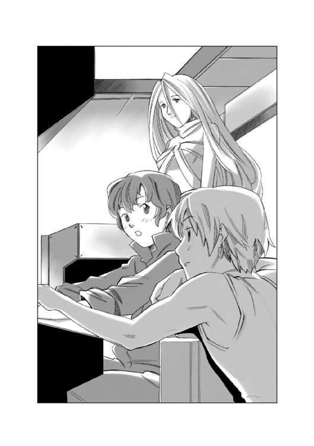
「まあな、なんせ、あの乗客は言葉が通じないし、何を考えているかわかんないし、わかってるのは、刺身にして食うと美味い、ってことだけだからなあ」
「あ、切り身を照り焼きにして食べても美味しいですよ、あの乗客......」
「そういえば、以前に惑星アクアスに行ったとき、屋台であの乗客の皮を細く切ってから揚げにしたヤツを売ってたんだけど、あれは美味いな」
ハヤトの言葉を聞いたサイラスが、うらやましそうに答えた。
「へえ、食べてみたいなあ......美味しそうだなあ、乗客の皮のから揚げかあ......」
「おい、どうでもいいけど、その『乗客』ってのはやめろよな、知らん人が聞いたら間違いなく誤解するぞ......」
サイラスとハヤトのやり取りを聞いていたハインツが苦笑しながら言ったその頃、食堂の片隅では、リアンとミケが端末を前にして考え込んでいた。
「このお客さんが、輸送途中で死んじゃう理由は、生簀コンテナの内壁に頭をぶつけるからだってことはわかったんだけど......その対策は、コンテナの内壁を曲面にする......という、今の方法しかないのかな？」
「うにゃにゃ？」
ミケが鳴きながら、食堂のテーブルの上に置かれた畳半分ほどの大きさのある猫用のキーボードを肉球でぽんぽんと叩くと、リアンの見ているモニターの下の枠内に文字が並んだ。
『ギンイロセナガマグロは回遊魚で、止まることができない。口を開けて泳ぎ続け、つねに口からえらに酸素を含んだ水を送り続けなければ死んでしまう。コンテナ内で泳がせる以外に方法は無いのではないかと思われる』
「うーん、そうなんだけどね、そうやって泳がせるから、こう、ごつん！ と頭ぶつけて死んじゃうんだよね......」
検索データを読んでいたミケが、何かを見つけたのだろう、キーボードを叩いた。
『学術惑星の帝国水族館では、半径五百メートルの巨大水槽を使うことで、ギンイロセナガマグロの飼育に成功したという記録がある......この文献によると、ギンイロセナガマグロの成魚は体長三メートル以上に達する巨大魚で、通常のマグロ類に比べてはるかに広大な海域を回遊する魚類であり、時速百二十キロ以上の速度で泳ぐため急激な方向転換ができない習性がある。最低でも半径三百メートルの円形水槽が必要だ、とのことだ』
「半径三百メートルなんて無理だよね、特大サイズの生簀コンテナの最大長がその十分の一なんだもん」
『つまり、このサイズだな』
ミケはそう文字を打つと、ポインターを操作して、モニターの画面に映し出されている銀星号の図面の横に、同じ縮尺で半径三百メートルの円形を描いて見せた。
それは、銀星号の本体がすっぽり入ってしまうほどの大きさだった。
リアンは大きくため息をついて、モニター上の銀星号の見取り図を見つめた。
「コンテナを後ろに伸ばしていけば全長は、なんとかなるけど、幅が絶望的に足りないよね......やっぱり物理的に無理なのかな？」
リアンはそうつぶやくと、図面ソフトの動画アイコンを開き、その中にある、魚のマークをクリックして、ミケの描いた丸い水槽の中にドロップした。
魚のマークは、銀星号の図面の上に載った円の中で尻尾を振って泳ぎ始めた。
「......と、遊んでいる場合じゃないよね」
リアンは照れくさそうに笑うと、ポインターを動かして、銀星号の見取り図の上に置いた円を動かそうとした。
リアンはポインターの操作を誤ったらしく、円がぐにゃっと楕円に変わった。
その楕円の中で、小さな魚マークが泳ぐ映像を見たリアンは思った。
......あれ？ これって、なんか競馬場みたい。
リアンの脳裏に妙な光景が浮かんだ。それは、競馬場のような小判型の水槽の中を何匹もの魚が泳いでいる姿だった。
そのとき、リアンはひらめいた。
あ！......もしかして！
リアンは、がばっと身を起こし、モニターを真剣な目で見つめると、ポインターを動かし、銀星号の見取り図に載っている楕円を引っ張り直し、銀星号の二列のコンテナの幅に合わせて、四箇所を固定した。
それは、巨大な競馬場のトラックのような形になった。
モニターの下にミケの打った文字が並んだ。
『何をやっているんだ？』
「ミケ！ ちょっと、これを見てくれない？」
リアンは小判型の図形の上に、小さな四角を並べて見せた。
『もしかして、コンテナを全部繫げようというのか？』
「うん！ そうだわさ！ 全部繫げて穴を開けてドーナッツのようにしてしまうんだわさ！ 半径三百メートルは無理だけど、小さな生簀コンテナの中でぐるぐる回るよりもよっぽど広いところを泳げるようになるから、きっと頭ぶつけて死ぬことはなくなると思うんだわさ！」
「みにゃあ？」
ミケは、小さく首をかしげて一声鳴くと、キーボードを打った。
『生簀コンテナを繫げて巨大水槽を作るには、すべての生簀コンテナの隔壁を破壊しなくてはならない。時間も費用もかかるのではないだろうか？』
「あ、そうか......そうだったよね」
「みゃうみゃう！」
しゅんとなったリアンに近づいたミケは、右前足でリアンの肩をぽんぽん、と力づけるように叩くと、また元の位置に戻って、キーボードを叩いた。
『繫げるというのは無理でも、アイディアとしては素晴らしいと思う』
「ありがとう、ミーくんは優しいだわさ」
嬉しそうに微笑むリアンを見た黒猫は、照れたように右の前足で耳の後ろを搔いたあとで、キーボードをパタパタと叩いた。
『リアンのアイディアを見て、私も一つ思いついた。単に泳がせるだけなら、場所は必要ない。トレーニングルームにあるランニングマシンのような水槽を作ることはできないだろうか？』
「ランニングマシン？」
『そうだ、私が育った施設では、ベルト状のランニングマシンで運動をさせられていた。ギンイロセナガマグロは時速百二十キロで泳ぐ。ならば水槽内に時速百二十キロの水流を作ってやればいい。相対的には停止しているが、マグロにとっては時速百二十キロで泳いでいるのと同じことになるのではないか？』
リアンは目を見開いて叫んだ。
「そうだわさ！ そうすれば、生簀の内壁に頭ぶつけて死ぬことはないだわさ！ うまくいくかどうかわかんないけど、やってみる価値はあるだわさ！」
リアンとミケが思いついたジェット水流コンテナのアイディアを聞いたハインツは、嬉しそうにうなずいた。
「そうか、そういう手があったか。実用化するにはいろいろクリアしなくちゃいけないことがいっぱいあるだろうけど、もし、これがうまくいけば、大型回遊魚の活魚の運搬が飛躍的に楽になるから、すごいコストダウンになるぞ！」
横で話を聞いていたハヤトも、嬉しそうに笑いながら言った。
「俺の言ったとおりだろう？ たとえ難しい仕事でも、チームワークで立ち向かえば道が開けるって......」
「具体的に指示をしたのは俺だぞ？」
「まあまあ、細かいことは言いっこなし！ とにかく一刻も早く依頼主に話をして、コンテナを試作してもらおうぜ！」
ハヤトはそう言うとハインツの肩を叩いて笑った。
エクセレント水産の技術部長と名乗る人間が銀星号にやってきたのは、ハインツが連絡して半日も経たない頃だった。
クララから、技術部長が来たと聞かされて、エアロックに迎えに出たハインツは、目を丸くした。
そこに立っていたのは、どう見ても自分より年下......どう見ても十四歳くらいの、メガネをかけ、髪の毛をツィンテールに結んだ小柄な少女だった。
「あれ？ えーと、エクセレント水産の技術部長さんはどちらに？」
メガネをかけた少女は胸を張って答えた。
「私です！」
「え？ だって......君は......」
戸惑うハインツを見て、その女の子は、つんとした表情で言った。
「年齢や見た目と、能力は別のものです！ 銀星号の方なら、その辺のことをご理解いただけると思っておりましたのに......残念ですわね」
「あ、どうも申し訳ありません、いや、その、馬鹿にしたつもりはないんだけど......」
困ったように答えたハインツを見て、女の子は胸を張って答えた。
「初めまして。私は、エクセレント水産の技術部長の、セズナ・ドラゴンフライと申します......いろいろ聞かれる前にお答えしておきますが、私の年齢は十六歳です。飛び級でハイスクールを卒業後、エンリオ工科大学に進み、現在ドクターコースに在学中です......本職は学生ですが、エクセレント水産の技術部長の職も兼務しております。小さいとか、若いとか、子供っぽいとか、そういった外見だけで判断されるのは心外です！ 私のことを、そのような形容詞でお呼びにならないように、厳重に申し入れいたします！」
「ああ、はい、わかりました。気をつけます......」
ハインツはそこで言葉を切ると、右手を差し出した。
「銀星号の航海長をやってます、ハインツ・クノール・キャンベルと申します。よろしく」
セズナと名乗った少女が、ちょっと赤い顔になってハインツの右手を握り返した......そのとき、ハインツの後ろからハヤトの声がした。
「おい、ハインツ。クララに聞いたけど、エクセレント水産の技術部長さんが来てるんだって？」
「ああ、こちらに見えてるぞ......」
ハインツがそう言って紹介する前に、その肩越しに覗き込んだハヤトが言った。
「あれ？ 誰？ このちっこい女の子は......」
セズナが叫んだ。
「ちっこいと言うなー！」
銀星号のラウンジの中に、リアンの淹れた香茶の香りが漂っていた。
テーブルの上には、リアンの手作りケーキが並び、その向こうには、すっかり機嫌を直したセズナの姿があった。
「すごいわあ、これ、全部手作りなんですか？ 尊敬しちゃいます！」
「大祖母さまに教わった古いタイプのケーキで、今風の洒落たものじゃないから、お客様に出すのは恥ずかしかったんだけどね......」
恥ずかしそうに答えたリアンを見て、鼻の頭にクリームをつけたセズナは、ぶんぶんと首を振って答えた。
「とんでもありません！ なんと言うか、今風のケーキには無い、こう、実直に美味しいって思えるケーキでした！ 私もこんなケーキが作れるようになりたいです！」
そして、セズナは、目の前に座っているハヤトに向き直ると、小さく咳払いして言った。
「えーと、ケーキでごまかされたわけではありませんけど、いつまでもこだわっているのも大人げないですね......船長の失言については不問にします」
そこまで言ったとき、リアンがそっとナプキンを差し出して、鼻の頭をぬぐうように手振りで示した。
セズナは、はっとしたように目を見開くと、あわててそのナプキンで鼻の頭のクリームをぬぐい取って、精一杯威厳をかき集めたような声で言った。
「仕事の話に戻りましょう。私はこちらから提案された、水流コンテナの件で来たわけですから......あのジェット水流コンテナを考え付いた方はどなたですか？」
「あ、はい、私です」
リアンが小さく手を挙げるのを見て、セズナは怪訝な顔になった。
「あなたは......アテンダントではないのですか？」
「あ、いや、うちは零細企業で人がいないので、いろいろ兼務しているんです。彼女も立派なスタッフなんですよ」
「ええ、それも猫の手を借りなきゃならないくらい......」
ハヤトの言葉に、ハインツが小声で付け足すと、答えるようにミケが鳴いた。
「みにゃあ！」
セズナは『え？』という顔をしたあとで、小さく咳払いして言葉を続けた。
「ええと、とにかく、こちらから提案された、ジェット水流コンテナについて、我々のほうで検討した結果、有望ではないかという結論が出ました。つきましては、こちらがレンタルした生簀コンテナを改造しようと思います。部品と作業ロボットが到着次第、このアカガネ化工さんの気密ドックをお借りして、制作に入ろうと思います」
ジェット水流を作りだすための、コンプレッサーや水中ポンプなどの資材と、作業用のロボットを載せた小型輸送艇が銀星号のところにやってきたのは、その日の午後だった。
アカガネ化工の気密ドックに停泊している銀星号の横には、取り外された生簀コンテナが浮かんでいた。
そのコンテナの前には、重力コントロールされた作業用のプラットフォームが設置されており、その上にセズナとリアン、そしてハヤトが立っていた。
「こうやってあらためて近くで見ると、コンテナって大きいだわさ......」
「ええ、生簀コンテナは、内部に海水を満たして運びます。水の質量は馬鹿になりませんから、隔壁強度とかも高く作られていますので全体にゴツく見えるんですよ」
「ああ、巨大なコンテナの前に立つと、人間ってのは、実に......」
......小さく見えるなあ。
ハヤトは、あとに続くはずのその言葉をあわてて吞み込んだ。
セズナが振り返って聞いた。
「......実に、何ですか？」
「え、あ、実に、この、無力ですね。人間の力ではどうにもならないというかなんというか」
セズナは、にっこり笑って答えた。
「ええ、ですから汎用工作ロボットを使うんです。これからこのコンテナの隔壁を切断して、繫げ、一本の筒のようなコンテナを作り、その中にジェット水流を作ります。
ギンイロセナガマグロの生態から考えれば、リアンさんが最初に考案した円形水槽型コンテナにしたほうが確実なのですが、専用の船が必要になります。その点、これならば汎用コンテナをそのまま使えますので、普通のコンテナ貨物船でも使うことができます」
セズナの言葉を聞いていたハヤトが、心配そうに聞いた。
「しかし......この生簀コンテナってのは、かなり高価な品物だと聞いています。もし、コンテナ改造が失敗したら、どうするんですか？」
セズナは、きっぱりと言った。
「我が社は倒産します」
「倒産？」
目を丸くするハヤトたちを見て、セズナは思いつめたような表情で言葉を続けた。
「エクセレント水産は、今回のギンイロセナガマグロの活魚輸送に社運を賭けています。この生簀コンテナをリース会社から買い取った資金は、会社の社屋とアクアスにある設備、そして私の家と敷地を抵当に入れて父が......いえ、社長が銀行から融資を受けたものです」
「君の家と敷地ってことは......」
「ええ、私は、エクセレント水産の社長の娘です......」
そして、セズナはにっこり笑うと、言葉を継いだ。
「いずこも同じ零細企業というわけですよ......さて、作業にかかりましょう。この作業ロボットは時間単位で借りていますから......」
そして、セズナはコンテナに向き直ると、手元の汎用端末に機動コードを打ち込み始めた。
リアンは、何か言いたそうな顔でハヤトを見た。
その顔を見たハヤトは、笑いながらうなずいた。
「手伝ってやれよ、リアン」
リアンは顔を輝かせると、セズナに言った。
「なんでしたら、私もお手伝いします！ 重いものとかを運ぶのは慣れてます......そうですね、軽巡航艦の連装砲塔ぐらいなら、持ったことがありますし」
「へ？」
リアンの言葉を聞いたセズナは、ジョークとして受け取ろうか、それとも真面目に受け取ろうか迷ったような、曖昧な微笑を浮かべた。
レーザートーチが硬化セカンダリューム製のコンテナの隔壁を切断していく。
そして、全体の九割以上を溶断して、残り一メートルほどを残してレーザートーチが消えたとき、リアンの声が響いた。
「危ないからどいていて！ 隔壁ぶち抜くから！」
コンテナの前に立っていたセズナがあわてて横に離れたのを確認したあとで、リアンはゆっくりと下がった。
通常の半分ほどの重力が働く作業用プラットフォームの上で、みつあみを解いて後ろにまとめた長い赤毛がふわっと浮いた。
「行くわよー！ どりゃあああ！」
掛け声と共に、リアンが体当たりすると、分厚い隔壁が、がきん！ という金属音と共に折れて外れた。
耐熱手袋をつけたリアンが、その巨大な隔壁を持ったまま笑顔でセズナに聞いた。
「これは、もう使わないんだっけ？」
「え、ええ、筒状にして繫げて溶接しますから、隔壁が必要なのは、前と後ろの二枚だけです」
「そうか、了解、じゃあ、こっちに置いておくねー」
目を丸くしたセズナを見て、リアンは笑いかけると、巨大なコンテナの隔壁をひょいと持ち上げて気密ドックの片隅に飛んで行った。
腰に付けたエアバーニアを一吹きして、作業用のプラットフォームに戻ってきたリアンを見てセズナは、目を輝かせた。
「リアンさんって......すごい！」
「いやあ、単に高重力惑星出身の田舎者っていうだけのことだわさ」
照れたように微笑むリアンを見て、セズナはぶんぶんと首を振った。
「いえ！ とんでもありません！ 美味しいケーキを作れて、優しくて、力持ちで、もう、なんと言うか、スーパーウーマンじゃないですか！ あこがれます！」
そして、セズナは、胸の前で両手を握って、キラキラと光る目でリアンの顔を覗き込んで聞いた。
「あの......お姉さまとお呼びしてよろしいですか？」
「へ？」
リアンの目が点になった。
コンテナの改造と、銀星号に固形ブースターを取り付ける作業は並行して進められた。
そして、すべての作業が終了したのは、三日後だった。
この日、銀星号のブリッジでは、リアンの作ったクッキーと香茶で、ささやかな完成祝いが開かれていた。
「すごい！ このクッキーも手作りなんですか？ リアンお姉さまって、本当に完璧超人ですわね！」
セズナはそう言って感心して見せたあとで、ハヤトたちのほうに向き直って、そこにいた男どもをにらみつけた。
「こんな美味しいクッキーが毎日食べられることを、あなたたちは、当たり前のことだと思っているでしょう？ 自分がどんなに幸せな環境にいるのか、少しは自覚するといいわ！」
「あ、いや、リアンには感謝しているよ」
あわてて答えたハヤトを見てセズナは首を振った。
「いいえ、悪いけど、船長さんの態度からは、感謝の念が感じられません。リアンさんの献身を、当然のことのように振る舞っています！ もっと感謝しなくてはいけません！」
ハヤトは困ったような目でリアンを見た。
「なんと言ったらいいのかな......俺は口下手だから上手く言えないんだけど......言わなくてもわかるんじゃないかな？ と思っているというか、なんというか......いちいち、ありがとうとか、感謝している、とか口に出すのって、それって他人行儀みたいな気がするんだよ。そう言わなくちゃわからない、そんな間柄じゃないって......まあ、これは俺が勝手に思っているだけなのかもしれないけどね......」
「いえ、そんなことないです！ 伝わってます！」
そう答えたあとで、リアンは真っ赤になってあわてて付け足した。
「あ、いえ......ハヤト船長だけじゃありません。ハインツさんもサイラス君も、みんな......」
リアンの表情を見たセズナは、小さく目を見開いて、咳払いをした。
「あー、うん、では、その件については、深く聞かないようにします......」
そして、気まずい雰囲気を振り払うように、センターコンソールに近づくと、メインモニターに水流コンテナの図面を表示して、銀星号の乗組員たちに振り返った。
「改造した水流コンテナの取り扱い上の注意については、すでにマニュアルをご用意しましたが、あらためて口頭で説明します。
この水流コンテナは、十二個の生簀コンテナを繫げ、一本の長いコンテナにしたもので、銀星号には、この水流コンテナを二列搭載しております。
この二つのコンテナの間にはパイプが繫がっており、片方の列には海水と生きたギンイロセナガマグロが、そしてもう片方の列のコンテナには海水のみが満たされ、強力なコンプレッサーとポンプが取り付けられています。このコンテナからギンイロセナガマグロのいるコンテナへ濾過され酸素を含んだ海水が時速百二十キロの水流となって流れ込むように設計されています」
セズナは、そこで言葉を切ると、ハヤトを見た。
「コンプレッサーとポンプで海水を加圧していますので、接合部にかかる水圧はかなりのものになると思われます。本来ならば、これだけの改造を加えた場合、接合部や隔壁などに対して対水圧検査を行わなくてはなりませんが、時間が無いために検査を行っておりません。もしもの場合を考えて設計値よりも二割ほど強度を高めてありますが、くれぐれもコンテナの破損に留意してください。内部の水が噴出すれば、その質量はこの銀星号ではコントロールできません」
セズナの言葉を聞いたサイラスが、怪訝な顔になった。
「銀星号の推進機の推力でもコントロールできないってことですか？」
「ええ、宇宙船の推進機は、位相反発を利用したソリュートドライブと、そして炭化水素の微粒子を推進剤に使う反応炉推進です。しかし、このどちらの推力よりも、水の噴射のほうが強いのです。水の質量はガスとは比べ物になりません」
セズナはそこで言葉を切ると、サイラスに笑いかけた。
「小学校の頃、ロケット推進の原理を学ぶために、水と圧縮空気を入れたペットボトルのロケットを飛ばしたことない？ あのロケットは圧縮空気だけでは五メートルも飛ばないわ。水の質量があるから百メートル以上飛ぶのよ。それと同じ理屈ね」
サイラスの顔に納得の色が浮かんだのを見て、セズナは満足そうに微笑んだ。
「コンテナの内部に搭載している水の量はそれほど多くはありません。ですが、水が噴出した場合に船体にかかるモーメントは銀星号を棒切れのように軽々と振り回すでしょう。安全確保のために接合部などにセンサーを設置してありますので、その数値や表示に、常に気を配ってください」
「わかりました。コンテナと中のギンイロセナガマグロの管理は私の役目です。しっかり気を配ります」
そう答えたリアンを見て、セズナはにっこり微笑んだ。
「リアンお姉さまなら、きっとやれます。お姉さまがお帰りになるのを心からお待ちしていますわ......」
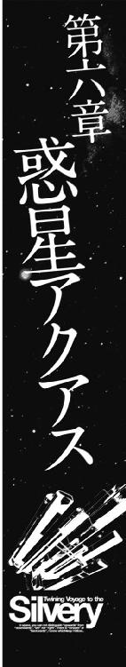
改造を終えたコンテナを搭載した銀星号が、惑星アクアスの宇宙港に入港したのは、それからさらに一週間ほど過ぎた頃だった。
衛星軌道から見下ろす惑星アクアスの地表を青い海が覆っていた。
それは比喩ではない。なぜなら、リムルダール星系にある、この惑星アクアスは、地表の八十パーセント以上が海という、海洋惑星だからだ。
その表面を地表と呼ぶのは、そういう意味では正確ではないかもしれない。
このアクアスで陸地と呼べるのは、軌道エレベーターが建設されているスターフィッシュ・アイランドと、その反対側にあるプラウン・アイランド、そして、いくつかの小島からなる群島だけで、他はすべて海に覆われている。
だが、その島々にあるのは、貴族の別荘と、富裕層が訪れる高級リゾート施設だけであり、この惑星の住民の多くは海底に造られたドームシティに暮らしていた。
宇宙港の自動コンテナリフターが銀星号に組み付けてあった試作ジェット水流コンテナを取り外して、軌道エレベーターの順番待ちの列に持っていくのを、銀星号のブリッジから眺めながら、ハヤトがハインツに言った。
「乗客は、あの船室が気に入ってくれるかな？」
「さあな、習性を見る限りでは、気に入ってくれるんじゃないかと思うんだが、こればっかりは乗せてみないとなんとも言えないな......」
難しい顔をするハインツを見て、ハヤトも同じように難しい顔になった。
「そうだよな、考えてみれば、コンテナとかの設備に問題が無くても、乗せる乗客が半病人のようなヤツとか、目が死んだようなヤツだったら、大失敗だものな、できるかぎり生きのいい、美味そうな乗客を選ばなきゃいけないんだよな......お前、乗客の目利きできるか？」
「できるわけないじゃないか。それより、いいかげんに、そのマグロのことを『乗客』って呼ぶのはやめろよ。銀星号を降りたら、誰が聞いているかわかりゃしないんだぞ」
「ああ、悪い悪い、つい癖になっちまった......でもよ、マジに目利きができないと困るぞ。誰か専門家を頼まないと、俺たちだけじゃ無理だ」
「エクセレント水産加工の現地駐在員の人が、段取りしてくれるって話だったけどな......」
ハインツの話を聞いたハヤトは、拍子抜けしたような顔になった。
「なんだ、専門家がいるんじゃないか、心配して損したぜ」
「まあな、細かい段取りは俺と、その人で決めるよ......地表に降りたらさっそくその専門家に会って、打ち合わせをやらないとな」
ブリッジで、一緒にコンテナの荷降ろし作業を見ていたサイラスが目を輝かせた。
「地表に降りるんですか！ うわーどうしよう？ 水着持ってきてないぞ、釣りの道具も家に置いてきちゃったし......」
「おいおい、俺たちは遊ぶために降りるんじゃないぞ？」
「そうだぞ、俺は地表に降りたら魚市場に行ってギンイロセナガマグロの鮮度を確認しなくちゃならないけど......それだってちゃんとした仕事なんだからな」
もっともらしく続けたハヤトの言葉をハインツは聞きとがめた。
「おい......ちょっと気になるんだが、お前はどうやって鮮度を確かめるつもりだ？」
「それは......その......運ぶマグロは、食卓に並ぶわけだから、鮮度と味が一番大事なわけで......」
「食って確かめる......つまり、お前は食いたいだけだろうが！」
「うーんと、突き詰めるとそういうことになるかな？ でもいいじゃないか、どうせ俺とサイラスは、宇宙に出るまで仕事らしい仕事は無いし......」
ハヤトの顔を見て、ハインツはあきらめたように言った。
「わかったよ、泳ぐのも食うのも好きにしろ！......でも、会社で負担するのはホテルの宿泊代だけだぞ。食うのと遊ぶのは自分持ちだからな！」
地表に降りたハヤトたちが、宿泊先であるホテルに着いたのは、その日の夕方だった。
高級リゾートホテルの建ち並ぶ一角にある、パシフィックホテルという名前の小さなホテルにチェックインしたハインツは、二つもらった鍵の一つをリアンに渡して言った。
「はい、これがリアンとミケの部屋の鍵。女の子一人で心細いかもしれないけど、隣の部屋が俺たち三人の部屋だから、何かあったら声をかけてくれ」
「はい、ありがとうございます！」
にっこり笑ったリアンを見て、ハヤトがつぶやいた。
「女の子一人でも、俺たち三人より強いと思うけど......」
リアンはぷっと膨れ面になると、足元にいたミケを拾い上げてハヤトに聞こえるように言った。
「大丈夫だよね！ どっかの食いしん坊船長なんかより、ミケのほうが頼りになるもんね！」
そのリアンの言葉がツボに入ったのだろう、廊下を歩きながらハインツが笑った。
「わはははは、食いしん坊船長ってのはいいな！ わはははは！」
「ほっとけ！」
しかし、ハヤトの不機嫌そうな声は、ホテルの部屋に入ったとたん、嬉びの声に変わった。
サブベッドが付いた、三人がゆったりと寝ることのできる広いベッドルームに、清潔そうな調度品が並んだ落ち着いた雰囲気のリビング、その奥には長期滞在者向けなのだろう、ミニキッチンと大きな冷蔵庫が見える。
「いやあ、安いホテルとはいえ、いつも泊まっているビジネスホテルに比べると、段違いだなあ。やっぱりリゾートというだけのことはあるな」
そう言って部屋を見回したハヤトは、ラゲッジバッグを置いて、窓際に近づくと、ブラインドを開けた。
窓の外に広がっていたのは、高級リゾートホテルが建ち並ぶ......その裏路地だった。
隣のホテルの壁を見たハヤトが、憮然とした表情でつぶやいた。
「......窓の外の眺めは、安いだけのことはあるな」
「文句を言うな、オーシャンビューの部屋になると金額が倍以上に跳ね上がるんだ。窓を開ければ潮風が入ってきて潮の匂いを運んでくるし、きっと夜になって静かになれば潮騒も聞こえるさ。あとはイマジネーションで補おうぜ」
ハインツはそう言うとハヤトの脇に立って窓を開けた。
ふわっと匂ったのは......焼き魚の匂いだった。
「......潮風が潮の香を運んでくるとか何とか言っていなかったか？」
「えーと、まあ、これも海の匂いの一種だと思え。イマジネーションだよイマジネーション！」
ハインツがなだめるように言ったとき、今まで黙ったままソファの上で自分のバッグをかき回していたサイラスが、財布を見つけて目を輝かせた。
「あった！ 良かった！ 銀星号に忘れて来たかと思った！ ちょっと、海パンと釣りの道具買って来ます！」
財布を握り締めたサイラスは、ハヤトとハインツにそう言い残すと、ホテルの部屋から走って出て行った。
「......せわしないヤツだなあ、ちょっとは落ち着けばいいのに......」
苦笑いするハインツを見てハヤトは笑いながら言った。
「海の家に着いた子供が、落ち着いていると思うか？」
「そうか......そう言われてみればそうだよな......」
「......というわけで、俺はこれから魚市場にギンイロセナガマグロの鮮度と味を確認に......」
「お前も落ち着け！ まったくリアンの言うとおりだな......」
腰を浮かせたハヤトをハインツがにらんだ、その頃。
惑星アクアスの宇宙港の中にある推進剤補給ステーションでは、一人の中年男が、補給施設の係員をにらみつけていた。
「いいから、君は黙って我々がやることを見ない振りをしていればいいのだ！ 君も、我がフュージリアグループの傘下企業に勤めているのなら、我々グループ本社の総務三課の話は聞いたことがあるだろう？」
補給施設の係員は、青ざめた顔で、小さく何度もうなずいた。
「......そうか、聞いたことがあるのなら話は早い。フュージリアグループは、君のみならず君の家族や友人の生活に深く関わっている。衣、食、住、そして通勤通学の手段や、学校教育、保健衛生ありとあらゆる部門に、我々の影響力は及ぶのだ。君と、君の家族、友人たちが、明るく楽しい明日を迎えることができるか、それとも悲惨な事件で中断されるか、それを決めるのは君の態度だということを、よく覚えておきたまえ......」
係員はうなずいた。
それを見た中年男は、小さく舌打ちをして言葉を続けた。
「まだわからないのかな？ うなずくということは、君に誰かが話をしていた、ということだな。だが、いいかな？ 誰も君には話しかけてなどいないのだよ。ここには誰も来なかった、誰も君と話などしなかったし、君は誰も見ていないし、何も知らなかったんだ......今度はわかってくれたかな？」
係員は返事をしなかった。
中年男は満足そうにうなずくと、手に持っていた汎用端末に向かって短く指示を出した。
「よし、こっちは大丈夫だ。推進剤に例のものを混ぜろ」
『了解！』
汎用端末から、短く返事が返ってきた。
中年男の顔に浮かんだ満足そうな表情は、さらに濃くなった。
中年男は、補給施設の窓の外に視線を移した。
そこには、ピンク色に塗られたコンテナ貨物船......銀星号が浮かんでいた。
補給施設から伸びる一本のパイプが、その銀星号の船体に繫がれ、補給基地のタンクの中にあった推進剤が勢い良く送り込まれ始めた。
回り始めたカウンターの数字を中年男は至福の表情で見つめ、そして小さくつぶやいた。
「......行きはよいよい帰りは怖い。というわけか......この銀星号がエンデバー星系に帰ってきたときが楽しみだな」
ゆっくりと波打つマリンブルーの海面の下を、いくつもの青黒い流線型の塊が弾丸のような速さで飛んでいく。
時折、海面の下で、きらきらと光るのは、泳いでいるマグロが身体をひねったときに、身体の側面が日光を反射しているのだろう。
ここは、海の牧場だった。
海面に浮かんだ発光信号器の付いた小さな浮標の列が、水平線の向こうにまで延びているのが見える。
十数本の椰子の木が生えた小さなサンゴ礁にある管理棟から、四方に延びた長い桟橋のような連絡通路の手すり越しに身を乗り出して、真下を通り過ぎていくギンイロセナガマグロの群れを目を丸くして見下ろしていたリアンは、ため息混じりに言った。
「本当に、すごい速さだね。データベースで調べて知っていたけど、こうやって本物を見ると、ため息が出ちゃうわ......ほんっと、泳いでいるんじゃなくて、どう見ても水の中を飛んでいるようにしか見えないもん」
リアンの言葉を聞いていたのだろう、すぐ後ろにやってきた青い作業服を着込んだ、二十代半ばの日に焼けた健康そうな女性が、笑いながら言った。
「そうだよ、あいつらは、水の中を飛んでいるんだよ。マグロの胸びれは、普通の魚より長くてね、そいつを左右に翼みたいに広げて水中を飛ぶのさ」
その女性は、リアンに向かって小さく頭を下げると、右手を差し出した。
「初めまして、私は、このエクセレント水産アクアス支店で、ギンイロセナガマグロの生簀を担当しているレイラ・シャド・シークと言います。あなたが、あのジェット水流装置の付いた新型生簀コンテナを考え付いたリアンさんね？ あのアイディアは面白そうね」
リアンは、あわてて頭を下げながら、レイラの差し出した右手を握った。
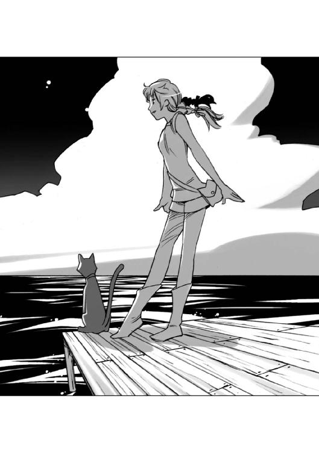
「あ、どうも、銀星号のアテンダントをやっています、リアン・マッケンジーと言います！ あのジェット水流生簀コンテナのアイディアを考えたのは私じゃなくて、ミケ君なんですよ」
「ミケ君？」
「ええ、この子です」
リアンが足元にいる黒猫を指差すと、黒猫は『はじめまして、よろしく』とでも言うかのように頭を下げて「ふにゃあ！」と一声鳴いた。
「あ、どうも、初めまして」
思わずそう答えて頭を下げたレイラは、はっと我に返ったように目を見開いたあとで、照れ笑いを浮かべた。
「いけない。猫に挨拶しちゃった」
「みゃう！」
不機嫌そうな顔をするミケを、あわてて後ろから抱き上げたサイラスが、ミケの耳元でささやいた。
「ミケ、忘れないで！ 銀星号の外では、君は普通の猫なんだよ！」
「ふぎゃう......」
......わかったよ、まあ仕方ないさ、という風にうなずいたミケを見て、レイラが目を丸くしたとき、管理棟の中から、ハヤトとハインツ、そして白髪交じりの、赤銅色に日焼けした、見るからに海の男、という風貌の五十代半ばの男が出て来た。
その白髪交じりの男は、レイラに向かって声をかけた。
「レイラ！ 猫と遊んでる暇は無いぞ！ フリッツとライバーを呼んで、選別用センサーまでマグロの群れを寄せさせろ！ 特級品中の特級品を選ばなくちゃならんのだからな！」
「わかったわ、今呼ぶ！」
レイラはそう言い返すと、胸ポケットから汎用端末を取り出して、なにやらキーを押した。一呼吸ほどの時間が過ぎたとき、サイラスに抱かれていたミケが何かに驚いたように、びくん！ と身体を震わせて海を見て鳴いた。
「ふにゃー！」
そのミケの様子を見ていたレイラが、笑いながら言った。
「あ、ごめん、猫には聞こえるかもしれないね、この音......」
「え？ 音？」
レイラは、怪訝な顔をするサイラスとリアンに、生簀の浮きの上に付いている発光信号を指差した。
「あそこから、人間の耳には聞こえない周波数の音が、海中に出ているのさ。フリッツとライバーを呼ぶ合図だよ......ほら、来た！」
レイラの指差した二百メートルくらい先の海面に、体長十メートル近い大きな魚のようなシルエットを持つ生き物が、二頭同時に水しぶきを上げて飛び上がった。
「......マグロ？ いえ、違う......なんだろう？」
「あれは魚じゃないわ、哺乳類よ。このアクアスの原住生物でね、クジラとかイルカの仲間でポセイドンイルカって名前がつけられているの。知能が高くて意思の疎通ができるから、この惑星の先住民族扱いする人たちもいるくらいよ」
「話ができるんですか！」
目を丸くするリアンを見て、レイラは笑いながら首を振った。
「会話は無理よ。でも、信頼関係を築けば、こっちの命令を聞いて動いてくれるのよ......ほら、牧場で羊の群れを追ったり、一箇所に集める仕事をする牧羊犬っているでしょう？ あれと同じことを彼らにやってもらっているの。この広い生簀の中のギンイロセナガマグロの群れを追い立てて、集荷場に追い込むのが彼らの仕事よ」
レイラは、そう言うと、汎用端末のキーをリズミカルに押した。
「こうやって音程の違う音を出すと、それを聞き分けて、あの二頭のイルカが動いてくれるのよ。子供の頃からずっと一緒に遊んでいたから、友達みたいなものよ。イルカにしてみれば、働いているって意識なんかなくて、一緒に狩りをして遊んでいるような気分なのかもしれないけどね」
レイラの横にやってきた五十歳くらいの男は、その二頭のイルカを見て、目を細めた。
「おお、フリッツとライバー、元気そうだな、一仕事頼むぞ。生きの良いマグロを、生簀の端にあるセンサーゲートに追い込んでくれ！」
二頭の大きなイルカは、男の言葉が聞こえたかのように、海面に顔を出して「きゅいきゅい」と鳴いた。
レイラは、笑いながらうなずいた。
「しっかりやります、って言っているみたいよ、お父さん」
レイラの父親は、腕を組んで、寂しそうな顔でため息をついた。
「こいつらと、話ができれば、さぞかし面白いだろうなあ......言葉が話せないというのは、もどかしくていかんな」
「まあね、でも、言葉が話せない相手とコミュニケーションを取りたいときは、相手の気持ちを推し量る能力をフルに使わなくちゃならないでしょ？ 私は、フリッツとライバーが言葉が話せないほうが好きだな......優しい自分でいられるから......」
レイラは、つぶやくように答えると、手に持っていた汎用端末のキーをいくつか押した。
イルカにメッセージが伝わったのだろう、二頭の大きなイルカは「くけけけけ！」と鳴きながら、くるりと方向を変えて、素晴らしい速度で一気に沖に向かって泳ぎ去っていった。
イルカの泳ぎ去った、その先に広がる水平線を眺めて、リアンが聞いた。
「ここの生簀って、どれくらいの大きさがあるんですか？」
レイラが答える前に、レイラの父親が笑いながら言った。
「その質問にはわしが答えよう......一応ここの責任者なのでな。このエクセレント水産の管理している生簀は、大きさで言うより広さで言ったほうがわかりやすいかもしれんな......ここでは一つおよそ五キロ四方の生簀を八個管理している。ここは捕まえてきた魚を出荷する前に一時的に入れておくための生簀で、出荷するときの選別が大変だが、養殖用の生簀のように給餌システムなどが無いので、管理は楽だな」
リアンに説明している父親の後ろで、その言葉を聞いていたハヤトが、ハインツに聞いた。
「さっき言っていたセンサーゲートというのが、選別をする場所なのか？」
「ああ、そうだ。そこで魚の鮮度というか、まあ健康状態だな、そいつをスキャンして脂の乗り方とか寄生虫の有無とか、新陳代謝能力とか、まあ総合的に判断するわけさ」
「へえ、味もわかるのか？」
ハインツは苦笑いをして首を振った。
「おいおい、魚河岸のマグロと違って生きているんだぞ。ちょいと尻尾を切って味見、ってわけにはいかないに決まってるじゃないか」
ハインツの言葉を聞いた、五十代の男は振り返ると、笑いながら言った。
「確かに、生きているうちは味見はできんな。だが、わしらには、どんなマグロが食って美味いのか、という経験則から生まれたノウハウがある。ちゃんと美味くて生きのいいマグロを選別してやるから安心して運んでくれ」
「任せてください、超特急で運びます。なんせ高級食材は鮮度が命ですからね」
そう言って、自信ありげにうなずいたハヤトを見て、リアンが、そういえば......という顔つきでつぶやいた。
「ギンイロセナガマグロって、エンデバー星系じゃあ高級食材ですよね。ましてや、保存加工されていない生マグロなんて、すごい値段が付いているのに、昨日、魚市場のレストランで食べたら、一桁違うくらい安かったんですよね......産地だから安いってのはあるんでしょうけど、何で、あんなに値段が違うんだろう？」
レイラの父親が、ちょっと不満そうな顔でリアンに向き直った。
「君は、ギンイロセナガマグロは身焼けする、というのを知らんのかね？」
「あ、申し訳ありません......」
あわてて頭を下げたリアンに、助け船を出すようにハヤトが言った。
「いや、その......実は彼女は、帝国の北東域にある農業惑星の出身でして......海のことはあんまり詳しくないんですよ......」
「ああ、そうか。いや、生きたマグロを運ぶというから、当然ギンイロセナガマグロについては詳しいと決めてかかっていたわしが悪かった。ギンイロセナガマグロは、肉に特殊な酵素を含んでいるのだな。この酵素が実は美味さの秘密なのだが、鮮度が落ちると、脂肪と反応して急に臭いがきつくなるのだ。極低温で冷凍することで、この酵素の働きを抑えることはできるのだが、その代わり食感が落ちる。新鮮な生マグロと冷凍品との価格の違いはそのためだ。一番簡単なのは、ギンイロセナガマグロを消費地の惑星で養殖することだが、生態系の問題があるために、それは禁止されている。だからこそ生きて運ぶ価値があるのだ」
父親の言葉を聞いていたレイラが、目を輝かせて言った。
「でも、リアンさん。あなたが考えた、あの新型のジェット水流コンテナが、もしかすると、ギンイロセナガマグロの値段を一気に変えるかもしれないよ。
今まで、新鮮なギンイロセナガマグロの美味しさを味わうことができたのは、エンデバー星系でも、ほんの一握りの金持ちだけだったけど、この輸送方法が成功して大量輸送が可能になればギンイロセナガマグロの値段が下がるわ。ごく普通の人たちだって、毎日とまでは言わないけど、たまには買ってもいいかな？ くらいの値段で簡単に買えるようになるかもしれない......それって素晴らしいことだと思わない？」
「本当に、そんなことになるんでしょうか？」
目を見開いたリアンを見て、ハインツが笑った。
「人類ってのはな、美味いものに目が無いんだ。ましてやそれを安く食えるとなれば、放っておくもんか。人類の歴史が、それを証明しているだろう？
大昔の人類が死を覚悟して未知の大海に船を出した理由は知的欲求じゃない。食欲、つまり香辛料が欲しかったからさ......ハヤトを見ればよくわかるだろう？」
「うるさいなあ、なんでいきなりそこで俺の名前が出るんだよ」
「食欲が人を動かすということを説明するためには、一番わかりやすいサンプルだからさ」
不満そうに唇を尖らせるハヤトを見たリアンは、にっこり笑ってうなずいた。
「ええ、よくわかります！」
「おい！」
にらむハヤトを見て、リアンはあわてて顔の前で手を振った。
「あ、いえ、船長を馬鹿にしたわけじゃありません！ 今度の仕事の大切さがわかったってことなんです！ 私、今まで、なんとなく、今回の仕事って、お金持ちの贅沢のために、生きたマグロを運ぶんだって思い込んでいたんですけど......そうじゃないんですね！
美味しいものを安く、たくさんの人たちに味わってもらう......そのための仕事なんですよね！」
ハヤトは、驚いたように目を見開き、あわててうなずいた。
「うん、まあ、そういうことだよ。マグロをちゃんと運ぶことができれば、水産業者はマグロがいっぱい売れて儲かる。俺たちも運賃がもらえて儲かる。消費者は安くて美味しいマグロが買えて嬉しい。誰も損をしないだろう？」
「そうそう、こいつの言うとおり！ 世の中は、誰かが儲かると誰かが損をするという仕組みになっていると思い込んでいる人が結構いるけど、そんなことはないんだ。みんなが得をする仕事だってある。俺たちがやっている仕事は、そういう仕事なんだ」
ハインツがそう言って笑ったとき、ふと水平線に視線を移したサイラスが驚いたように叫んだ。
「見て！ 沖の方！ 白い波がいっぱい立ってる！」
それは、さっき沖に泳いで行った大イルカが追い立てて来た、ギンイロセナガマグロの群れが立てる水柱だった。
「ようし、選別作業開始だ！ レイラ、配置につけ！」
「了解！」
持ち場につくために走り出した青い作業服姿の父と娘を見送って、ハヤトは、願うようにつぶやいた。
「新型のジェット水流コンテナが効果的だといいな......」
「ああ、あの中で、ギンイロセナガマグロが、ちゃんと生きていてくれれば、今回の仕事の八割は成功したようなものだからな......」
ハインツはそう言うと、海面に白波を立てて近づいてくるギンイロセナガマグロの群れを見つめた。
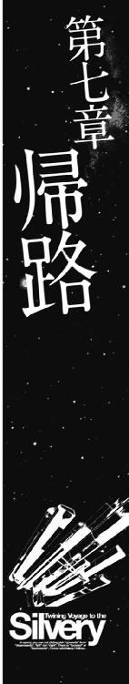
衛星軌道から見下ろす惑星アクアスの海の中に、白く輝く点が浮かんだ......と、思う間もなくその白い点は、細長い棒に変わった。
それは、惑星アクアスの地上にあるマスドライバーから射出され、低高度衛星軌道まで上がってきた生簀コンテナだった。
「来た来た......団体客の到着だぞ、準備はいいか？」
銀星号のブリッジで、その光景を見ていたハヤトが、サイラスとリアンに向かって声をかけると、二人は、弾んだ声で答えた。
「推進機、及び加速用個体ブースターの準備完了しました！」
「生簀コンテナ内の生態環境は継続してモニター中です！ 現在までのところ問題ありません！」
手元のパーソナルモニターに出ている表示を見たハインツが、つぶやくように言った。
「生きたマグロが生簀コンテナに入れられて、三時間経過か......残り時間は六十九時間を切ったな......計算によると新型生簀コンテナの中のマグロの生存率は七十二時間を境に落ち始める。つまり、俺たちが、あと六十九時間以内にエンデバー宇宙港にたどり着ければ、この仕事は大成功ってことだな」
「七十二時間ってのは、ちょいとタイトな時間だけど、なんとかなるさ。そのために加速用のブースターを取り付けたんだからな......」
そう言ってうなずいたハヤトは外部モニターの中に映る生簀コンテナの映像に視線を戻した。
モニターには、低高度衛星軌道にまで上がってきたコンテナに、待機していた作業船が近づき、それを抱え込んで、宇宙港の高度に引っ張り上げてくる光景が映っていた。
低高度衛星軌道まで引き上げられたコンテナは、宇宙港のコンテナ置き場に運ばれ、銀星号の後部にあるカーゴジョイントで連結されることになる。
そのとき、ハヤトは、自分が見ている外部モニターに映っている作業船の中に、一隻、デザインの異なる宇宙船が交じっているのに気がついた。
円筒形の船体に、大きく放送局のロゴが描かれ、各種の光学センサーと指向性アンテナを突き出したそのデザインにハヤトは見覚えがあった。
それは、以前、爆発物と化した農業用殺菌剤のニトロ・バイセルス・ナトリウムを、リアンの故郷惑星バレリアまで運んだとき、その行きと帰りでさんざんにつきまとわれた、マスコミの取材中継用の宇宙船だった。
「くそ......ハゲタカが来てやがる......」
ハヤトは画面をにらみながら、心の底から嫌そうな顔でハインツに言った。
「おい、ハインツ、なんでマスコミの取材なんか認めたんだよ！」
「仕方ないだろう？ 今回の仕事は、広報活動に使う可能性があるって契約だったんだからさ」
「俺は聞いてないぞ！」
「まあ、そう怒るなよ。荷主のエクセレント水産にしてみれば、今回の仕事が成功したら、ギンイロセナガマグロを大々的に売り出すつもりなんだから、どんなことでも宣伝に結び付けたいんだ......ワイドショーとか芸能ニュースとかの、レポーターが馬鹿な質問を浴びせるような番組じゃなくて、ちゃんとしたビジネス番組らしい」
ハヤトはモニターに映っている取材用の中継船に不信感丸出しの視線を向けた。
「......本当に、ビジネス番組で終わるのか？ 嫌な予感がするな......」
「まあ、取材が来たら来たで、そのときだ。今は目の前の仕事に専念するぞ」
「そうだな......でも、予防策は取っておいたほうがいいだろうな」
ハヤトはそう言って小さくうなずくと、自分の後ろにある船長席に陣取っているミケに振り返った。
「通信担当のミケ君、マスコミ対策だ！
これから銀星号に送られてくる通信だが......公的機関の緊急通信や個人的知人などの相手だけを繫いでくれ。それ以外の......マスコミとか通信履歴に無い初めての通信相手のメッセージは繫がなくていい。メールも同じだ。メッセージだけ受け取って保存フォルダにでも放り込んでおいてくれ、時間ができたら確認するから」
「にゃうん！」
ミケが任せてくれ！ という風に鳴いて、大きな猫用キーボードをパコパコ叩くと、メインモニターの下にあるメッセージウィンドウに文字が流れた。
『了解した』
「よし、頼むぞ。君はこの銀星号の通信担当責任者なんだからな」
ハヤトがそう言ってうなずくと、ミケは、ぐん！ と背筋を伸ばした。
「運ぶコンテナの質量は、定数いっぱいだっけ？」
ハインツがうなずいた。
「ああ、四十八個分だ。コンテナの中には加圧された海水が満たされているから、合計した質量は、ほぼ最大定数の最大値だ」
「そうか、すげえ質量だな。これだけの質量を、光速の六十パーセントまで加速して航行しなけりゃならないってことは、とにかく慣性計算をしっかりやらなくちゃならないってことだからな、計算のほうは任せたぞ。俺が握る銀星号のコントロールレバーの推力計算プログラムは、お前の計算を基準にして動くんだからな」
「ああ、任せておけ」
ハインツが、そう言って胸を張ったそのとき、惑星アクアスの宇宙港の管制センターから通信が入った。
『船籍番号ＳＧ七八三六ＴＲＣ四五五、銀星運輸所属の銀星号。こちらはアクアスコントロール。コンテナ搭載連結作業が終わった、直ちに所定の位置まで進み、コンテナを搭載せよ』
ハインツは、応答キーを押し、ブリッジのセンサーマイクをオンにしながら答えた。
「こちら銀星号、了解しました。フライトプランの認証を戴けますか？」
『積荷の総質量、及び寄港地、経由地などに変更はありませんか？』
「変更ありません」
『了解しました、認証手続きに入ります。銀星号のメインコンピューターはこちらとリンクされていますか？』
「リンク済みです」
『了解です、コンテナ搭載手続きが終了するのと同時に、認証が転送されます。では、良い航海を！』
管制センターからの通話が切れるのと、銀星号の船体にコンテナジョイントが連結される、ごごごん！ という低い音が伝わってくるのは同時だった。
『コンテナ搭載終了！ 各ケーブルジョイント異常なし、各コンテナの状況オールグリーン......アクアスコントロールから認証を受信しました、航法システム起動認証入ります！』
ブリッジに、クララの電子人格特有の澄んだ声が流れ、メインコンソールのほとんどすべてのモニターランプに光が点った。
「銀星号発進します！」
ハヤトはそう叫ぶと、両手に握ったピクトレバーを、ぐい、と押し込んだ。
船体の側面にある推進機が、オレンジ色から、やがて白く光り始めると、銀星号は、ゆっくりと加速し始めた。
「到着推定時間は五十三時間後だ！ 気を抜くなよ！」
「わかってるって！」
ハインツの言葉を聞いたハヤトがそう言って胸を張ったとき、積荷管理のモニターを見ていたリアンが、緊張した声で報告した。
「加速によるコンテナ内水圧の変化は許容範囲です！ 現在まで損傷を受けた乗客はありません！」
「損傷した乗客って、考えようによっては怖い言い方だよなあ......」
「あ、すみません、つい口癖になっちゃって......」
ハインツがぼやくようにつぶやくと、リアンがあわてて頭を下げた。
機関士の席で航路座標を食い入るように見ていたサイラスが顔を上げてハヤトに聞いた。
「固形ブースター異常なし！ いつでも点火、加速できます！ いつ点火しますか？」
その緊張しきった顔を見て、ハインツが笑った。
「そうあせるな、まだ宇宙港が肉眼で見えるじゃないか。ブースターを使うのは港内航路を抜けて、進路上の安全を確認してからだ」
「はい......申し訳ありません......」
ばつが悪そうに下を向いたサイラスを、元気づけるようにハヤトが笑いながら言った。
「サイラスにしてみれば、最大積載量で最大加速するなんて経験は初めてだから、緊張するのも無理は無いけどな。経験を積めば、緊張の適量がわかってくると思うぞ」
「緊張の適量......ですか？」
そのハヤトの言葉はサイラスの知識の中に無かったのだろう。サイラスは、ぽかんと口を開けた。
ハヤトは笑いながらあとを続けた。
「仕事ってのは、緊張しないのもいけないし、緊張しすぎて思考が硬直化してもいけない。どこで線を引くのか、自分で決めていくしかないのさ」
「そうか！ それが緊張の適量ってことなんですね！」
サイラスが顔を輝かせたとき、航路局から高加速運航の承認が出たことを示すサインがモニターに表示された。
「ようし、加速開始だ！ 固形ブースター点火！ サイラス、君に任せたぞ！」
「了解しました！」
サイラスは大きく息を吸い、自分に気合を入れるようにうなずくと、固形ブースターの燃焼スイッチを入れた。
銀星号の外側のアームに取り付けられた固形ブースターが、酸化剤によるガスを噴射し始めるのと同時に、銀星号は、ぐん、と加速を開始した。
燃焼状況を示すモニターを食い入るように見つめていたサイラスが、顔を上げて叫んだ。
「一番、二番ブースター燃焼状況問題なし！ あと十五分で燃焼を終了します！」
「よし、燃焼終了直前に三番、四番のブースターに点火！ タイムラグに気をつけろ！ このまま推力を維持するんだ！」
「了解！」
コントロールパネルを見つめて、コントロールレバーを握ったハヤトが、サイラスに的確に指示を与える。
そしてハインツは、加速表示とそれに伴ってかかるＧの計算プログラムを自分のモニターの中に表示させながら、リアンに聞いた。
「加速で生簀コンテナの水圧が変化しているが、お客さんの状態はどうだ？」
自分の前にあるモニターの中にリアルタイムで表示されている生簀コンテナの中のギンイロセナガマグロの生体データを真剣な目でじっと見つめていたリアンは、大きくうなずいた。
「大丈夫です！ 加速に伴う水圧を逃がす加減弁が効果的に働いているようです！ お客さんの生体データに異常はありません！」
リアンの報告を聞いたハヤトは、にやっと笑った。
「何とかいけそうだな......」
「ああ、今のところはな。でもこの先のタンホイザーゲートが問題だぞ。俺たちは光速の五十パーセントという速度で、あの狭いタンホイザーゲートに飛び込むんだからな......」
いつもの飄々とした顔つきがすっかり消えたハインツを見て、ハヤトは元気づけるように言った。
「大丈夫！ 俺を信じろ！」
「ああ。お前は信じてないがお前の腕は信じてるぞ......」
「どうせなら、全部ひっくるめて信じてくれ！」
ハヤトは、ハインツにそう言葉を返すと、すぐにセンサーマイクに向かって言った。
「こちら船籍番号ＳＧ七八三六ＴＲＣ四五五、銀星運輸所属の銀星号。申請のとおり、これより加速転移を行います！ 準備よろしいか？」
数秒後、少し緊張した声が答えた。
『こちら、リムルダール星系ゲートコントロール。ゲート周辺のデブリの除去は終了している。ゲート内の亜空間の固定も終了、受け入れ準備はできた。いつでも飛び込んでいいぞ！』
「了解！ 感謝する！」
『こちらこそ感謝している！ 頼む、ちゃんとマグロを届けてくれ！ 惑星アクアスの発展のために！』
リムルダール星系ゲートコントロールの係員の声には温かみがあった。
「銀星号了解した、ちゃんと届けてみせる！」
ハヤトは、胸を張ってそう答えると、自分の前にあるパーソナルモニターに、タンホイザーゲートの遠距離光学映像を投影した。
揺らめきの中に、遠く、紫色に光るリングが見えていた。
「クララ、俺が合図したらオートスタビライザーを切ってくれ」
電子人格のクララは目を見開いた。
『スタビライザーを切ると、完全にマニュアルコントロールになりますが......よろしいのですか？』
「ああ、わかってる。でもオートスタビライザーが入っていると、タンホイザーゲートの重力波の乱れを感知して、船が勝手に動いてしまう......予期できない動きは命取りになる。大丈夫、俺に任せろ」
クララは、一瞬躊躇したが、やがて、にっこり笑ってうなずいた。
『了解しました、船長......』
ハインツは、ハヤトをちらっと見たが、何も言わなかった。
銀星号は、一本の光の矢となって、タンホイザーゲートに突き進んだ。
ハヤトは正面を見つめ、推力コントロールを行うピクトレバーを握り締めて叫んだ。
「行くぞ！」
タンホイザーゲートの管制官の肉眼に、光速の五十パーセント近くに加速した銀星号は映らなかった。
一瞬の光と、質量計の数字が跳ね上がったことで、彼らは銀星号がタンホイザーゲートを通過したことを知った。
ゲートの紫色の力場の表面に起きた波紋のような揺らぎと、あたりに振り撒かれた、キラキラ光る粉のような帯電した星間物質が、そこを銀星号が通過したことの証明だった。
銀星号のブリッジの外には灰色の空間が広がっていた。
『亜空間転移完了......本船は無事に跳空間航法に入りました』
クララの声が銀星号のブリッジに流れるのと同時に、そこにいた全員が、大きく息を吐いた。
「とりあえず、加速については無事終了ってところかな？」
ピクトレバーから手を離したハヤトが、額に滲んだ汗をぬぐいながら言うと、ナビゲーター席で、慣性計算のプログラムを組み終えたハインツが、エンターキーを押しながらうなずいた。
「まあな、これで前半戦は終了だ。今は、この先に待っている減速作業に向けてのハーフタイムってところかな」
ハインツの言葉を聞いたリアンは、振り返って、クララに話しかけた。
「クララ、コンテナの中のお客さんの監視をお願い。あたい、ちょっとお茶を淹れてくるだわさ！」
『かしこまりました』
一礼するクララに、うなずいてから、リアンは荷物管理者の席を立った。
「とりあえず、跳空間航行中は、やることもないし、今のうちに腹ごしらえして、英気を養うとするか......」
「いつもと変わらんな......」
「何が言いたい」
不満げに唇を突き出すハヤトを見て、ハインツは苦笑いした。
「だって、お前はいつでも腹ごしらえをして英気を養っているじゃないか」
「いいんだよ、常在戦場って言葉を知らないのか？ 人生というのはいつでも戦場にいるのと変わらないんだぞ。いざというときのために、メシ食って、英気を養うのは当然じゃないか」
「はいはい、わかりました」
ハインツはそう言って肩をすくめた。
ブリッジに、ほっとした空気が漂う中で、ミケは猫用の大型キーボードの脇に取り付けられたトラックボールを転がしてポインターを動かしながらメール受信フォルダを整理していた。
......通信フィルタは、過去に通話履歴のあるものだけに応答するとして、メールはどうすればいい？
銀星運輸の企業アドレスに来るメールも、すべて過去に受信履歴のあるものだけにしてしまったのでは、新規の顧客からのメールが受信できなくなってしまう。
かといって、無制限に受信して確受信号を送り返していたのでは、スパムフィルタの意味が無い。
......ハヤト船長が私に要求している仕事は、この膨大な量のメールを、判断して仕分けすることだ。つまり、私が自分の責任で判断し、選別しなければならないということだな。
......責任か。
私は一度も自分で責任を負って何かをしたことが無い。そのくせ自分の権利だけを主張してきた。だが、本当に対等な立場として胸を張って何かを要求するのなら、まず責任を果たし、自分がその権利を要求するに足りる存在であることを示さねばならないのだ。
なぜなら、私は乗組員であって、客ではないのだから。
ミケが、自分の前のモニターにメールのセキュリティシステムとそれに伴うスパムガードのマニュアルを呼び出して、真剣な目で読みはじめたその頃。
そこから遠く離れた小惑星「スローターハウス・ファイブ」にある研究所のオフィスでは、通信モニターの前に立ったヒルダ博士が、モニターに映る自分の姿を見て眉をひそめると、離れたところにあるパーソナルモニターに映るギリアムに聞いた。
「ねえ？ 本当に、あいつはこんな格好が好みなの？」
『ああ、シザムの現在と過去の愛人について調べてみたんだが、あいつは征服欲の塊だ。強気の悪女が自分の魅力と権力の前に屈する姿を見るのが、あいつの望みなんだ。根底にはサディズムに通じるものがある......だからその格好が一番効果的なんだ。それに、この二週間、君はＩＤカードを身につけているときはシザムを誉める言葉をずっと口にしてきただろう？ きっとその内容はシザムのところに行っているはずだ。シザムは君が自分に好意を持っていると信じ込んでいる。それを疑わないはずだ。ヤツの見たがっているものを見せれば、ヤツはそれを信じ込むはずだ』
ヒルダ博士は、戸惑ったような目でモニターに映る自分の姿を見た。
ホログラムの中の自分は、いつもより化粧が濃く、着ているスーツも、身体のラインを強調したタイトなミニスカート。そして襟の大きめなブラウスの胸元を大きく開けた挑発的なデザインのものだった。
......うわー、いつもの私なら死んだって着ようとは思わないわよね、こんな服。
ヒルダ博士はため息をついた。
「やっぱり、無駄じゃないのかな？ だって、私にはもともと女の魅力なんかないのよ？ 胸だって一生懸命寄せて上げて、やっとこれだけしか出せなかったし......」
ギリアムは目を閉じて微笑むと、静かに首を振った。
『大丈夫、君はもっと自分に自信を持ったほうがいい。女性の美しさや魅力ってのは誰かと比べるものじゃないんだ。美しさや魅力は女性の数だけあるんだよ』
ヒルダ博士はちょっと赤い顔になってギリアムをにらんだ。
「......ほんと、あなたって口が上手いのね......」
『口だけで他人を動かすことはできない。本音を込めて初めて言葉は力を持つのさ......さあアポイントを取った時間だぞ、シザムを手玉に取ってやれ！ 細かいアドバイスは、イヤリングに偽装した骨伝導イヤホンで送る。俺がついているからがんばるんだ』
「わかったわ......がんばってみる！」
ヒルダ博士はそう言って自分に気合を入れるように両手のこぶしをぎゅっと握ると、通信端末の前に立った。
通信が繫がると、ヒルダ博士の前に、どこかの屋敷の一室の中にある革のソファにふんぞり返ったシザムが冷たい目で見下ろす映像が映った。
イヤリングに偽装した骨伝導イヤホンからギリアムの声が流れた。
《威圧的効果を狙ってわざわざ、通信映像センサーの位置を変えて、通信相手を見下ろすような位置にしてやがる......ウワサどおりの男だなこいつは》
ヒルダ博士は小さくうなずくと、浮かび上がったシザムに一礼した。
「お忙しいところ、お話を聞いていただけて光栄ですわ」
シザムはヒルダ博士の挨拶を無視していきなり詰問するように切り出した。
『例の件に関しては、もはやお前には一切の権限が無いことを知っているな？ なのになぜ私にこのようなことを提案するのだ？』
色気を武器にした悪女のような微笑みを浮かべたヒルダ博士は、傲慢な態度に見えるような表情で、胸を突き出しながら答えた。
「私の思惑より、この提案があなたにどんな利益をもたらすかをお考えになったらいかがかしら？」
その傲慢な表情を見たシザムは、気に入った、というようなあいまいな微笑みを浮かべながら鼻を鳴らした。
『ふん、私の利益は私が考えることだ、お前に指図される理由は無い』
ヒルダ博士の挑戦的な態度は変わらなかった。
「そうね......あなたの利益だけなら、こんな提案はしないわ。でも、あなたの利益になることが、そのまま私の利益になるとしたら話は別よ。あなたは利益こそが人を動かすものであり、利益こそが権力であることを知っている男だわ......違う？」
シザムは、ゆっくりと革のソファから身を起こした。
『......面白い。プライドだけが鼻につくインテリ女だとばかり思っていたが......なかなか食えん女のようだな......お前の提案が、私にとってどのような利益になるのか、説明してみるがいい』
ヒルダ博士は、流し目のような視線でシザムを見上げると、ゆっくりと言った。
「会議に出席していたあなたにも、おわかりのとおり、ルマンド閣下は、あの知性化猫にいたく興味をお持ちだわ。今回の件で、表ざたになることを恐れたルマンド閣下は、あなたに知性化猫の消去を命じた......でも、それはルマンド閣下が望んでいることなのかしら？」
『ふん......虎の威を借る女狐め......ルマンド閣下の名前を出して私に圧力をかけるつもりか？』
ヒルダ博士の耳に、骨伝導イヤホンからギリアムの言葉が聞こえてきた。
《よし、食いついたな......次はヤツをおだてろ。誉めるんだ。ヤツは挑戦的な女性が自分に屈服するところを見たがっている。ヤツの見たがっているものを見せてやるんだ》
ヒルダ博士は目を伏せると、シザムに向かって両手を広げて見せた。
「とんでもない......天下のフュージリアグループの重役であるあなたに、圧力をかけることができる人間なんかこの世にいないわ。いくら私が愚かな女でもそんな無謀なことはしないわ。これはあくまでも提案として受け取ってほしいの......」
シザムは、満足そうな表情を浮かべてソファにふんぞりかえった。
『......追従と世辞は耳に良いが、毒薬でもある......まあいい、その提案とやらを言ってみろ』
ヒルダ博士は、挑戦的な態度を引っ込めて、控えめな表情を作って話し始めた。
「ルマンド閣下は、知性化猫をあきらめた......でも、それは望んでいる結末ではない。これはおわかりですね？ では、もしも、一度あきらめた、望んでいる結末をルマンド閣下の前に示すことができたら、その評価はどうなるとお考えですか？ 人間の心理というのは、振幅が大きければ大きいほど、強烈な印象を与えます......つまり、知性化猫の回収に成功すれば、あなたの評価は他の重役とは比べ物にならないほど高くなるということです」
シザムは、目に失望の色を浮かべて見せた。
『つまらんな......私はすでにルマンド閣下から高い評価を受けている男だ。わざわざそのようなことをする理由は無い』
イヤリングの中からギリアムの声が聞こえた。
《安心しろ。あいつは口ではああやって否定しているが、実際には、少しでも高い評価を得てフュージリアグループ内での発言力を増したいと願っているはずだ......もう一押しだ、悪女っぷりを見せてやれ》
ヒルダ博士はシザムにわからないように小さくうなずくと、妖艶な目つきでシザムを見上げて言った。
「確かにあなたは、ルマンド閣下から高い評価を得ているわ......でも、今の評価で満足しているの？ その評価だけで万全かしら？ ルマンド閣下は高齢で子供がいないわ......万が一のとき、エルキュール侯爵領は誰が継ぐのかしら？ このフュージリアグループの富は誰の手に転がり込むのかしら？ ライバルより頭一つ上に出るチャンスが転がっているのに、座してそれを見送るおつもり？」
シザムはしばらく黙ったままヒルダ博士を見つめていたが、やがてにやっと笑った。
『......悪女め』
「光栄ですわ......」
にやりと笑い返したヒルダ博士を見て、シザムは声を上げて笑った。
『はははは、気に入ったぞ！ お前は小惑星の片隅で朽ち果てるには惜しい女だ......この件が上手くいったら、フュージリアグループの本社に呼んでやろう。私の下で働くがいい』
ヒルダ博士は、探るような目で聞いた。
「では......今回の件は......」
『うむ、こちらの計画では、巡洋艦の主砲の誤射によってあの猫は銀星号もろとも宇宙の塵になる予定だったのだがな......』
シザムの言葉を聞いたヒルダ博士の顔が青ざめた。
「そんな......」
そのとき、イヤリングからギリアムの声が届いた。
《驚いちゃダメだ！ せっかく悪女のイメージを植え付けたんだ！ 我慢して演技を続けろ。理性的に話を進めるんだ！》
ヒルダ博士は、顔に浮かんだ驚きをすぐに消して、冷静さを装った。
「その方法は、感心しないわね......今の銀星号は帝国中のマスコミが注目しているわ。事故で済めばいいけど、大衆というのは陰謀論が大好きな生き物よ。騒ぎになったら、評価を上げるどころの話ではなくなるわよ」
シザムは、ヒルダの言葉を鼻で笑った。
『ふん、それくらいのことをこの私が考えないとでも思っているのかね？』
シザムは勝者の余裕を見せるかのように鷹揚にうなずくとゆっくりと説明し始めた。
『今回の最大の問題は、あの猫ではない。銀星号なのだ。猫と共にエルキュール侯爵家の領地の外に出て行かれる前に片付けなくてはならん。領地の中ならフュージリアグループの力でどうにでもなるが、忌々しいことに銀星号は、フュージリアグループの支配下に無い。
非合法工作員を使って銀星号もろとも撃沈してしまえば話は簡単だが、捜査当局やら司法組織の中には我々に逆らう者も数多い。事件をもみ消すのは何かと大変だ。だから我々はこう考えた......、正当な理由で銀星号を破壊できるようにすればいい、とな......』
「正当な理由？」
怪訝な顔をするヒルダ博士を見て、シザムは顔に優越感を浮かべて言葉を続けた。
『そう......銀星号を破壊するのはやむをえない、という理由を作ってやればいいだけのことだ。やつらを、生きているマグロの運搬、という仕事に食いつかせたのは、その仕事には速度が重要だからだ。
銀星号は、いわゆる急送便のコンテナ輸送と同様に、光速の五十パーセント以上の速度でタンホイザーゲートから出て来て、そして、エンデバー宇宙港に入港する直前に減速するというわけだ。もし、このとき、銀星号が減速に失敗したらどうなると思うね？ 銀星号が、亜光速を保ったまま、惑星エンデバーの衛星軌道に突っ込んでくれば大惨事だ。そうなる前に破壊することもやむをえんだろう？ 破片は残るが、バラバラになってしまえば一個あたりの質量は少ない。デブリを処理するのと同じ方法で対処できる......無問題というわけだ』
「素晴らしい計画ね。でも......どうやってそんな細工を？」
シザムはこともなげに言った。
『なに、簡単だ、銀星号の積み込んだ推進剤に、不純物を混ぜておいたのだよ。センサーに引っかかりにくい性質の炭化水素だ。こいつを推進機で酸化させると、あとに不活性酸化物と呼ばれる燃え滓が残る......その燃え滓はどんどん堆積し、ついには推進機の推力を失わせてしまうのだ。銀星号は、生きたマグロを短時間に運ぶために、高加速で航行している。加速した船は、いずれ減速しなくてはならない、そして減速するには推進機をフルに使って逆噴射しなければならない......というわけだ......だが、逆噴射は不可能だ。減速する術の無い銀星号は破壊せざるを得ないというわけだ......まあ、一種の意趣返しだよ』
「......意趣返し？」
こわばった表情のまま聞いたヒルダ博士を見て、シザムは面白そうな表情で答えた。
『私は、以前、帝国の高官を接待するために高級豆腐を特急便で取り寄せたのだ。そのコンテナを減速できずに、豆腐をめちゃくちゃにしたのが、あの銀星号の船長をやっているハヤトというチンピラだったのだ......あのときのツケをしっかり払ってもらおうというわけだ。
やつらは、減速できなくなった銀星号から、命からがら脱出するだろうが......その救命艇は、おそらく不幸な事故を起こすことになるだろう。私は中途半端なことは嫌いでね』
「し、しかし、それでは知性化猫も助からないのでは......」
『これは決定事項なのだ。今さら計画変更はできん......残念だったな。だが、お前がどうしても、あの猫を助けたいと言うのなら、考慮してやってもいい......そうだな......私の個人的な配下に加わると約束するなら、救命艇の破壊は免除してやってもいい。銀星号の連中も、船を失ってしまえば、ただの街のチンピラと変わらんからな』
「感謝の極み......ですわ......」
ヒルダ博士が、少し上ずったような声でそう言うと、シザムは征服欲を満たしたのだろう、優越感をむき出しにして笑った。
『あとで、私のところにプライベートメールを送って来い。私は馬鹿な女は嫌いだ』
「わかりました......」
ヒルダ博士はそう言って一礼すると、震える手をコンソールに伸ばして通話を切った。
そして、通信端末が、完全に切れていることを確認したヒルダ博士は、思い切り身震いして叫んだ。
「ふざけんなー！ 俺の個人的配下になれだって？ 誰が......誰がお前なんかの愛人になるもんかばかやろー！ もう二度とアイツと話したくない！」
『安心しろ、フュージリアグループを抜ければ、縁は切れる......それより一刻も早く今の情報を銀星号に伝えないと！ 減速のために、逆噴射を始める距離まで近づいていたら、手遅れだ！』
ギリアムはそう言うと、手元にある通信端末を操作した。しかし、すぐに難しい顔になった。
『......おかしいな。銀星号に通信が繫がらない』
「アドレスは合ってるの？」
心配そうな顔で覗き込むヒルダを見上げて、ギリアムはうなずいた。
『ああ、間違いない。こっちのメッセージは向こうに着信しているんだが、応答する気が無いみたいだな。おそらくスパムフィルタの強度を上げて、通信履歴の無い相手からの通信はパスしているんだと思う......』
ギリアムは顔の前で両手を組むと、親指の爪を嚙んだ。
『まいったな......これじゃあ、せっかく君が、あのシザムから聞きだしてくれた、奴らの計画を銀星号の連中に伝える方法がないぞ......おそらく銀星号の連中は、シザムの部下が仕掛けたトラップに、まったく気がついてないだろう。あのままエンデバー星系に向かえばえらいことになる......』
一緒に考えていたヒルダが、思いついたように言った。
「個人宛のメールを送ったらどうかしら？」
『いや、送りたくとも個人のメールアドレスがわからない。わかるのは銀星運輸の企業アドレスだけだ......』
考え込んだヒルダ博士が、はっとしたように顔を上げた。
「企業アドレスでもいいのよ！ タイトルに、事情を知っている人間にしかわからない言葉を入れれば、そのメールが私たちからだって判別つくんじゃないかしら？ メールタイトルに『元・素体六号さまへ』とか書いてあれば、きっと私たちからだってわかると思うわ！」
ギリアムは目を見開いた。
『そうか！......だがスパムフィルタに引っかかれば、そのまま別のフォルダに入れられて終わりだろうな。とはいえ、今はそれしか方法がない！』
そして、メール送信を終えた通信端末の画面を見つめたまま、顔の前で両手を組んだギリアムは、祈るようにつぶやいた。
『......あとは運任せだな。銀星号が、いつ、受信フォルダの中身を確認してくれるのか、そのタイミング次第だ......』
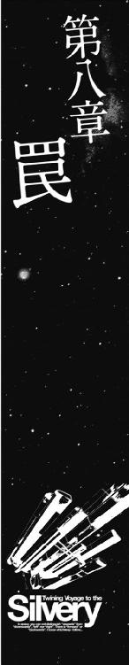
エンデバー星系のタンホイザーゲートから通常空間に転移を終えた銀星号は、光速の五十五パーセントの速度で、目的地であるエンデバーステーションに向かって突進していた。
ブリッジでは、ハインツとクララが、銀星号の航路上に存在する障害物の軌道について、事前に航路局から送られて来ていたデータと、実際に存在する障害物のリアルタイムのデータとの照合を行っていた。
惑星アクアスのあるリムルダール星系などの地方の星系とは違い、このエンデバー星系では数多くの宇宙船が航路内を航行している。
宇宙船は、衛星や小惑星のように決まった軌道を描いて移動しない。
そのために航路管制が行われているのだが、その状況はリアルタイムに変わる。その中を光速の五十パーセント以上という猛スピードで航行するには、緻密な計算を必要とするのである。
ハヤトは、目の前に次々に現れる航路表示を見つめながら、推力を逆噴射に切り替えた推進機をコントロールするピクトレバーを握り締め、管制局から指定された航路内の減速ポイントが近づいてくるのを待ち構えていた。
そして、座標の数字が一致したその瞬間、ハヤトは叫んだ。
「一次減速......開始！」
ピクトレバーがぐい、と押し込まれ、主推進機が逆噴射を開始した。
ノズルに送り込まれた推進剤が酸化反応を起こし、膨大な量のガスに置き換わって、逆噴射ノズルから銀星号の前方に噴出しはじめると、銀星号の船体に、推進機が逆噴射する振動が伝わってきた。
ハヤトは、ノズルの温度センサーの表示を見ながら、ピクトレバーを引いて、噴射を止めた。
最大質量を搭載した銀星号は、簡単には減速されない。
逆噴射を行っているノズルの耐久性などの関係で、何度も小刻みに逆噴射を行い減速していくのだ。
温度センサーの表示が許容範囲内の数値に落ちたのを確認して、ハヤトは再びピクトレバーを押し込んだ。
「二次減速開始！」
再び、銀星号のブリッジを逆噴射の振動が包む中で、銀星号の全体をモニターしていたクララが最初にその異常に気がついた。
そして時をほぼ同じくして、機関士のサイラスが、それに気がついた。
それは、逆噴射に使用した推進剤の量と、減速した速度の比率だった。
......おかしい、噴射効率が下がっている。本当ならもっと減速しているはずだ。......なぜだ？ なぜ、こんなに効率が悪いんだ？
サイラスは叫んだ。
「推進剤の噴射効率が落ちています！ 減速量に対比していません！」
「なんだって？ どういうわけだ？」
「わかりません！ 推進剤の酸化過程に何か異常が起きているようです！」
ハインツが、自分のパーソナルモニターにデータを呼び出し、素早く目を走らせたあとでうなずいた。
「確認した！ 確かに減速の効率がおかしい！ 思ったより推力が出ていない！」
「原因は？」
「わからん！ だが、原因を考えるより先に、減速を優先しないと！ このままの速度で第五惑星軌道より内側に入ると危険だぞ！ 推進剤の消費量を上げて推力を確保しろ！ とにかくこの銀星号の速度を落とさないことにはどうにもならない！」
「わかった......」
ハヤトはそう言ってうなずくと、逆噴射用のピクトレバーをさらに押し込んだ。
推進機に送り込まれた推進剤は、反応炉を触媒にして数万倍の体積を持つガスに変わっていく。
......はずだった。
しかし、推進剤の中に巧妙に混ぜられた阻害物質のために、推進剤の一部はガス化せずに、不活性酸化物と化して、ノズルの内側に堆積し始めていた。
目を閉じて、データを追っていたクララが、目を見開いて叫んだ。
『だめです！ 減速効果が出ません！ ノズル内に異物が形成されノズル形状が変わっている可能性があります！』
「なんだって？」
そのとき、サイラスが目を見開いた。
「推進剤の分析を！」
「推進剤？」
怪訝な顔をするハヤトを見てサイラスがうなずいた。
「ええ、僕の家は宇宙船再生工場だったから、沈船の推進剤を回収して再生業者に売ってたんです。分子位相フィルターに二度くらい通せば、ほとんど新品同様に使えるんだそうですが、中にはそういった処理をしないでそのまま市場に流す業者もいるんです！ そういった推進剤を使うと、推進機の噴射ノズルにスラッジが溜まるんです！ もしかすると......」
「でもよ、この銀星号に搭載している推進剤は、アクアスステーションに出入りしているちゃんとした正規業者のものだぜ。それに推進剤タンクから反応炉に行く経路には位相フィルタがあるはずだ！ もし不純物が混入していたら、そのフィルタのセンサーが検出するはずだぞ？」
「ちょっと待て！ もしかすると......」
ハインツが真剣な目で振り向いた。
「クララ！ 推進剤の分析結果は!?」
『今、分析中です......出ました！』
目を閉じてデータを検索していたクララは目を見開いた。
『推進剤には含まれていないはずの化学物質を確認しました！ これは......分子量の極めて類似した炭化水素の一種です！ おそらく......フィルターにもセンサーにも反応しないものと思われます！』
クララはそう言うと、再び目を閉じて、データの検索と検証に入った。
一呼吸ほどの時間もたたぬうちに、クララは目を開けた。
「この炭化水素は実に特殊な物質です。製造運搬過程では絶対に混入するわけがありません。データによると、推進剤に混入した場合、化学反応を起こし酸化ノズルで不活性化してスラッジを形成するおそれがあるという結果が出ました！」
「なんだって！ まさか！ なぜそんなものが！」
ハヤトが目を見開くのとハインツが自分の前にあるコンソールを、ばん！ と両手で叩きつけるのは同時だった。
目を丸くするブリッジの仲間を見回して、ハインツは叫んだ。
「簡単な話だ！ ハメられたんだよ、俺たちは！ この仕事も何もかもが、俺たちに対する罠だったんだよ！ 俺は馬鹿だ！ まさかそんなことは無いと、決めてかかって、疑いもしなかった！ 大馬鹿だよ！」
リアンが、おろおろ声で言った。
「罠って......この仕事が全部そうだったんですか？ あの......コンテナを作ってくれたセズナも、アクアスでマグロを選別してくれたレイラさんもグルだったんですか！ あたい......そんなの信じられない！」
「君が信じようが信じまいが......」
そこまで言ったあとで、ハインツは再び目を見開いた。
「そうか！ わかった！ なぜ、俺がこの罠に気がつかなかったのか、その理由が！」
ハインツは、メインモニターの隅っこのウィンドウに掲示してあった、エクセレント水産と結んだマグロ運搬に関する契約書を指差して言った。
「このエクセレント水産の仕事は本物なんだ！ エクセレント水産の人たちは、自分たちがこの罠の一部になっているなんてことはまったく知らないし、考えてもいないんだ！ この罠を仕掛けた連中は、まったく別のところにいる！ だからいくら水産会社を調べてもわからなかったんだ！」
パイロット席で、推進機のコントロールを行うピクトレバーを握り締めたままハヤトが叫んだ。
「誰がどんな罠を仕掛けたか、なんてのはどうでもいい！ 今はこの状況をどうするかだ！ 銀星号の速度は光速の四十二パーセント！ これ以上の減速は、おそらく不可能だ！ 推進剤を使わないとなると、位相ソリュートドライブを使う反作用ブレーキだけしか使えない！ 減速効果は二十分の一以下だ！ このまま第五惑星軌道内に進入するわけにはいかない！ あそこから先は、ラッシュアワーの中央環状線みたいに船や作業艇が行き来しているんだぞ！」
「それでも使わないよりはマシだ！ 位相ソリュートドライブを使え！」
「ああ、とっくに切り替えてる、ほんのり効いている、って程度だ！」
「ノズルクリーニングは？」
「やってる！ でもダメだ。逆噴射ノズルは、もはや、ため息ほどのガスを吐出するだけで、相対速度の表示はぴくりとも動かない！」
ハインツとハヤトは言葉を失った。
宇宙空間を暴走する銀星号は、エンデバー星系の中心部めがけて突き進んでいた。
コントロールレバーを握り締めてハヤトが叫んだ。
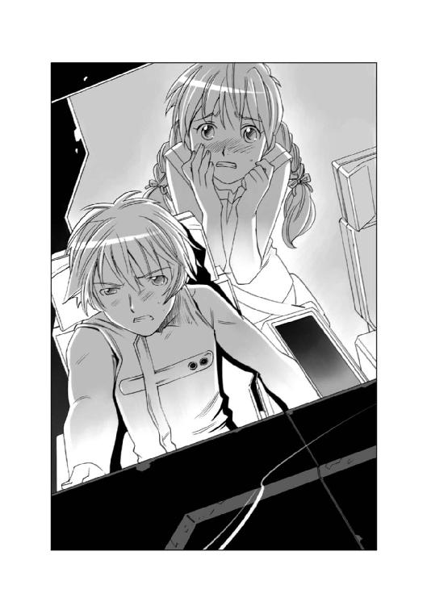
「くそ！ なんとかできないのか！ 何か方法があるはずだ！ 減速する方法が！」
ハインツは口を真一文字に結んだまま、メインモニターの航路図をにらみつけていた。
やがて歯を食いしばるような声で言った。
「......銀星号は自力でこの危機を回避できないと俺は判断する......」
ハヤトは、目を見開いてハインツを見た。
ハインツは、真剣な目でハヤトを見返して、無言でうなずいた。
視線を自分の手の中にあるコントロールレバーに戻したハヤトは、一回大きく息を吸うと静かに言った。
「そうか......お前がそう言うってことは......そうなんだな......」
そして、ハヤトは両手を握り締めて、思い切りシートのアームレストを殴りつけた。
「くそ！ 何がエースパイロットだ！ 俺には自分の船を救う力もないのか！」
ハヤトは、正面のモニターを見つめたまま、奥歯を嚙み締めるような声で、クララに告げた。
「クララ、特別救難信号を発信しろ！ 銀星号は自力航行不能状態で、亜高速航行中である旨を緊急波と汎用チャンネルで発信するんだ！」
クララは悲しそうにうなずいた。
『了解しました。救難信号を発信します......』
その通信波が飛び込んできたとき、エンデバー星系の関係者は、自分の耳を疑った。
『こちら船籍番号ＳＧ七八三六ＴＲＣ四五五、銀星運輸所属の銀星号！ エマージェンシーコード九○九を要請します！ 繰り返します、こちら船籍番号ＳＧ七八三六ＴＲＣ四五五、銀星運輸所属の銀星号！ エマージェンシーコード九○九を要請します！ 減速用の逆噴射推進機に異常発生！ 逆噴射推進ができません！ 位相ドライブによる減速では、減速は完了できません。繰り返します。銀星号の減速は不可能！ 本船は光速の四十二パーセント、秒速十二・六万キロの速度で進行中です！ 針路Ａ三六三・Ｒ四八六を惑星エンデバーに向けて進行中！ 銀星号の針路上のすべての船舶及び建造物について早急なる退避を要請します！』
クララの声が通信波に流れたとたん、エンデバー星系内の通信が、ぴたりと止まった。通信管制が行われ、エンデバー星系内で行われる船舶間の通信が制限されたのだ。
自力減速不能状態に陥った銀星号が、救難信号を発信した、という知らせは、あっという間にエンデバー星系中に広がった。
緊急周波数は、発信できないが受信はできる。そのため、この知らせは船舶航行関係者以外の人間......特にマスコミ関係者にも、ほぼダイレクトに伝わった。
大金を宝くじで引き当てたお騒がせ二人組が、手に入れた銀星号で爆薬と化した農薬を運んで惑星バレリアの麦を救った。そして、辺境で宇宙海賊に封鎖されて餓死者が出る寸前だった開拓惑星の封鎖を突破して、物資を届け窮地を救った、というニュースは、人々の記憶に新しかった。
このネームバリューとアクシデントの相乗効果をマスコミが見逃すわけがなかった。
エンデバーステーションの宇宙港から、マスコミのネット中継用の宇宙船が次々に発進し始めたその頃。
銀星号のブリッジでは、ハヤトたちと、そしてエンデバー星系内の宇宙船航行管制を行っているエンデバーコントロールの総責任者が、真剣な表情で話し合っていた。
「......というわけです。セルフクリーニング装置を使用しても、ノズルの機能は回復しませんでした。推進剤は反応炉による触媒酸化が行われなければエネルギーを生み出しません。銀星号を減速させる手立てはないものと判断しました」
コントロールの総責任者は、沈痛な面持ちで告げた。
『了解しました、他に手立てが無いものと判断し、銀星号に対して廃棄命令を発令します。速やかに船から退船してください。亜光速でこのまま航行した場合、他の施設との衝突が予測されます。大惨事を回避するために銀星号を破壊せざるを得ません』
ブリッジにいた全員が、電流に打たれたかのように、はっとした顔で通信画面を見上げた。ハヤトが、ゆっくりと聞いた。
「どのような方法で銀星号を破壊するのでしょうか？ お聞かせ願えませんか？」
コントロールの責任者は、手元にあるキーボードを操作して、通信画面の中に小さなウィンドウを開いた。
そこには、流線型の船体とそしてマクロビーム砲の砲塔を備えた大型の軍艦が映っていた。
『エンデバー星系軍の重巡航艦、タイコンデロガが、先ほど発進しました。この重巡航艦の主砲で破壊することになると思われます......』
「時間はどれくらい残っていますか？」
コントロールの責任者は、航路図を表示して、その上に一本の線を引いた。
『ここが警戒ラインです。これを越えて、次の最終破壊ラインに到達するまでの間に、主砲が発射されることになっています。警戒ラインに到達するまで約二十七分あります。星系警察の快速救難艇がもうすぐそちらに到着しますので、大至急救命艇に乗り移って、脱出してください！』
ハヤトとハインツはお互いの顔を見合わせたあとで、うなずいた。
「了解しました。お手数をかけて申し訳ありません」
コントロールの責任者は、大きく首を振った。
『君たちの心中は察するに余りある......だが、これは我々の責任なのだ......』
エンデバーコントロールの責任者はそう言うと、真剣な敬礼をハヤトたちに送った。
通信が切れるのと同時に、ハヤトは振り向いて、そこに立っていたリアンと、ミケを抱いたサイラスに向かってゆっくりと言った。
「リアン、サイラス、ミケ。すぐに私物をまとめて救命艇に乗り込むんだ！」
「わかっただよ......」
そう言ってうなずきかけたリアンの頭が途中で止まった。
顔を上げたリアンの目は真剣だった。
「ちょっと待ってくんろ、ハヤト船長......あたいらが脱出する救命艇には、当然船長さんたちも乗り込むんですよね？」
ハヤトとハインツは顔を見合わせ、小さく首を振った。
「いや、俺たちは、銀星号に残る......」
リアンとサイラス、そしてミケが同時に叫んだ。
「なんで？」「なんでですか！」「ふぎゃー」
ハインツは、メインモニターに表示されている航路図を指差して答えた。
「銀星号は十二分後に第五惑星軌道を通過して、その内側に入る。そこから先はスペースコロニーや無重力金属精錬プラントなんかが山のように浮かんでいる。航路はクリアになっているが、土壇場で何が起こるかわからない。だから最低限の針路をコントロールする人間が乗っていないとダメなんだ......それに......」
そのとき、ハインツの言葉をさえぎるようにクララが叫んだ。
『銀星号のコントロールは私が行います！ それは船舶管理用電子人格である私の責務であります！ ハヤト船長とハインツ航海長は、乗組員の方と共に脱出してください！』
ハヤトは首を振った。
「いや、そうはいかないんだクララ。俺たちはこの銀星号をなんとかして救えないか、できる限りのことをやってみるつもりだ。この銀星号には、姿勢制御用を含めて、まだ使える噴射推進ノズルが残っている。それを使って、少しでも減速できるようにがんばってみるつもりだ。この銀星号は俺たちの夢なんだ。悪あがきでもいい！ 俺たちはあきらめたくないんだ！」
そして、ハインツがクララに笑いながら話しかけた。
「クララ......俺はな、君がインストールされている基盤の在り処がわかっていれば、そいつを引っこ抜いてリアンに持たせたいくらいだ。君がインストールされている銀星号を見捨てる気にはなれないよ」
『そんな......』
口元に両手の先を当てたクララは、泣きそうな顔でハインツを見た。
そのとき、サイラスが叫んだ。
「ハヤト船長が残るなら僕も残ります！ だって......これは僕の責任です！ 僕が推進剤のチェックをやっていたら、こんなことには......」
ハヤトがぴしゃりと言った。
「確かにそれはお前の責任だ。だけどな、それに関して確認しなかった俺の責任でもあるんだ。船長というのは、この船で起きた物事のすべての責任者なんだ。だから......その責任を取るのは俺の仕事だ。お前の仕事じゃない！」
そしてハヤトは、何も言わずに立ち尽くしているリアンに言った。
「さあ、早く荷物をまとめて脱出しろ！ 時間が無いんだぞ！」
リアンは、両手の握り拳を細かく震わせ、涙の滲んだ目でハヤトをにらみつけて叫んだ。
「イヤだ！ そんな命令、聞きたくねえ！ あたいは、この銀星号の乗組員じゃねえだか？ 一緒に仕事した仲間じゃねえだか！」
ハヤトはリアンの顔を正面から見返してゆっくりと言った。
「リアン......君は仲間なんかじゃないよ......」
目を見開いたリアンの目から、大粒の涙がポロポロとこぼれ落ちた。
ハヤトはあわてて言葉を継いだ。
「あ、いや、違うんだリアン！ 俺が言いたかったのは、俺にとって君はただの仲間なんかじゃない、ってことなんだ！ ああ......くそ、うまく言えねえな、どうしてこう、俺は自分の気持ちを人にうまく伝えられないのかな......」
ハヤトはもどかしげに首を振ると、リアンに近づいて、その肩に両手を置いた。
「リアン、聞いてくれ。えーと、なんと言うか、俺にとって君は仲間以上の存在なんだ......それでな......俺たちは死ぬんじゃない。生き残るために残るんだ......」
リアンは泣きながら首を振った。
「噓だ！」
ハヤトはリアンの肩に置いた手に力を込めて言葉を続けた。
「こんなときに、噓言ってどうするんだ！ いいか、よく聞けリアン！
でも、もしかしたらダメかもしれない。そのとき、お前が俺たちと一緒に死んだら、そこで終わりだ。
あとに何も残らないんだ。
あの戦争で、俺たちの仲間はみんな死んだ。あとには何も残ってない！ だけど、たった一つだけ残ってるものがある！
俺たちの記憶だ！ 俺たちは生き残った。生き残ってあの戦いがなんだったのか、あの戦いで死んで行った仲間たちがどんな人間だったのかそれを伝えるために、きっと俺たちは生き残ったんだ。
それと同じことだよ、リアン。
お前は生きろ、生きて伝えろ、俺たちがどんな人間だったのか、銀星号とはどんな船だったのか、それを！」
リアンは泣きじゃくりながら首を振った。
「あたいは嫌だ......あたい、銀星号を降りたくない！ ここにいたい！」
「困らせないでくれよ......」
ハヤトは、微笑んだ。
その顔を見て、リアンが叫んだ。
「なんで笑う！ なんで笑えるだよ！ ハヤト！」
「なんでかな......泣きたい気持ちもあるんだけど......泣いたら喜ぶヤツがいるような気がするんだ。だから、意地でも泣くもんか！ って思うんだ。
馬鹿馬鹿しいよ、だってそんなの正直じゃない。死ぬときにええかっこしいしたって、瘦せ我慢したって、何の意味もないのかもしれない。
でもさ、それが意地なんだよ。理不尽なヤツに......他人の命なんかどうでもいい、自分さえ良けりゃいい、って思ってるヤツに......そんなヤツの言いなりになるなんて、悔しいじゃないか。
銀星号に細工したヤツは、きっと今頃笑ってるよ。
無様に泣きわめけ！ ってそう言ってるような気がするんだ。
......だから、俺たちは泣かない、わめかない、笑ってやるんだ。
お前の思いどおりになんかなるもんか！ ってね......」
リアンは何も言わなかった。ただ、じっとハヤトの顔を見て、無言で泣いた。
一呼吸ほどの沈黙のあとで、クララが静かに言った。
『時間です......』
「さあ、救命艇に急げ！」
リアンは首を振った。
「嫌だ......あたいは降りない！」
「リアン！」
リアンは、目からぽろぽろと涙を流しながら首を振った。
「これで終わりだなんて、そんなの嫌だ！ 銀星号の航海は、まだまだ続くんだわさ！ ハヤト船長の夢も、ハインツさんの夢も、サイラス君の夢も全部乗せて、もっともっと、いろんな星やいろんな空域に行って、海賊と渡り合ったり、ロストコロニーを見つけたり、いろんな冒険ができるんだわさ！ なのに......なんでこんなところであきらめなくちゃならないんよ！ あたいは降りない！ 銀星号と一緒にいる！ ここがあたいの家だ！ あたいの城だ！ あたいと、そしてみんなの夢の城だ！」
そして、リアンは右手の袖でぐい、と涙をぬぐって叫んだ。
「違う？ ねえ、あたい、間違っている？ 間違ってなんかいないよね？ 間違ってるのはハヤト船長だよね？ あたいたちは、今までどんなピンチも絶体絶命のときも、なんとかしてきたでねえか！ ここであきらめるだか？ 簡単にあきらめてしまうだか？ そんなん、ハヤト船長らしくねえだよ！」
ハヤトは、無言のまま、じっとリアンを見つめていたが、やがて、にっこり微笑んで、前に進み出た。
そして、涙目で自分を見上げるリアンの両手を持って握り締めた。
「リアン......君は頭がいい、優しくて力持ちで、そしていつだって前向きで一生懸命だ......だから......俺はそんなリアンが大好きだ......」
リアンは目を見開くと、黙ったまま口をぱくぱくと開けた。
ハヤトはリアンに向かってもう一度笑いかけると、ハインツに向かって叫んだ。
「ハインツ！ あきらめるのはまだ早い！ 考えようぜ！ 何かあるはずだ！ 推進機が使えなくたって、その代わりになるものが何かあるはずだ！ それを探せ！ あきらめるなんて選択肢は俺たちにはない！ そうだろう？」
「それはそうだが......」
ハインツが、言い返そうとした......そのとき。
サイラスが叫んだ。
「ペットボトルロケットだ！」
「ペットボトルロケット？」
怪訝な顔で聞き返したハインツの目がすぐに見開かれた。
「そうか！ あれだ！ コンテナだ！ コンテナに穴を開ければ、加圧された水が噴出する！ 質量は推進剤の比じゃない！」
そしてハインツはクララに向かって叫んだ。
「残り時間は？」
『警戒ラインまであと五分です！』
ハインツはハヤトとリアンを見て言った。
「作業服で宇宙空間に出て、コンテナに穴を開けるんだ！ どこでもいい！ 銀星号の針路さえ変えることができれば、銀星号は助かる！」
ハヤトとリアンは、顔を見合わせてから力強くうなずいた。
「わかった、やってみる！」
三分後、銀星号のエアロックの中にリアンを両手で抱きしめるようにして立つハヤトの姿があった。
上気したような表情で自分を見上げるリアンを見て、ハヤトは微笑んだ。
『前にも、こんな風にリアンと作業したっけな......どっかに飛んでいかないようにしっかりつかまっていろ』
『はい！』
リアンが、こくんとうなずくと、ゆっくりと内扉が閉まり、やがて気密作業服が膨らみはじめた。
『そろそろ外扉が開くぞ』
ハヤトがそう言ったとき、ヘルメットの中にハインツの声がした。
『大気排出完了！ 外扉を開ける！ 注意しろ！』
足元から動力音が伝わってくるのと同時にゆっくりと扉が開き始めた。
ハヤトたちの目の前に、漆黒の空間にちりばめられた星々の海が広がっていた。
『宇宙空間は、遠近感がつかめない。気をつけてくれ、行くぞ！』
ハヤトはそう言うと、左手でリアンの手をつかみ、右手を腰にあるバーニアコントローラーに添えて宇宙空間に飛び出した。
ブリッジの後方に連なるコンテナまで、ガイドロープを引いて二人はゆっくりと飛んだ。
コンテナに取り付いたハヤトは、ハインツに指示を出した。
『右の海水循環用の加圧コンテナに取り付いた。左の生簀コンテナとの循環用パイプを閉鎖して、ポンプを全開にしてくれ、できる限り圧力を上げるんだ！』
ヘルメットのインカムからハインツの声が聞こえてきた。
『了解！ すでに生簀コンテナとの循環パイプは閉鎖した。ポンプと圧縮コンプレッサーはフル回転させている！ 加圧コンテナの水圧は計算上の許容値を超えた、爆発寸前だ、気をつけろ！』
『了解！ ちゃんとガイドロープで固定した、二人ともだ......これからリアンと二人でコンテナの前方隔壁に穴を開ける。推力のコントロールはできない。減速できるかどうかは運任せだ、しっかりつかまってろよ！』
『ああ、そっちこそ！』
ハヤトはハインツとの通話を切ると、リアンに向き直った。
『よし！ コンテナに穴を開けるぞ！』
『ギンイロセナガマグロ......死んじゃいますね......』
『ああ、せっかくここまで運んできたのにな......でも、水流が無くなっただけだから、何匹かは生き延びてくれるかもしれない......俺たちも銀星号と一緒に生き延びようぜ！』
『はい！』
リアンは、こくんとうなずくと、抱えていたレーザー溶断機を構えた。
『気をつけろ、穴が開くと同時に噴き出す水の質量はハンパじゃないぞ。身体に食らったら文句なしに吹っ飛ぶからな！』
『はい、わかってます......では、行きます！』
ハヤトは溶断機を構えたリアンを後ろから支えるようにがっちり抱きしめた。
溶断機のスイッチが入ると、まばゆい光がコンテナの表面ではじけた。
ビームの当たっている部分の硬化セカンダリュームが溶けてガス化しはじめたのがわかる。
その溶断ポイントを見つめながら、リアンは、自分の身体を支えてくれているハヤトの腕を意識していた。
......ああ、これがコンテナじゃなくてウェディングケーキだったら......。
思わずそんなことを思い浮かべた自分を叱るようにリアンが小さく首を振ったそのとき。
白い煙のようなものが、溶断ポイントからふわっと立ち上がった。
......あれ？ この煙は？
次の瞬間。
コンテナの隔壁が爆発した。
内部にかかっていた水圧によって、隔壁が一気に破断したのだ。
爆発的に宇宙空間に向かって噴出した大量の海水によって、銀星号に与えられた慣性は、銀星号を文字どおり木の葉のように振り回した。
結合金具で連結した状態のまま、宇宙空間に放り出されたリアンとハヤトは、ぴんと張ったガイドロープの先で振り子のように激しく振り回された。
気を失いかけるほどのＧの中で、ハヤトは自分の身体に、がくん！ と衝撃が走ったのに気がついた。
それは、自分たちを支えていたガイドロープの一本が切れた、その衝撃だった。
......くそ！ この慣性を一本のロープで支えるのは無理だ！
......どうする？ あのロープが切れたら二人とも宇宙空間に放り出されちまう！
ショックで失神していたリアンの意識が戻ったのはそのときだった。
ぼんやりとした視界の中に見えたのは、作業服のヘルメットのバイザーごしにリアンを覗き込むハヤトの顔だった。
......ああ、ハヤト船長......無事だったんだね。
霞がかかったような視界の中で、ハヤトが微笑んだ。
そして、何かをつぶやくように口が動いた。
ヘルメットのヘッドホンからは、何も聞こえなかった。
急激に振り回されたリアンの耳に聞こえているのは、ジーンという耳鳴りだけだった。
そのとき、リアンの身体に、カチャ、という金属音が伝わってきた。それは骨に伝わってきた伝導音だった。
......え？ 今の音、何？
次の瞬間、リアンの目に映ったのは、自分から離れていくハヤトの姿だった。
......え？ 何？ どうしたの？ なんでハヤト船長が離れていくの？ え？ うそ、ガイドロープは？
ハヤトの気密作業服は見る見るうちに小さくなっていく。
その作業服に、ロープはついていなかった。
「ハヤト船長！ 待って！ うそ！ ねえ！ どうなってるの？ なんで？」
パニックに陥ったリアンをガイドロープで曳航したまま銀星号は大きく進路を外れ、進み続けていた。
パニックを起こして泣きじゃくるリアンから、ハヤトが宇宙空間に放り出されたことを知ったハインツは、即座に銀星号から救難ビーコンを射出した。
「......くそ、銀星号が助かったって、お前が助かんなけりゃ意味がねえじゃねえか！ 馬鹿野郎！」
コンソールを両手で叩いてそう叫んだハインツは、顔を上げてクララに聞いた。
「銀星号の針路と速度はどうなっている？ 減速は成功したのか？」
クララは、難しい顔で答えた。
『規定速度の二倍程度にまで減速に成功しました。しかし、針路が問題です。エンデバーステーションなどの人口密集地域を外れることはできましたが、銀星号がこのまま進みますと、別のラグランジュポイントに向かって進むことになります。そちらの警戒ラインに突入するのは十二分後です』
ハインツは、小さくため息をついた。
「......少なくとも、多くの人に迷惑をかけることだけは避けられるってわけか......不幸中の幸いと思うべきかもしれないな」
そのとき、クララが目を見開いて叫んだ。
『無数の小型の飛行物体が前方にあります！ デブリ......いえ、違います......小型宇宙船です！ 小型宇宙船の群れが針路前方に展開しています！』
「なんだって？」
『今、メインスクリーンに映像を表示します！』
メインスクリーンを見上げたハインツが眉をひそめた。
「......なんだ？ 何が浮かんでいるんだ？」
レーダースクリーンに無数の光点が映るのと同時に、通信機に男の声が飛び込んできた。
『銀星号！ 銀星号！ おいハヤト！ 聞こえるか！ 聞こえたら返事しろ！』
通信モニターに、作業服を着た中年の男が映った。
『ああ、あんたがハヤトの相棒のハインツさんだな。ハヤトはどうした？』
「......先ほどの減速作業の際に宇宙空間に放り出されました......」
中年の男は目を見開いた。
『なんだって？ さっき、銀星号が滅茶苦茶な動きをしたけど、あの時か！』
「ええ、減速するために加圧された積荷の海水を放出したんです。それをするには船外作業するしかなくて......」
中年男はうなずいた。
『わかった、俺たちに任せろ！ 仲間の半分を捜索に回す！ 残りの半分で俺たちが代わりに減速して針路を変えてやる』
ハインツは目を見開いた。
「そんな！ 無茶です！ 減速作業船はコンテナ一個しか減速できません！ この銀星号とコンテナ一個とじゃあ質量が比べ物になりません！」
『馬鹿野郎、そんなこたあ言われなくたってわかっている！ 誰も減速作業船一隻で止めようとは言ってねえ！ 見ろ、俺たちの後ろを！』
そこに、船の群れがあった。
コンテナを運ぶ運搬船、推進剤を運ぶ小型タンカー、停泊中の宇宙船と桟橋を結ぶ連絡船。種々雑多な薄汚れた作業船が、びっしりと集まって、銀星号の速度に合わせるために一斉に加速を開始していた。
『エンデバー星系の作業船が全部、お前らのためにここに来ている！ 俺たちが、よってたかって銀星号にしがみついてでも止めてやる！ 少々荒っぽいから、ノーマルスーツを着ていたほうがいいかもしれねえぞ！』
「でも......危険です！ 星系軍の重巡航艦が、銀星号に狙いを定めているんです！ あと......十二分で、警戒ラインを越えます、警戒ラインを越えれば巡航艦は砲撃してくるんです！」
監督は怒ったように怒鳴った。
『うるせえ！ 何もかも承知の上だ！ ゴタクは後回しだ！ とにかくお前らを止めてやる！ 野郎ども行くぞ！ イカダ乗りの根性見せてやれ！』
監督の通信が切れるのと同時に、加速して追いついてきた減速作業船が、吸着アームを後部に連結しているコンテナに伸ばして抱きつく、ごごん！ という音と振動が伝わってきた。
そして、一瞬間を置いて、今度は何かが無数に銀星号の外壁に当たるゴンゴン、という鈍い響きが伝わってきた。
「何の音だ？」
ハインツは、そうつぶやくとモニターを船体外モニターに切り替えた。
そこには、後ろにリボン状のロープを引いた小型の円筒形の物体が外壁に張り付いている映像が映っていた。
それは、宇宙用作業船が、大型のデブリを回収したり、資材を牽引したりする際に使うアンカー吸着ボルトだった。
『減速開始！』
監督の声が飛ぶのと同時に、コンテナに抱きついた減速作業船と、吸着ボルトから伸びたワイヤの先に作業アームを引っ掛けた作業船の群れが一斉に逆噴射を始めた。
銀星号の船体に、負荷が掛かる、異様な音が響き渡った。
ハインツが、事の次第が吞み込めずに呆然と立ち尽くしていたサイラスに振り返って叫んだ。
「何をやってるんだ！ 早くノーマルスーツを着用しろ」
「は、はい！」
ばたばたとブリッジを出て行くサイラスを見送ったあとで、ハインツはクララに聞いた。
「どうなると思う？」
『問題は、この質量の差だと思われます。すぐには減速できるものではありません』
「今の減速レベルでは、ギリギリのところだな......俺たちの生殺与奪の権利は星系軍が握ってることに変わりはないってことか」
計算画面を見て数値を確認したハインツは、通信画面に向かって呼びかけた。
「警戒ラインを越えるまであと二分を切りました。もう、いつ主砲を発射されても文句を言えません。無理です、離れてください！」
クララの言葉のとおりだった。
質量の差は、十数隻程度の作業船の逆噴射程度の負荷で相殺されるものではなかった。
最初に取り付いた作業船は推進剤を使い尽くし、次々に離れて行った。
しかし、一隻が離れれば、代わりの船がその後を継いだ。
吸着ボルトが外れれば、次の新しいボルトが打たれ、ワイヤが切れれば新しいワイヤが張られた。
周りにアリのようにたかった作業船をバラバラと振り撒くように、銀星号は進み続けていた。
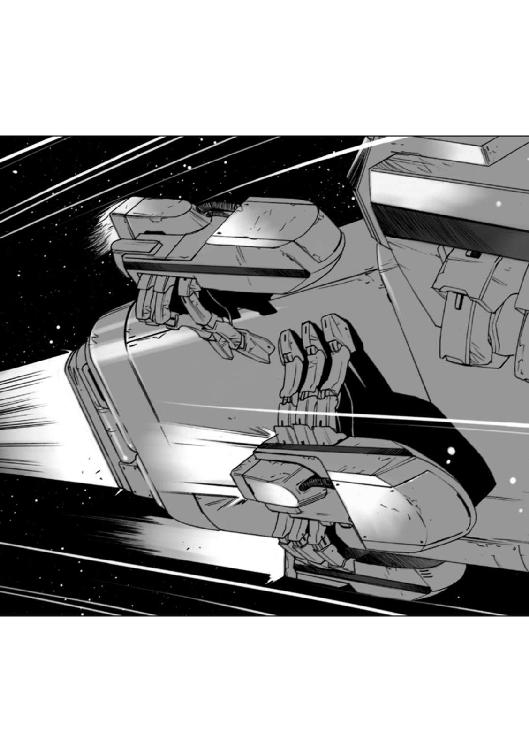
そして、ついに銀星号は警戒ラインを越えた。
ハインツが通信画面に向かって叫んだ。
「もう無駄だ！ やめてくれ！ 危険だ！ 星系軍がもうじき主砲を発射する！ 作業艇のみんなは早く離れろ！ もういい、もう充分だ！ 銀星号と運命を共にするのは俺たちだけでいい！ 俺たちはあの戦争で死ぬはずだった人間だ！ 死んでも惜しくない人間なんだ！ 俺たちのためにあんたらが死ぬことはないんだ！」
通信画面に映った監督は咆えた。
『ふざけるな！ 無駄だなんて言うんじゃねえ！ いいか、お前らは何もないところから始めて、その宇宙船を手に入れた！ 運もあっただろう、運がすべてだって言うヤツもいる......だけど、そんなことはどうでもいいんだ！
お前らは誰も引きずり降ろしちゃいない！ 誰も不幸にしちゃいない！ 誰も騙してない！ でも、お前らは成功しつつあるじゃねえか！ 正々堂々胸張って生きてるじゃねえか！
お前らは夢だ！ 俺たちの夢だ！ お前らを死なせることだけはしたくねえんだ！
だから......だからいいか。無駄だなんて言うんじゃねえ！
死んだって、口が裂けたって、そんなことを言うんじゃねえ！ わかったか！』
このときの、監督とハインツのやり取りを、エンデバー星系に暮らすほとんどの人がリアルタイムで聞いていた。
マスコミの中の一社が、緊急通話の音声を、そのままリアルタイムで流していたのだ。
通信内容をそのまま流すのは違法行為である。だが、この時マスコミが流した通信波は音声のみであり、これは違法と合法のギリギリのところを突いたものだった。
エンデバーステーションの一等地に建つフュージリアグループ支部の建物の最上階の特別室で、一人の男が、ニュース映像の中から聞こえてきた監督の会話を、冷ややかな表情を浮かべて聞いていた。
「ふん......悪あがきをしおって。だが、それも無駄なことだ。重巡航艦の主砲のビームで宇宙のゴミになるがいい」
シザムはそうつぶやくと、通信画面に秘書官を呼び出して告げた。
「タイコンデロガの艦長に繫いでくれ、フュージリアグループの最上級コードを使用すれば軍用通信でも割り込めるはずだ」
『かしこまりました......割り込み終了......お繫ぎします』
秘書官の姿が消えるのと同時に、通信画面に、大佐の階級章をつけた帝国軍の制服を着た五十代の男が浮かび上がった。
戸惑ったような表情を浮かべた男は、通信画面の横に点滅しているフュージリアグループの幹部のサインに気がついたのだろう、納得したように小さくうなずいた。
シザムは、悪びれる様子もなくそのまま話しかけた。
「君が、このタイコンデロガの艦長かね？ 私はフュージリアグループのシザムだ。知っていると思うが、エルキュール侯爵の直系の人間で、フュージリアグループの総務を担当している。軍に対して直接の指揮権は無いが、オブザーバーとして強い影響力がある、ということは理解しているな？」
大佐の階級章をつけた軍人は、内心で感じているであろう怒りを、おくびにも出さないポーカーフェイスのままで敬礼して答えた。
『タイコンデロガの艦長、ガンドゥ大佐であります。シザム閣下のことは、よく存じております......で、フュージリアグループの幹部の方が、このような巡航艦に、どのようなご用件でございましょう？』
シザムは、表情も変えずに言い放った。
「君の艦は今、暴走状態にある貨物船を主砲で破壊するという要請を受けているはずだ。あの暴走貨物船を放置すれば、エンデバーステーションを含む多くの施設が危険に晒される。一刻も早く破壊してもらいたい」
艦長の表情は変わらなかったが、声には明らかに怪訝な色が滲んでいた。
『これはこれは......フュージリアグループの幹部である御方が、あのような小さな貨物船のことにまで口出しをするとは意外ですな......』
シザムは不機嫌そうに答えた。
「人の上に立つ者として、安全と治安の維持に関して関心が高いのは当然のことだ。とにかく、あの船はすでに警戒ラインを越えた、直ちに破壊してもらいたい！」
艦長は表情を顔にださずに答えた。
『ロックオンは終了し、現在追尾中ですが、ご覧のとおり現在作業船が減速作業を実施中です。最終破壊ラインに到達するまでに、タグボートでコントロール可能な規定速度まで減速できる可能性が出てきましたので、現在待機中です。あの状態では、周囲の作業船ごと破壊することになりますので......』
シザムの顔色が変わった。
「何を馬鹿なことを言っている！ 危険を見過ごすと言うのか！ 貴様には危機管理能力が無い！ 私が命令する！ かまわん！ 作業船など、いくらでも代わりがある！ 一緒に吹き飛ばすんだ！」
そのとき、艦長の後ろにいた巡航艦のオペレーターが報告する声が聞こえた。
『目標の減速を確認しました！ このまま減速を続ければ、最終破壊ラインに到達する直前に、規定速度まで減速できるものと思われます！』
艦長は、ゆっくりとシザムに向き直った。
『お聞きになりましたか？ 私は、今しばらく様子を見たほうがよろしいと判断いたします』
シザムは思わず艦長を怒鳴りつけた。
「貴様は私の命令に逆らうのか！ ただではすまんぞ！」
この、シザムの言葉には、さすがにポーカーフェイスを続けることはできなかったのだろう、艦長は初めて怒気をあらわにして言い返した。
『私は、この船をお預かりする身です！ この船が航行できるのは、あなたが吹き飛ばせ、と命じた作業船のおかげなのですぞ！ 艦長と士官と水兵だけで、この巡航艦が動いているとでもお考えですか？
推進剤を運ぶタンカー、生活必需品を運ぶランチ、整備船、点検船、動力供給船......そういった雑多な多くの船と、それを扱う作業員の支えがあって初めて、巡航艦は戦力となりえるのですぞ！ その、作業員たちを吹き飛ばしておいて、この船がまともな整備や補給を受けられるとお考えですか？ はっきりとお断りする！ 部外者はさっさと帰ってもらおうか！』
シザムは食いしばった歯の間から低い声で呪詛の言葉を吐き出した。
「覚えておれ！ 後悔させてやるぞ！」
艦長は、そのシザムの言葉に、きっぱりと言い返した。
『ええ、なんとでもしてくださって結構です』
シザムは言葉にならないうなり声を上げて、通信を切った。
そのとき、ネットニュースの画面に、速報が流れた。
『銀星号、減速に成功！』
そのニュースが流れたとたん、エンデバー星系の中を航行していた宇宙船のすべての通信波がビジー状態になった。
「やったぞ！」
「すげえ！ あいつらが止めたんだ！」
「やるじゃねえか！ 監督！ あんたは男だ！」
「今度宇宙港に着いたら、一杯おごらせてくれ！」
何百という祝福のメッセージが飛び交う中を、あちらこちらがへこんだ傷だらけの銀星号が規定速度のままゆっくりと慣性航行を続けていた。
パイロット席の背もたれに体重を預けたハインツがヘルメットを外して、大きく息を吐き出したとき、クララの声がした。
『エアロック内に、リアンさんを収納しました。生体反応に異常はありません......無事です』
「そうか、良かった......」
ハインツはそう答えたあとで、ブリッジの前に広がる宇宙空間を見てつぶやいた。
「ハヤト......銀星号は守ったぞ......リアンも無事だ......だから、いいか......生きて帰って来い！ 絶対だぞ！」
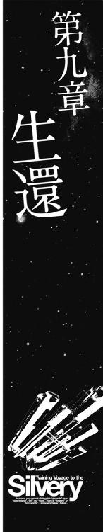
銀星号は、予定より十時間遅れで、エンデバー宇宙港に入港した。
そして、漂流していたハヤトが発見されて救助されたのはそれからさらに二時間後だった。二時間というのは、気密作業服の生命維持装置が作動し続けるギリギリの時間であり、もし、あと三十分遅ければ、ハヤトは低酸素症を起こしていただろう。
ハインツがとっさに射出したビーコンが無ければ捜索が遅れ、ハヤトは助からなかったに違いない。
残ったもう片方の生簀コンテナの中のギンイロセナガマグロは、四割が死亡、もしくは仮死状態に近い状態にまで生体機能が低下していたが、六割は健康な状態だった。
六割の生存率というのは、今までの生簀コンテナによる活魚輸送に比べると、比べ物にならないほど良い歩留まりだったが、銀星運輸はエクセレント水産との契約を履行できなかったために違約金が生じることとなった。
だが、ハインツは、ジェット水流コンテナのパテントをエクセレント水産に譲り渡すことで、この問題を回避した。
仕事上の問題と、マスコミの対応などをすべて片付けたハインツは、この日、エンデバーステーション中央病院に入院中のハヤトの病室を訪れていた。
「医師の話では、脳とかに異常は無い。振り回されたときの打撲の痛みはしばらく続くだろうが、日常生活に差し障りは無いそうだ......」
ハインツはエンデバーステーションの病院のベッドに横になったハヤトに、スクリーンに映し出した医療用スキャン画面を見せながら言葉を続けた。
「お前は病院に入院していて正解だよ。あのあとのマスコミの取材攻勢はすごかったからな。インタビュー、記者会見、ワイドショー、の三本セットをいくつ繰り返して受けたかわかりゃしない」
ハヤトは肩をすくめた。
「それを聞いたら、退院したくなくなったな......」
「まあ、しばらく休養しろよ、当分仕事は請け負わないことにしたからさ」
ハインツの言葉を聞いたハヤトは不安そうな顔になった。
「会社のほうは大丈夫なのか？ 収入が無いと回転資金が足りなくなるんじゃないのか？」
「まあな、でも、以前請け負った仕事の報酬がそろそろ振り込まれ始める頃だ。そうすれば、当座の回転資金には困らないし、それより何より、推進剤とかの消費財が現金払いでなくても良くなったんだ。金融機関の格付けが上がったのさ」
そして、ハインツは腕につけた汎用端末で時間を確認するとハヤトに笑いかけた。
「さて、そろそろリアンがお前の世話に来る頃だから、俺はさっさと退散するか。邪魔しちゃ悪いからな」
「な、なんだよそれ......」
赤い顔になったハヤトを見て、ハインツはもう一度笑った。
「どうした？ 急に口が回らなくなったぞ。酸素欠乏症は無いって医師は言ったけど、診断ミスかな？」
「そんなんじゃねえよ。俺はただ、別にリアンが見舞いに来たからといってだな......」
「ああ、わかったわかった。みなまで言うな、お前の病気は病院でも温泉でも治らん。それを治すのはお前の素直な心だけだ......」
そして、ハインツはちょっと真面目な顔になった。
「お前もリアンも、まだ若いし、答えを出すには早いのかもしれないけどな......覚悟は決めておけ。リアンの立場で考えてみろよ。お前は自分を犠牲にしてまで助けてくれた相手なんだぞ。お前はリアンの人生も背負っちまったに等しいんだ」
「わかってる......俺は後悔しているわけじゃない......ただ、そういうのに......女の子の扱いに慣れてないだけだ......なんせ縁が無かったから......」
頭を搔くハヤトを見て、ハインツは笑いながらうなずいた。
「まあ、おいおい慣れていきゃいいさ、リアンだってお前とどっこいどっこいだ。お前らはお似合いだと俺は思うぜ......さて、俺は銀星号に戻るとするか」
そして、ベッドサイドに置かれた椅子から立ち上がったハインツは、病室の出口でハヤトに向かって小さく手を振ると、そのままドアを閉めて廊下に出た。
そして、ドアの向こうで花と果物の籠を抱えて下を向いて立っていたリアンの肩を、ぽん、と叩いた。
「......というわけだ、リアン。ハヤトの世話は任せた」
「......はい」
下を向いたままリアンは小声で答えた。
耳の先が真っ赤になっていた。
病院を出たハインツはタクシーに乗り込むと、銀星号が停泊している修理ドックへと向かった。
ゲートで身分証明のための個人認証を終えて、ドックの中に入ったハインツは、銀星号に近づきながら懐に入れてあった汎用端末を取り出した。
端末の上に立ち上がったクララのホログラムが、優雅に一礼した。
『おかえりなさいませ』
「やあ、クララ、何か変わったことはなかったかい？」
『これといって特に何も......あ、そうそう、先ほどからミケ様がお待ちです』
「ミケが？」
クララは心配そうな顔で声を潜めた。
『かなり落ち込んでいらっしゃいますけど......理由はよくわかりません』
「そうか、わかった......今、下の通路に来た、エアロックを開けてくれ」
『かしこまりました』
クララの声が終わるのと同時に、タラップの上の方で気密ドアが開く音がした。
ハインツがブリッジに足を踏み入れるのと、ミケが鳴くのは同時だった。
「ふなななー」
ハインツは正面のメインモニターを見上げた。そこにはこんな文字が打たれていた。
『私は、とんでもないミスを犯していた。通信担当員として失格だ。私をクビにしてほしい』
「なんだ？ どういう意味だ？」
ミケは思いつめた表情でキーボードをパコパコ叩いた。
『先ほど、受信メールを確認していて判明したのだ。私は重要な情報を見落としていた。これに気がついていれば、今回のトラブルを回避できたかもしれないのだ』
ハインツの目が細くなった。
「それは......どういう意味だ？」
『とにかく、このメールを読んでいただきたい』
ミケの文字が打たれたあとで、メインモニターの中に一通の個人向けメールが表示された。無言で文字を追っていたハインツの目が見開かれた。
「ああ、そうか、くそ！ これがわかっていれば！」
メールの文面の下にミケの打った文字が流れた。
『私の無能さのために、銀星号の方々に甚大なご迷惑をかけたことを深くお詫びする。私には、責任を果たすだけの能力が無いことが判明した。私は銀星号を去るつもりだ』
その文字を読んだハインツは、つかつかとミケに近づいた。そして、無言のままミケの首根っこの後ろをつかんで持ち上げた。
「ふぎゃー！」
「何を偉そうに言ってやがるんだ、お前なんか化け猫じゃなくてボケ猫だ！ あのな、勘違いしないように言っておくぞ。ミスに気がついて、それを反省するってのも能力なんだ！ お前は能力が無いんじゃない！ 単に経験が無いだけだ！ 経験と学習もしないで、最初から百パーセントなんでもできるつもりだったのか！ うぬぼれんじゃねえぞ、このボケ猫が！」
そして、ハインツはミケを、ぽん、と座席に投げて、言葉を続けた。
「ミスしたら、逃げればチャラになるとでも思ってるのか？ そうはいくもんか！ お前はこの先もずっと銀星号に乗って、そこに座って通信士をやるんだ！ 経験を積んで学習して、ミスをしなくなるまで、お前を逃がさないからな、いいか、わかったか！」
がっくりと肩を落としたミケは、しょげこんだ声を出した。
「ふなー」
「わかったらサイラスのところに帰れ、きっと心配しているぞ」
「みゃう......」
ミケは小さく頭を下げると、とぼとぼとブリッジから出て行った。
その後ろ姿を見送ったクララが、つぶやくように言った。
『なんか......可哀想ですね』
「まあな、可哀想だけど......逃げる癖をつけると、何でも逃げればいいと考えるようになっちゃうからな......」
ハインツはそう言うと、自分の席に座って、パーソナルモニターに、さっきミケが表示していたギリアムからのメールを表示した。
......ギリアムか。
確かに、敵に回せば厄介な人かもしれないけど、味方にすれば、心強そうな人だな。フュージリアグループから抜けて、敵に回る決心がついたって言ってるけど、信用できるのかな？
ハインツは、数分間身じろぎもせずにじっと考え込んでいた。
そして、大きく息を吐いてからつぶやいた。
「よし、信じよう。疑っているだけじゃ前に進めない！」
ハインツは、顔を上げると、クララを呼んだ。
「クララ、悪いけどこのギリアムって人のところに通信を繫いでくれ」
『了解しました！』
エンデバーステーションにあるビジネスホテルの一室にある汎用通信モニターの前に座って、モニターに映る帝国軍の士官の制服を着た三十代の男と笑いながら話をしていたギリアムは、画面の右下に割り込み通話を知らせるアイコンが瞬いたのに気がついた。
キーボードを叩いて、着信相手を確認したギリアムは、ちょっと驚いたように目を見開いた。
『どうしたね？』
「あ、いや、例の......銀星号から通信が来たんだ。ハインツという男だよ」
通信モニターの中の士官は、ああそうか、という顔になった。
『あの、一○九戦闘部隊の生き残りの片割れか。帝国軍の士官学校の教官資格に、貴族の身分を有するもの、などという下らぬ規定が無ければ、もう片方のハヤト少尉ともども教官に任用できたのだがな......このあたりも改革しなければなるまい......君にも帝国軍の情報管理と作戦策定課程の教官になってもらいたいところなんだが......』
ギリアムは笑いながら首を振った。
「いや、俺は軍とか政府機関とかそういった場所はどうにも性に合わなくてね......悪いが遠慮させてもらうよ。オブザーバーとして関与するにはやぶさかではないがね」
『そう言うと思ったよ......猫の件はこっちで根回しをしておく。じゃあな』
士官の男は、そう言うと、にやっと笑ってモニターから消えた。
ギリアムがキーを押すと、入れ替わるようにして、モニターにハインツの姿が映った。
ハインツが何かを言おうとするその前に、ギリアムがにっこり笑って言った。
「初めまして、ギリアムと申します」
『初めまして、銀星号の航海長をやっています、ハインツと申します......このたびは貴重な情報ありがとうございました』
ギリアムは慌てたように顔の前で両手を振った。
「いやいや、とんでもない！ 時機を失した情報などに価値はありません。我々は結局君たちになにもできなかったのだから......」
『それは単なるタイミングの問題です。私は、その情報を我々に与える、というあなたの意志に対してお礼を申したのですよ』
「ええ、まあ、意志に関しては、君の言うとおりだ。我々......つまり私と......こちらのヒルダ博士......」
ギリアムは、そこで言葉を切ると、身体をずらして、後ろにいた二十代半ばの女性をハインツに見せた。
いきなり紹介されたヒルダ博士は、びっくりしたように目を見開き、あわてて頭を下げた。
「ど、どうも、初めまして......あなたの船に厄介になっている、知性化猫の育ての親のヒルデガルドと申します......知性化研究所の所長をやっておりました。よろしくお願いします」
『ああ、どうも、よろしく』
ハインツと挨拶を交わしたあとで、ヒルダ博士は恥ずかしそうな顔でギリアムをにらむと、小声で言った。
「いきなり紹介しないでよ！」
「まあ、そう言うな、包み隠さず話しちゃったほうがいいんだよ、こういうときは」
「女性には、それなりに心の準備が必要なの！ まったく......肝心なことは何も知らないんだから......」
ヒルダ博士は、モニター画面の中から興味深そうにこっちを見ているハインツに気がついたのだろう。赤い顔になって後ろに引っ込んだ。
ヒルダ博士と交替するようにモニターの前に戻ったギリアムは、小さく咳払いをすると、話し始めた。
「ええと、挨拶が終わったので話を戻そう。つまりだ、我々はフュージリアグループとは別行動を取ることに決めたということだな......いや、別行動というのは言葉が弱いな。要するにフュージリアグループの敵に回ることに決めたんだ」
ハインツはにやっと笑って見せた。
『敵の敵は味方、というわけですか？』
ギリアムは平然とした表情でうなずいた。
「そのとおり。我々の敵は強大だ。ここは一つ協力して事に当たろうではないか、というわけさ......」
『確かにおっしゃることはもっともですが、フュージリアグループの母体であるエルキュール侯爵家は、マルス家と縁戚にある有名門閥貴族ですよ。個人で戦うには、いささか荷が勝ちすぎやしませんか？』
探るように聞いたハインツの言葉に、ギリアムは嬉しそうにうなずいた。
「いやあ、君のような頭の回転の速い人間と会話をするのは楽しいね。こっちの言いたいことを全部読み取ってくれる......」
ギリアムはそこで言葉を切ると、少し真剣な目になって、ハインツに聞いた。
「そこで君に質問だ。シザムとフュージリアグループが、今回君たちの銀星号にやったようなこと......つまり犯罪以外のなにものでもないことを好き勝手にやれる理由は何だと思うね？」
『あいつがエルキュール侯の血縁だからですね......エルキュール侯爵家とフュージリアグループは同じカードの裏と表、そしてエンデバー星系はエルキュール侯の領地......封建領主の権力は領地では無制限に等しい......』
ギリアムはうなずいた。
「そのとおり。つまり、シザムは権力者の後ろ楯があるから、好き勝手なことができるわけだ。でも、もしも俺たちの後ろに、エルキュール侯爵家よりも強い権力を持っている存在がいたら、シザムは手を出してくると思うかい？......そうだな、こう考えてくれればわかりやすいかな。街を歩いていたら、チンピラが因縁をつけて殴りかかってきたとする。そのときに警察署に逃げ込んだら、チンピラはそこまで追いかけてくるかな？」
後ろでギリアムの言葉を聞いていたヒルダ博士は目を丸くした。
「まさか......あなた......」
ギリアムは、後ろにいたヒルダ博士に振り向いてうなずいた。
「そう、そのまさかだよ。フュージリアグループが手を出せない、つまりはエルキュール侯爵家よりも強い存在......帝国中央政府に我々の後ろ楯になってもらえばいい、というわけだ」
ハインツは、興味深そうに聞いた。
『あなたは、帝国中央政府の要人とかに知り合いがいらっしゃるのですか？』
「当てはある。調査エージェントをやっていると、治安情報を扱う連中に、なにかと知り合いができるんだ。それに、親父に頼めばなんとか上層部と繫ぎはつくんじゃないかと思う......一応は貴族だしね」
ギリアムが、さらっと口にした言葉を聞いて、驚いたのはハインツだけではなかった。
「貴族ですって!?」
思わず叫んだヒルダ博士を見て、ギリアムは表情も変えずにうなずいた。
「ああ、言っていなかったっけ？ 俺のフルネームは、ギリアム・テリー・フォン・ガーナッシュ......こう見えても一応はガーナッシュ男爵家の息子なんだぜ。もっとも男爵家と言っても領地も何も無い、身分だけの貧乏貴族で、親父は帝国中央政府の下級公務員さ。暮らし向きは平民と変わんないよ......親父とは、ここしばらく話してないけど、貴族は貴族だから、それなりにチャンネルはあるはずだ、頼んでみる価値はあるな......」
屈託の無い顔で笑うギリアムを見て、ヒルダは心の中でため息をついた。
......本当に、この人には驚かされるわね。
頭の回転は速いし、人の心理を読むことにかけては天才的だし、おまけに貴族の血筋となれば、天下無敵だわ。もし、この人が野心家だったら、きっと今頃、名が知られた人間になっていたかもしれないわ。
......でも、この人の心の中には野心ってものがカケラも無い。
他人を蹴落としたり、引きずりおろしたりしてでも、人の上に立とうとか、権力を握ってそれを振り回そうなんて欲望が無いか、あっても普通の人よりはるかに少ないんだわ。
頭がいい人って、どこかに他人を小馬鹿にしたり、狡猾な部分があるんだけど、この人は、そういった部分も持ってない......こんな人、ちょっといないんじゃないかしら。
この人の将来には、どう考えてもお金とか贅沢とか地位とか名誉とか、そういった世間一般にいうところのセレブな生活とは無縁な暮らしが待っていそうだけど、そんなものとは引き換えにならないくらい、楽しい生活が待っているような気がするわ。
なんとなく、毎朝気持ちよく起きて、気持ちよい空気を吸って、気持ちよく生きていけそうな、そんな生活がね......。
じっと見られていることに気がついたのだろう。ギリアムが怪訝な顔で聞いた。
「どうしたんだ？ 俺の顔に何かついているのか？」
「ううん、なんでもないわ。私は運がいいなって思ってただけよ」
「運がいい？」
「そうよ、私は今、運命の神様に感謝してたの......」
ギリアムは小さく肩をすくめると、ハインツに向き直った。
「......ついては、君の船に厄介になっている知性化猫の素体六号を、我々の下に戻していただけないだろうか？」
『どうするおつもりですか？ 彼は......今ではミケと名乗っておりますが......私たち銀星号の仲間であって、ペットでも所有物でもありません。もし、交渉をしたければ、彼と直接お話しください』
少し怒ったような口調で答えたハインツを見て、ギリアムはあわてて頭を下げた。
「あ、いや、彼を......ミケだっけ？ 所有物として考えていたわけではない。君も知ってのとおり、ミケ君は、フュージリアグループの手によって、スパイとしてこの世に生まれた存在だ。このまま君の船に乗せておけば、君たちとミケ君はフュージリアグループから命を狙われ続けるだろう。それは君たちにとっても、ミケ君にとっても幸せな生き方ではない。
我々はミケ君とそして彼の彼女であるもう一匹の知性化猫に、安全な庇護者の下で平穏な生活を送ることのできる環境を与えたいと思っているんだ......」
ハインツは、にやっと笑った。
『あなたの作戦がどういうものか、大体見当がつきました。でも、それを決めるのはやはり私ではありません。ミケには自分の人生を決める権利があります......帝星ブックスは遠いですしね......』
「いやあ、君は楽しいな。君のような人間と、もっと早く知り合いになりたかったな......」
ハインツの言葉を聞いたギリアムは嬉しそうに笑った。
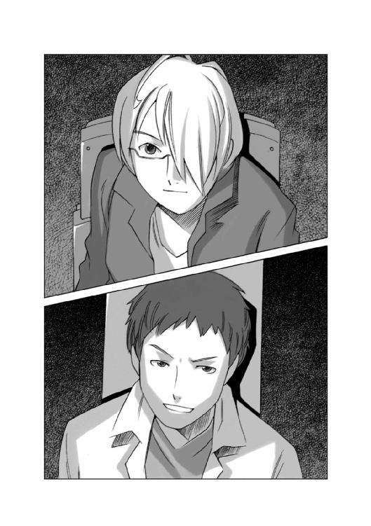
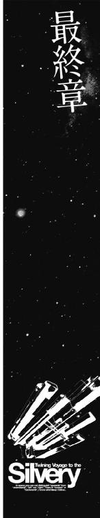
人類の生存圏の半分を支配下に置くマガザン帝国の首都惑星ブックス。その中心にある帝都ピクネクトスには、帝国を統べる皇帝の王宮と、皇帝の手足となって帝国を動かす司法、立法、行政、軍事の各部門の最高機関が置かれている。
その最高機関のひとつ帝国貴族院では、新皇帝による帝国議会が召集されることとなっていた。
議会開催を明日に控えた王宮では、帝国国内の名だたる大物貴族たちを集めた晩餐会が開かれていた。
様々な思惑を抱いた門閥貴族たちが懐に毒の剣を忍ばせて互いの腹を探り合うこの晩餐会は、利害の絡み合う複雑な帝国の権力関係の縮図でもあった。
この日、晩餐会に出席した人々の注目を集めたのは、一人の若い女性の貴族だった。
彼女の名はレイラ・エルノリク。
帝国辺境にある領土に、希少金属であるシリリウムを産する鉱山を持つ、エルノリク男爵家の若き当主であった。
彼女の領地である惑星ホルストが、マルス家の息のかかった宇宙海賊によって封鎖され、領民に餓死者が出るその寸前にまで追い込まれた、という事実。そしてそのマルス家の工作が失敗したという事実。この晩餐会の広間にいる者で、この二つを知らぬ者はいなかった。
晩餐会の開かれている大広間の脇にある控えの間......主にセキュリティ関係者の利用するその小部屋で、大広間を映し出しているマルチスクリーンを見ていた、身分の高そうな服を着た若い男が、面白そうにつぶやいた。
「まるで......リトマス試験紙だな」
「何がですか？ クリス様......」
セキュリティ担当者らしいがっちりした体格の男が尋ねると、クリスと呼ばれた若い男は、中央のモニターに映っているレイラを指差して答えた。
「彼女だよ......彼女は、マルス家の眷属かそうでないかを見分ける実に良い試薬だ。
彼女に話しかける者は、マルス家を快く思っていないことをアピールし、逆に彼女をことさらに無視する者は、それによってマルス家に忠誠を誓っていることの証にしている......ほら、また、彼女に話しかけた者がいる......あれはマイア家の縁戚の頑固親父エデッサ公だ。あの爺さんはマルス家は存在自体が帝国の汚点だと言い切るほどのマルス家嫌いだからな。
しかし、彼女がここに顔を出すということは......誰か知恵者が近くにいるってことだろうね。ここに来れば、敵もできるが味方もできる......彼女には今、その味方が必要なんだ」
そして、クリスは面白そうに右上のモニターを指差した。
「こっちはこっちで、みんな揃って苦虫嚙み潰し大会を開いているな......マルス家の一派だ。どんな会話をしているか、見ただけで想像がつくな......まず、ここは貧乏貴族の娘が偉そうな顔で出席できるような場所じゃない、分をわきまえろ！......と、レイラ・エルノリクを貶して、次に、シリリウム鉱山の分け前に与りたい、欲の皮の突っ張った連中だ！......とレイラに話しかける人間を貶す。そんなところかな」
控え室で、皇弟クリスが晩餐会の裏方を続けていた頃。
大広間では、マルス家の縁戚が集まってクリスが予想していたとおりの会話を交わしていた。
「まったく、何を考えているのだ、あの女は！ この晩餐会はエルノリク男爵家などの下賤な人間が、顔を見せることのできる場所ではないのだぞ！」
「まったくもってそのとおりですな。皇帝陛下の招待状が来ても、分不相応ですと、辞退するのが礼儀というものだろう」
「その薄汚い下賤な女のところに行って歓心を買おうという、見下げ果てた奴らも跡を絶たん、実に嘆かわしい......」
「あわよくば、シリリウム鉱山の利権のおこぼれに与ろうという、欲の皮の突っ張った俗物どもだよ」
レイラを取り巻く貴族たちを口汚く罵るマルス家の一族の言葉を聞いていたエルキュール侯爵家の当主、ルマンド・エルキュールが、小さく首を振って、たしなめるように言った。
「考え違いをしてはいないかね？ 欲の皮を突っ張らせたのは我々だろう。
海賊どもを使ってとことん追い詰めて、タダで鉱山がこっちに転がり込むように仕向けよう......などと考えずに、適当に痛めつけておくだけにして、足元を見て交渉し惑星を買い取ればシリリウム鉱山は我々のものになったかもしれんのだ。
確かに、少ない投資で大きな利益を上げるのは正しい。だが、投資なくして利益は得られん。タダでボロ儲け、などという浅ましいことを考えたのが間違いだな」
ばつが悪そうに互いの顔を見合わせるマルス家の姻戚たちを見回したルマンド侯が、ワイングラスを口に運ぼうとしたそのとき、一人の執事がルマンド侯の前に立って、深々と一礼し、メッセンジャーカードを載せた銀のトレイを差し出して告げた。
「タクマ皇帝が、ルマンド侯にお目にかかり、贈り物のお礼を申し上げたいのでぜひお会いしたいとのことでございます......」
ルマンド侯は、驚いたように目を見開いたあとで、相好を崩した。
「おお、そうですか、皇帝陛下が私めに、個人的にお言葉を......それはそれは！ すぐに参ります」
居並ぶマルス家の眷属たちの羨望の眼差しを浴びながら、ルマンド侯は執事の後について歩き出した。
タクマ皇帝の謁見の間は、大広間の隣にあった。
皇帝が大広間に姿を見せるときは、公式の立場であり、そこでは、明日の天気は？ といった当たり障りのない言葉が交わされるだけで込み入った話は行われない。
内密の話をするときは、こういった小部屋に貴族を招き入れて行うのがマガザン帝国の通例だった。
謁見の間は、それほど豪華には見えなかった。
落ち着いた色調の調度品が並んでいる部屋の雰囲気は、どこかの邸宅のリビングを思わせた。
歴代の皇帝の中には、純金の装飾品で部屋を埋め尽くした者もいた。マガザン帝国の皇帝というのはそれすらも容易いほどの富と権力をその手にするのである。
謁見の間に足を踏み入れたルマンド侯に、皇帝は実に気軽に声を掛けて手招きした。
「ああ、エルキュール侯爵閣下。お待ちしておりました。どうぞこちらに」
その気さくさに、一瞬戸惑ったような表情を浮かべながらルマンド侯は、皇帝の前に進み出た。
皇帝の座っている椅子の前には、小さな床机が置かれ、その上にチェス盤が置かれているのが見えた。
そして、チェス盤を挟んだ反対側には、一匹の黒猫が座っていた。
黒猫は、ひょい、とチェスのコマを爪でひっかけると、ぽん、とチェス盤の上に置き、右側にあったテンキーを爪でカチャカチャと打った。
皇帝の前にあるモニターに「チェックメイト」の文字が浮かんだ。
「え？ あ、そうか、いや、君は容赦無いなあ......こう見えても僕は皇帝なんだぞ」
タクマ皇帝は黒猫を恨みがましい目で見たあとで、ルマンド侯に向き直って笑いかけた。
「この知性化猫くんは、実に楽しい話し相手だね。君のところのコングロマリット......そうそうフュージリアグループというところで研究されていたそうだが、今のところ二匹しか知性化に成功していないそうだね」
ルマンド侯は目を見開いた。
その猫は、間違いなく自分たちの研究機関で開発され、そしてスパイの目的で皇帝の下に送り込まれる予定の猫だった。
献上することは内定していた。しかし、それはフュージリアグループに忠誠を誓わせる摺り込みと、暗示による心理抑制を行って、完全に道具として完成してから送り込まれる予定だったのだ。
フュージリアグループに忠誠を誓わぬ状態では、何の利益も無い。それどころかフュージリアグループにとってそれは障害ですらある。だからルマンドは抹殺を命じたのだ。
だが、その猫は、抹殺されるどころか、堂々とこうやって皇帝の前でチェスを披露しているのである。
「あ、はい......残念なことに、知性化に成功したのは二匹だけでございまして......」
しどろもどろになって弁解するルマンド侯の額には脂汗が滲んでいた。
皇帝は、ルマンド侯を正面から見据えてゆっくりと、しかしはっきりした口調で言った。
「この猫には、ちゃんとした人格がある。その意味においてこの猫は人間と同じだ。
私は彼の後見人になることに決めたよ。彼は私の友人だ......彼は公私を通じて常に私と共にある。私はこの帝国議会の後、戦後復興のために帝国内を隅々まで視察して回るつもりだ。彼はその視察旅行の良い付き人になってくれるだろう。友人を紹介してくれて、どうもありがとう」
「あ、いえ、どういたしまして......」
謁見の間で、ミケを見たルマンド侯が、脂汗を滲ませて追従笑いを浮かべていたその頃。
帝星ブックスの宇宙港で、一隻のピンク色に塗られた旧型のコンテナ貨物船が発進準備を進めていた。
「ミケは幸せにやっているかなあ？」
機関士席に座ったサイラスがつぶやくのを聞きつけたハインツが笑いながら答えた。
「ああ、間違いない。皇帝陛下の付き人ならぬ付き猫だぞ。食い物も環境も帝国で最高のものが用意されているはずだ......それに彼女も一緒だし、寂しくはないはずだ」
「ええ、そうなんですけどね......なんか気になっちゃって......」
寂しそうに笑うサイラスを見て、リアンが元気づけるように言った。
「ほらほら、元気出そうよ！ サイラス君！ 宇宙は広いんだからさ、いろんな星やいろんな領地に行って、いろんなものを見てこよう！ そして、おみやげ持ってミケに会いに行こうよ！ きっとミケも喜んでくれるよ！」
「そうですね......」
微笑んだサイラスを見て、ハヤトがうなずいた。
「さあ、そろそろ出港承認が来る頃だ。準備はいいかい？」
「推進機準備完了！」
「航法システム、オールグリーン！ 異常なし！」
「各種通信回路、異常なし」
『船体各部センサー異常なし』
ブリッジにいる乗組員の報告が返ってきたとき、帝星ブックス宇宙港の管制センターから通信が入った。
『船籍番号ＳＧ七八三六ＴＲＣ四五五、銀星運輸所属の銀星号。こちらはブックスコントロール。出港届けが承認された。積荷の総質量、及び寄港地、経由地などに変更はありませんか？』
ハヤトが胸を張って答えた。
「変更ありません」
『了解しました、では引き続いて認証手続きに入ります、銀星号のメインコンピューターはこちらとリンクされていますか？』
ハインツがいつもと変わらぬ口調で答えた。
「リンク済みです」
『了解です、これより認証が転送されます。では、良い航海を！』
管制センターからの通話が切れるのと同時に、銀星号の船体に係留されていた電磁停泊ブイのジョイントが解放される、ごん！ という鈍く低い音が伝わってきた。
『ブックスコントロールから航法システム起動認証が入りました！』
ブリッジに、クララの電子人格特有の澄んだ声が流れ、メインコンソールのモニターランプに光が点り、メインスクリーンに出港承認を告げるグリーンのサインが表示された。
「銀星号発進！」
ハヤトはそう叫ぶと、両手に握ったピクトレバーを、加速方向に力を入れて押し込んだ。
船体の側面にある推進機の先端が、オレンジ色から、やがて白く光り始めると、銀星号は、ゆっくりと加速し始めた。
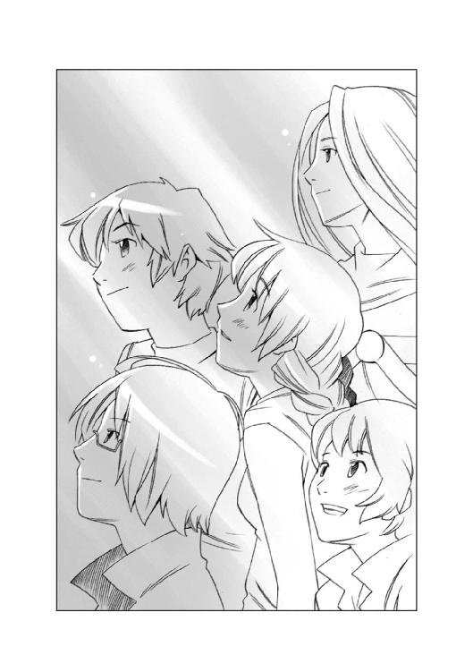
銀星号の、次の航海が始まった。
ＥＮＤ
あとがき
『銀星みつあみ航海記ＬＯＧ03』いかがでしたでしょうか？ このお話は、雑誌「ザ・スニーカー」に四回にわたって連載されていた物語を元に、構成を変えて大幅に加筆したものです。
もし「ザ・スニーカー」をお持ちの方がいらっしゃいましたら、読み比べて頂くのも面白いかもしれません。
このシリーズは、ご存じのとおり、私がスニーカー文庫で、五年にわたって続けてきた『でたまか』シリーズと同じ世界を舞台にしております。
「でたまか」世界のその後の話ではなく、逆に百年ほど時間を遡ってアウトニア王国の建国についてのエピソードを書こうと思って始めたもので、皆さんが想像していたとおり、銀星号の正体は、でたまかに登場するアウトニア王家の専用船「シザーズ・クイーン」です。
今回のＬＯＧ03には、アウトニア王家の先祖となる帝国皇帝の弟クリス、そして、マイドのご先祖様なども登場しておりますので「でたまか」から引き続いてお読みの方は、楽しくお読みになれるのではないかと思います。
さて、ＬＯＧ00から、このＬＯＧ03までの四冊をお楽しみ頂いた方には、少々残念なお知らせですが、今回の、この『銀星みつあみ航海記ＬＯＧ03』で、「銀星みつあみ航海記」は、ひとまず休止という形になります。
「銀星みつあみ航海記」は、私の構想では、五冊くらいでまとめるつもりでおりました。
帝国の辺境にアウトニアという国が建国される、そのいきさつと、銀星運輸が辺境国家を支える輸送会社として成立するところで、お話を終えるつもりでしたが、諸般の事情、そして私の力不足のため、そこまでシリーズを続けることができませんでした。
毎回、素晴らしい力作のイラストを描いて頂いた緒方氏には、申し訳ないとしか言いようがありません。すべては私の責任であります。
「銀星みつあみ航海記」はこの巻をもって、終わります。
でも、ご安心ください。
ご存じの方も多いことと思いますが、私の書く物語は、私の中にある一つの世界の歴史を、時代ごとに切り取って、その世界の、その時代に生きていた人々の姿を書く、という形式を取っております。
私の書いている物語......デビュー作の「時空のクロス・ロード」も「でたまか」も「ネオクーロン」も「ガンズ・ハート」も「小さな国の救世主」も「大日本帝国第七艦隊」も、実を言うと同じ世界の、違う時代のお話なのです。
ですから銀星号のお話は、ここで終わるわけではないのです。
『ネオクーロンＢ』で「でたまか」の重要キャラであるヴァルゲインが誕生したように、もしかすると、この「銀星みつあみ航海記」のハヤトやハインツ、そしてリアンやクララやサイラス、ミケというメンバーも、またどこか別のお話の中で顔を出すかもしれません。
実を言うと、この「銀星みつあみ航海記」シリーズの売れ行きが好調で、シリーズが続いたら書きたいと思っていたエピソードがありました。
それは、銀星号が航海中に惑星開発局の無人探査船から「ロストコロニー発見」という通信を受けて、その惑星を訪れる、というエピソードです。
そこは、人類が宇宙に進出し始めた頃に、開拓惑星を目指して空間転移した移民船が、転移に失敗し漂着した未知の惑星でした。
移民たちが、補給も生産もできないまま、その惑星で生き延びていく間に、高度な機械は消耗し機能を失い、でテクノロジーが失われ、動力源は石炭による蒸気機関。武器は黒色火薬による先込め式のパーカッションライフルというレベルになってしまった、このロストコロニーの名前は「惑星ドラング」と言います。
もうおわかりですね、この惑星は「ガンズ・ハート」の舞台となった惑星です。
今回はちょっと無理だったようですが、私の書く物語はすべてどこかでつながっていますから、このように「ガンズ・ハート」の後日談を「銀星みつあみ航海記」の中で書くことができるわけです。ですから、今回でひとまず終了する、この「銀星みつあみ航海記」のお話も、また、どこかで書くことができるかもしれません。
そのためにも、私は、より多くの人の「面白さ」にマッチングする「面白さ」を追求した物語を書き続けるつもりでおります。
スニーカー文庫の次のシリーズは、もしかすると、今まで私が一度も書いたことのないシチュエーションで書くことになるかもしれません。
それは「学園もの」です。
果たしてどんなものが出来上がるのか、私にもわかりません、期待してお待ち頂ければ、と思います。
シリーズを続けていく、本を出し続けていく、そのために作家にできることは、作家自身が面白いと思うものを書く。それだけです。
「銀星みつあみ航海記」シリーズも、私としては文句なしに「面白いお話」だと思って書いておりました。決してつまらないものを書こうと思って書いていたわけではありません。
当然と言えば当然のことですが......。
より多くの読者の「面白い」に向けて、日々努力し続けるのが、私の仕事なのだと思います。
なお、この「銀星みつあみ航海記」のＳＦ設定に関しては、ゲームデザイナーの「銅大」氏から、さまざまなアドバイスを頂いておりました。銅氏は「でたまか」シリーズの第三部に登場する、ローデス軍の「ドーダイ提督」のモデルになった方でもあります。
この銅氏に「スペースオペラの名作」について解説を書いて頂きましたので、スペースオペラに興味が湧いた方は、解説をお読みになって、ぜひとも素晴らしいスペオペの数々に触れて頂きたいと願う次第であります。
（本が出せることを感謝しつつ、日々努力を続ける零細物語製造業者の）鷹見 一幸
解説
銅 大
「銀星みつあみ航海記」は、スペースオペラ＝宇宙冒険活劇とも呼ばれる小説である。本書を読むと宇宙で冒険で活劇である点に疑いはない。銀星号とその乗員たちの宇宙冒険活劇はこれからも続くが、シリーズとしてはここで一応の完結である。
さて、そこで提案がある。これをお読みのあなた。「銀星みつあみ航海記」の完結を機会に、他のスペースオペラに手を出してみてはどうだろう？
もちろんスペースオペラといっても種類も数も多い。出来の良し悪しよりも先に、好みとして合わない作品も多いだろう。だからここでは、あなたにとって「銀星みつあみ航海記」が面白かったなら、この作品も面白いだろうという視点で選択してみたい。
選択のポイントはもうひとつ。気楽な気持ちで手が出せるもの、だ。いくら面白いからといって、「ペリー・ローダン」シリーズを三〇〇冊積み上げて、さあ読め、ほら読めというのは一種の拷問に近かろう。また、入手難易度はやや高いものもあるが、絶版はない。
まずは小説から紹介しよう。
創元ＳＦ文庫から出ている『惑星カレスの魔女』（ジェイムズ・Ｈ・シュミッツ）という本がある。個人持ちのオンボロ宇宙船で商売をしている若い船長のところへ、魔女（超能力者）の少女が押しかけ女房よろしくやってきて、ふたりで大冒険という、銀星号の冒険にほど近い感覚の物語だ。これ一冊で完結している点も手を出しやすいはずだ。
表紙のイラストはトトロやラピュタでおなじみの宮崎駿さん。主人公の青年船長とヒロインの魔女っ子が宇宙船の整備をしているイメージイラストである。残念なことにこれ一枚だけだが、作品世界をよく表している。
ふたりが乗るベンチャー号という宇宙船は旧式だが古いながらもきちんとした丈夫な造りで、トラブル時にはこれが心強い。銀星号がいろんなパーツの寄せ集めで再生した宇宙船であっても手を抜いた造りになっていないのと同じで、こうしたコダワリは是非とも欲しい。宇宙船というのは、スペースオペラにおける重要なキャラクターなのだから。
もう一冊、これまた創元ＳＦ文庫の『宇宙の呼び声』（ロバート・Ａ・ハインライン）も元はジュブナイル小説なので読みやすい。お父さんが宇宙船を買って家族を連れ、火星や小惑星帯へ宇宙旅行に出かけるという内容だ。銀星号の航海と同じくさまざまなトラブルが発生するのを、知恵と勇気で切り抜けていく展開は、鷹見一幸さんのファンなら間違いなく面白いはずだ。やんちゃな双子の息子やお色気な娘、煮ても焼いても食えない婆ちゃんなどに普段は振り回されているくせに、決めるところは決めるタフなお父さんが萌え要素である。
続いてコミック・漫画のスペースオペラを見てみよう。
『ＱＵＥＥＮ１３１３』（新谷かおる）という文庫サイズのコミックが秋田文庫から出ている。タイトルにもあるクイーン号は銀星号と同じく商業用宇宙船だ。円盤型の船体の後ろにコンテナを曳航する形で貨物を運ぶ。見かけはボロだがコンテナ部分を切り離すと戦闘艦とも互角に戦える高性能だ。宇宙商人がなぜにここまで重武装を、と疑問に思うかもしれないがそこにもちゃんとした理由がついている。後半は駆け足気味であるが一冊できちんと完結した良質のスペースオペラ漫画だ。
息抜きがてら、職安コンピュータが自動で仕事を振り分けるという導入をもつ明るいノリのスペオペ漫画も紹介しよう。朝日ソノラマの『ちまりまわるつ』（竹本泉）収録の「レディ・タンポポ」二編である。おじいちゃんの遺言で宇宙海賊にされちゃう女の子や、それに振り回される男の子の軽いノリのスペースオペラ漫画だ。
『ベムハンター・ソード』（星野之宣）という講談社漫画文庫のコミックも面白い。ベム（ＢＥＭ）というのはバケモノのような宇宙生物の総称だ。初期のスペースオペラといえば醜いベムが（半世紀前の基準で）肌もあらわな（アメリカ人の基準で）美女を襲うという実にチープな表紙が雑誌を飾った。そのベムとの対決を現代風にリスペクトした本作は、ベムの生態的な部分にまで踏み込んで物語に深みと厚みを与えている。
続いて映像作品を見てみよう。銀星号同様に商業用の宇宙船が良いキャラをしている作品では「宇宙船サジタリウス」というスペースオペラの名作アニメがある。ただ、これは全七七話と何しろ長い。最初の一三話まで収録のビデオを近所のビデオ屋さんで見かけたら、時間と心に余裕があれば見てもらいたい。
同様の作品として宇宙船で乗客を運ぶ宇宙ツアーなアニメ、「ＹＡＴ安心！ 宇宙旅行」がある。これまた話数が多くて長いので内容の軽さに比較して時間的に敷居が高い。
そこでここでは、短く手軽で良質の、新海誠監督作品のアニメ「ほしのこえ」をオススメしよう。これは宇宙に旅立っていった少女と地球に残った少年の心の交流が中心の物語である。火星や木星など宇宙の映像は息を吞むほどに美しい。
「ほしのこえ」では宇宙と地球の間の時間のずれが、別離の切なさを盛り上げている。これはウラシマ効果と呼ばれるものだ。光速に近い速度の宇宙船では時間がゆっくりとなり、実際には何年もかかって他の星に行っているのに宇宙船の中の人にとってはわずか数日になる。
宇宙に旅立った少女が若いままなのに、地球に残った少年が大人になる展開にはそんなウラシマ効果の設定がある。スペースオペラの悲恋物にはなくてはならない設定だ。
ゲームのスペースオペラも忘れてはいけない。
「銀星みつあみ航海記」のように宇宙船で商売をするボードゲームといえば、「マーチャント・オブ・ヴィーナス」（Avalon Hill Game Company）というタイトルからして『ヴェニスの商人』（ウィリアム・シェイクスピア）をもじった「ヴィーナス（金星）の商人」のバカで愉快な傑作ゲームがある。プレイヤーはそれぞれ商用宇宙船を使って貨物や乗客を他の星の住人に売りつける。この輸出する商品というのが地球人ならロックビデオで、他の宇宙人も巨大な文鎮とかさらさらな砂とかになる。価値観もライフスタイルも違う宇宙人同士のかみ合わない貿易が面白い。このゲームの宇宙船の貨物の積載個数には限界がある。だから宇宙を旅している途中の小惑星で高価なアイテムを拾うとそれまで積んでいたものを下ろさなくてはいけない。しょうがないから「お客さん、すみませんがココで降りてくだせぇ」と乗客を小惑星に残して立ち去る外道なプレイもアリだ。
テーブルトークＲＰＧでは、自由貿易宇宙船を購入できるが同時に四〇年もの長期ローンを抱えて返済に苦労しながら交易を続けるプレイが可能な『トラベラー』（雷鳴）もある。これで手に入る宇宙船のうち、Ａ２型外航自由貿易船は委託された貨物で船倉をいっぱいにし、さらに乗客を満員にして船賃を集めてもローンを払えば赤字になる。ではどうするかというと、積み荷を自分で買って宇宙船で運び、他の星で高く売却するという貿易会社の真似をやって金を稼ぐのである。サイコロの目が悪くて高く売れないと借金取りから逃げ回る羽目になるのだ。
ゲームの中でくらい世知辛いプレイはイヤだというなら、私がデザインした「スターレジェンド」（ＦＥＡＲ／エンターブレイン）をオススメする。マーチャント・プリンスというキャラクラスを選べば、いきなり大富豪な設定があなたのキャラクターに付き、執事にかしずかれるプレイが楽しめる。従者系の特技を取得すれば戦闘も執事が戦ってくれる。旦那様／お嬢様であるあなたのキャラクターの代わりに。
まだまだ紹介したいスペースオペラはたくさんある。そのどれもが、宇宙が好きで、冒険にわくわくして、活劇に心を躍らせるものだ。あなた自身も探してみて欲しい。一緒にスペースオペラを楽しもうではないか。
カバー・口絵・本文イラスト／緒方剛志
デザイン／アフターグロウ
銀星みつあみ航海記
LOG.03 僕が仲間になった理由
鷹見一幸
平成27年1月1日 発行
(C) Kazuyuki TAKAMI 2007
本電子書籍は下記にもとづいて制作しました
角川スニーカー文庫『銀星みつあみ航海記 LOG.03 僕が仲間になった理由』
平成19年12月1日初版発行
発行者 堀内大示
発行所 株式会社ＫＡＤＯＫＡＷＡ
〒102-8177 東京都千代田区富士見2-13-3
03-3238-8745（営業）
編集 角川書店
〒102-8078 東京都千代田区富士見1-8-19
03-3238-8694（編集部）
http://www.kadokawa.co.jp/